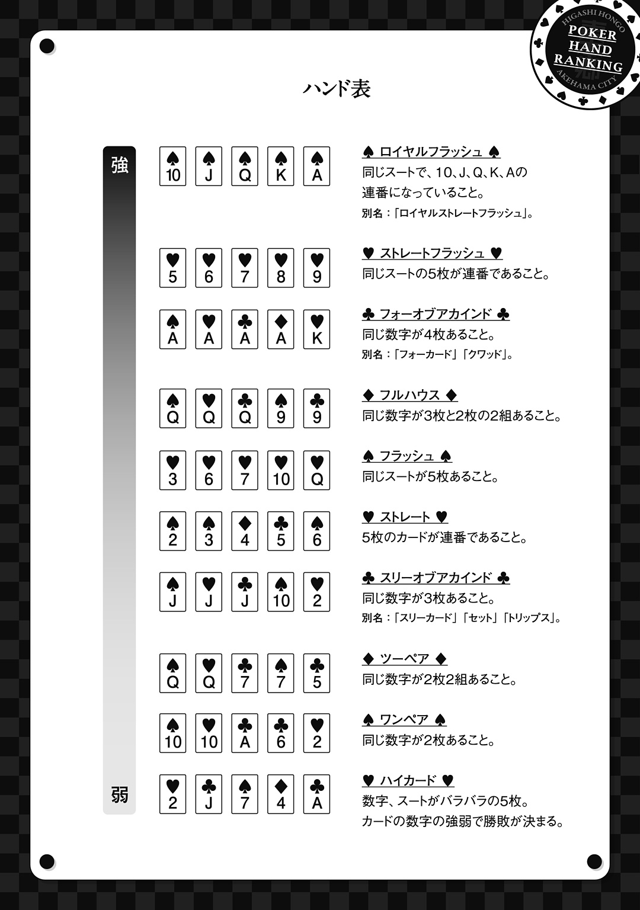

| スクールポーカーウォーズ 2 | |
| 維羽裕介 | |
この本は縦書きでレイアウトされています。
また、ご覧になる機種により、表示の差が認められることがあります。
この作品はフィクションです。
実在の人物・団体・事件などにはいっさい関係ありません。

埃っぽい下駄箱にくたびれたスニーカーを投げ入れて、薄汚れた上履きを履く。上履きの先にはめ込まれた緑色のゴムに付着した汚れを見て、母から「お願いだから夏休みに入る前に上履きを持って帰ってきてね」と言われていた事を思い出す。
一か月に一度は持ち帰りなさいと言われていたが、どうにも面倒臭く、あの手この手で母の追及の手を躱し続けてきたその間、実に四か月。
誇るべき成果だ。
明日から夏休みという高揚感も手伝って、なんだかとてつもない偉業を成し遂げたような気分になってしまう。
人混みの流れる方向に歩きながら、胸元に挿したボールペンを手に取って、左手の甲に「上履き」と書く。こうしておけば絶対に忘れないので一安心だ。
ボールペンをくるくる回しながら、一年生の下駄箱の脇を通る。
昨日のオーガさん捕獲作戦では名も知らぬ一年生――今では宇都木慎という名前も判明している――の上履きを拝借した上に砂だらけにしてしまったため、第五自習室でのミーティングの後、彼の上履きを雑巾で乾拭きしてから下駄箱の中に突っ込んでおいた。
しっかりと磨いたからきっと宇都木くんも許してくれるだろうと思いながら、横一列になって歩く一年女子の間をすり抜けようとした瞬間、背中をどんと叩かれた。思わずたたらを踏みながら振り返ると、
「浦原！ いよいよ夏休みだな！ テンション上がるぜ!!」
悠木だった。
水泳部に所属するこの男はまだ夏休み前だというのに日に焼けて真っ黒になってしまった。そんな悠木が左手の甲に書いた文字を見ている事に気付いて、自嘲気味に笑い返す。
「タトゥーシールみたいだろ」
その言葉を聞いた悠木もまた、にやりと笑う。
――かつて自分がナッツクラッカーズに在籍していた頃、王座戦に挑む際に団員ナンバーを手の甲に貼ろうと誰かがタトゥーシールを買ってきたのだ。大将の悠木がナンバー１、副将の自分がナンバー２を使う予定であったが、王座戦の直前で逃げ出した自分の手にそれが貼られる事はなく、その機会は永遠に失われてしまった。
ふと一年前の夏の出来事を思い出して、隣の悠木に微笑みかける。
「あ、そうそう、今年は倒れないように気をつけてな」
「............」
悠木の顔が一気に曇るのを尻目に、目を細めて物思いに耽る。
懐かしい。
今でこそ仲の良い悠木であるが、去年の今頃まで一言も話した事がなかったのだ。
――例年よりも早い梅雨明け宣言が発表された日の放課後、図書室でポーカーの戦術本を何冊か読んだ後、限度枠まで借りてぶらぶらと廊下を歩いていた時の事だ。小学校で仲の良かった友達とは離ればなれになり、どうにも馴染めないクラスは居心地が悪かった。帰りの会を終えて二時間、流石に誰もいないだろうと思って一年五組の教室の扉を無造作に開けた瞬間、ロッカーの中に身体を突っ込んで何かをしている生徒がいた。
悠木だった。
しかも何故か白衣を着ていた。
今でもその光景は脳裏に刻み込まれている。壁に掲げられた時計は午前十一時二十四分、教室の後ろにある傷だらけのロッカー、思いもよらぬクラスメイトの出現に飛び上がった悠木、床に落ちた試験管、割れた試験管と周囲に飛び散った茶色の液体。
襲い掛かるアンモニアと塩酸と別の何かの刺激臭を嗅ぎ取って、自分は咄嗟に口元を押さえた。反して悠木はこちらを見ながら言葉にならない呻きを漏らしてその場に立ち尽くしていたのを覚えている。
何やってんだこいつ。
そして、何やってんのかは分からないが、とにかく関わり合いにならない方が良さそうだと結論を出して立ち去ろうとした自分の目の前で、悠木がワックスかけたての床にゲロった。
未消化の唐揚げが自分の足元までころころ転がってきたのがやたらと印象的だった。
ゲロをまき散らしながらゾンビみたいな歩き方でこちらに近付いてくる悠木を見てめちゃくちゃ焦ったのを覚えているが、今となっては良い思い出だ。
辛い出来事があった時でも、あの姿を思い出すだけで頑張る事ができる。
とは言え、その時の自分には無視する事ができなくて、ゲロまみれの悠木の腕をかついで保健室まで連れて行き――「しっかりしろ！ 傷は浅いぞ！」――、クーラーの効いた保健室でうたた寝していた養護教諭を叩き起こして――「急患です！」――、一安心とばかりに教室に戻り、そして教室の床に残された悠木の吐瀉物と対面する事になったのだ。
教師は急用で既に帰宅しており、このまま無視して帰っても自分を咎める者がいるとは思えない。しかし万が一、このまま教室が施錠されてしまった場合、翌朝の教室が阿鼻叫喚の渦と化すのは火を見るより明らかだったので、吐き気を堪えながら濡れ雑巾で拭いて帰宅する事となったのである。
何が悲しくて、話した事もないクラスメイトの吐瀉物を処理しなくてはならないのか。一人息子の身にいずれ起こりうる両親介護の予行演習と思って、じっと耐えた自分は本当に偉いと思う。
その翌日の夕方、悠木は母親に伴われて浦原宅まで菓子折りを持ってやって来た。
幸いにして目撃者が自分一人であったため、ゲロ悠木とか呼ばれていじめに発展する事はなかったが、秘密裏に謎の水溶液を調合したその真意について、本人は未だに沈黙を貫いている。ともあれ、それ以来、悠木は俺の忠実な舎弟となったのである。
「むふっ」
「おい浦原。お前、今何を想像した」
肩でぶつかってくる悠木を手で押し退ける。
「ちょっ、痛いからやめろよドクター・ゲロ」
「お前なんかクラス中から嫌われてしまえばいいんだと思ったけど、もう嫌われてるな。――ん、何だあれ」
悠木の見据える先、一階の中央ホールには大きな人集りができていた。
いつもは校内の催し物やボランティア募集の張り紙、「抹茶飲もうぜ！」という台詞と満面の笑みを浮かべた片木が写る茶道部員募集ポスターが画鋲で乱雑に張られている大きなフェルトの掲示板。
その全てが占領されていた。
Ａ４用紙を幾重にも貼り合わせた張り紙が掲示板を蹂躙し、まっさらなキャンバスと化した掲示板に書かれた最初の三文字を見つめる。
幻覚かと思った。
なので目を瞑ってから大きく深呼吸をする。しかし残念な事に目を開いた後もなお、常軌を逸した大きさの挑戦状はそこに存在していた。
挑 戦 状
発 ポーカーモンスターズ 江頭妙子、浦原甚助、柳雪友、赤村誠、小此木祐
宛 明浜撲克俱楽部 樫野明殿、月森らら殿、坂井優作殿、黒崎悠真殿、吉富慎造殿
来たる秋期公式団体戦「納涼お月見杯」にて決戦を申し込む。
王座戦にて貴殿らの首を頂戴し、我々がこの学校の王者である事を証明する次第である。
以 上
静かに呼吸を整えて、「挑戦状」の三文字を見つめる。
隣でぎゃーぎゃーうるさい悠木の声も、いつの間にか近寄ってきた新聞部の取材の声も、周囲を取り囲む生徒のざわめきも、外から聞こえる夏の蟬時雨も、今は耳に入らない。
不思議なくらいに、心が躍った。
＊＊＊
終業式が終わり、教室でのホームルームが終わった瞬間からものすごい騒ぎだった。教室中の生徒が自分目掛けて駆け寄ってきて、
浦原お前すっげぇじゃん！ 夏休み前にとんでもないサプライズだよな！ 俱楽部との王座戦って何か月振りだ？ 最後のは「ハイレートリング」の先代レギュラーだっけ？ おー、あったあったあったあった。レギュラー陣が抜けて主将がゴリ四世に代わったんだよな。学内アカウントの掲示板に九代目のコメント出てたよ、「受けて立ちましょう」って。しっかし色物メンバーだよな。オール１の救世主に、つい最近まで不登校だった天パのなんとかかんとかに、大会入賞歴なしの小此木だろ？ すごいよねー、江頭さんってポーカーしてるとこ見た事ないけど、強いの？ そりゃそうだろー、一匹狼の浦原がつるむんだからよっぽど強いんだよな、あの転校生！ 見た目はそんなに凶暴な感じしないけどね。あ、でも、結構モテるらしいよ。ほら、うさぎ強盗団の岩渡さんも、
――この感動を伝えるのは難しい。
一年近く教室から疎外されていたのだ。クラスメイトから話し掛けられる事と言えば級長の「浦原くん、提出物早く出してください」か、謎の使命感に駆られて執拗なベルマーク取り立てを行う福祉委員の「浦原。今月のベルマーク回収ノルマ、達成できてないぞ」ぐらいだったのに、普段全く話さないクラスメイト達が自分を取り囲んで質問攻めにしている。今、自分は二年四組の話題を独占しているのだ。すごく嬉しい。
「浦原っ！」
ざわめきが止まった。
この至福の時を邪魔する者は誰であろうか。
眉間に皺を寄せながら声の出所の方を振り向くと、教室の後ろの扉から赤村が顔を出していた。黙れ天パっ！ と怒鳴りたいのを必死に堪えて、
「......どうした」
「姉御が『生徒指導』された」
生徒指導。
それは生徒にとっての恐怖の象徴であり、一度入れば二度とは出られぬ強制収容所と概ね同じ意味合いを持つ。生徒指導なんて名目はあるものの、十中八九、その生徒の指導には教員の怒りを伴うし、他の生徒は立ち入る事ができないから完璧なアウェイとなる。隊長が呼ばれた理由は昨日の火災警報と避難器具不正利用の件であろう。
「行こうぜ！ 姉御の一大事に立ち会わないわけにはいかないだろ」
そう言って赤村は首を引っ込めた。
慌てて立ち上がり、周囲にいる生徒をすり抜けて廊下に飛び出す。階段を三段飛ばしで降りて赤村の背中を追う。一階の生徒指導室に駆けつけた時には既に柳が入り口の前に立っていた。柳が指先で生徒指導室を指し示す。
「壮絶な魔女裁判がまさに今、この中で」
「入らないのか？」
自分の問いかけに柳が首を振る。
「嫌だよ。わざわざ怒られるなんて」
そりゃそうだが、ずいぶんと冷たい事を言う。
赤村が廊下の床にどかりと胡座をかいた。顎の下を搔きながら、
「しかし理不尽だよなあ。何が何でもオーガさんを捕まえろって言った癖に、今度はそのやり方に問題があったなんて」
その発言を聞いた柳が、無理もないよと呟く。
「オーガさん騒動はほとんどの生徒に知らされていないんだ。しかも僕らは書面の上ではオーガさんを取り逃がしている。教師にしてみれば、無断で火災警報を鳴らし、避難器具を使用した僕らを怒らないわけにはいかないよ。だって、ちょっと考えてみてよ。戸叶さんを捕まえられなかった僕らに――」
柳の話が長くなりそうな予感がしたので、話を聞く振りをしながら物思いに耽る。
――オーガさん捕獲作戦は、戸叶彩華を捕まえたNovember-9に軍配が上がった。
昨晩、November-9に伴われた戸叶が、ポーカー活動審議委員会――通称ポーカー審議会――の前で全てを語ったらしい。
自身が九龍飯店でプレイしていた事、Mr.Ogreというハンドルネームとパスワード、アカウントの開設時期、その目的、送金先の口座――もちろんここには利益の一部しか入っていない――。Mr.Ogreしか知り得ない事実を多数自供した事によって、ポーカー審議会も彼女が犯人である事を確信し、速やかに警察へ報告したという。
モンスターズの面々も、本日の朝の会終了後に四人まとめて呼び出され、犯人捜しが終了した事と捜査に協力した慰労の言葉を告げられた。自分達はNovember-9の健闘を口々に讃え――互いの尻をつねって笑いを堪えながら――、本件は幕を閉じた。
こうして、オーガさんが二人組であった事実は闇に葬り去られた。
その後、真の実行犯である小此木から聞いた話によれば、幸いにしてMr.Ogreの利益については何ら言及されなかったそうだ。もしかしたら、その利益を警察が押収してしまうと色々と面倒な事になるのかもしれない。
なお、九龍飯店に残っている軍資金については既に柳が回収する手筈を整えており、引き出すために必要な経費を除外した全額のうち小此木が四割、戸叶が六割受け取るらしい。
ちょっぴり羨ましいと思ってしまった自分を諫める。
自分の目的は金ではない。
そんな想いを新たにして意識を現在に戻してみたものの、柳の話はまだ続いていた。
「――教師が世間体を求めるのであれば、僕らはそれに配慮する。......オーガさん獲得という最大の目的は果たしたんだ。彼らの気持ちくらい汲んであげようよ。妙ちゃんが僕らの代表として怒られて、この一件はこれで手打ち。きっと妙ちゃんだって怒られている時は神妙な顔をして、説教が終わった瞬間『では、わたしはこれで』とか言って立ち去るよ」
言われてみれば、隊長はすごくそういう態度を取りそうだと思う。
ようやく柳の説教が終わった事に安堵した赤村が、ふと何かを思い出したように周囲を見回す。
「そういや、小此木どこ行った？ 浦原を呼びに行こうってんで一緒に教室出たはずが、気付いたら消えやがって――おっと、」
扉の向こう側で誰かが席を立つ音がした。
慌てて床から立ち上がる赤村の横で、自分と柳が後ろ手で休めの姿勢を取る。一歩遅れた赤村が休めの姿勢を取るのと生徒指導室の扉が開くのはほぼ同時だった。
まず出てきたのは、隊長の所属する二年二組の担任である狩野。
五十代に近付いた細身の英語教師で、弓道部と将棋部を掛け持っている。授業の質は高いのだが、授業中に積極的に挙手したり、会話練習で前に出たいと主張したりした者に加点するところがあまり好きになれない。それを「教科に対する関心意欲態度」と捉えてしまうのはあまりに乱暴だと思う。
「浦原くん」
「はい」
狩野がいつものような困り顔で、
「カラーシャツは校則違反だからね」
「ですが、自分の場合、白シャツの上にワイシャツを着ると乳首が透けてしまいますので」
「そうか。だったら仕方がない......」
納得し難い話であるものの、生徒のコンプレックスを不用意に刺激すべきではないと判断して、狩野は頷いた。
続いて現れたのが保健体育を担当する樋口。
見た目は普通のクリーチャーである。
体重八十キロはありそうな中年太り、抵抗戦線を展開している短い白髪、燃えそうなまでに濃い脂汗の輝く体、そして日常的なアルコール摂取によって醸成された伝家の宝刀と称される口臭。
樋口の口元に鼻を寄せてはならない事は敢えてここで説明しておく。腐乱死体、シュールストレミングなどという甘っちょろいものではない、モノホンの化学兵器を口腔から発射してくる。それで倒れた生徒もいるし、犬がその臭いを嗅いだらたぶん死ぬ。教師になる前は歌舞伎町の鉄砲玉だったとかねてより噂されており、その噂に違わぬ体軀と人相を持ち合わせている。このクソ暑いのに黒っぽい長袖のワイシャツを着込んで茶色のサングラスの奥からか弱い生徒達を睨み付けて萎縮させる事を至上の喜びとしている五十六歳だ。
「浦原ぁ！」
「はい」
樋口が自分の服装をじろりと睨んで、
「カラーシャツ」
お前だって黒いワイシャツ着てるじゃねーか！ などと思ってはいけない。教師というのはああ言えばこう言う生き物なのだ。
「何度も申していますが、乳首が――」
「またそれか！ お前の乳首どんだけすごいんだよ！ 一度見てみたいわ！」
樋口はぶりぶり怒っていたが、個人的には今の発言はセクハラだと思う。
そして最後に現れた隊長は、目を真っ赤にして肩を震わせていた。
それを見た瞬間、ふざけてお勤めご苦労様でしたと言おうとした自分の口も、隊長を労おうとして天に突き立てた赤村の親指も、柳の中途半端な苦笑いも固まった。
中学生がしてはいけないレベルのマジ泣きだった。
樋口は廊下に立っていた自分達を一瞥して鼻を鳴らして去り、以後気をつけるようにと一言告げた狩野が樋口の背中を追う。二人の背中が職員室の中に消えたところで隊長の「ひっく」という言葉が廊下に木霊した。
メンバーの手前という事もあり、どうにか無表情を取り繕おうとする隊長であったが、悲しいかな、上気した頰はまるで熟れた林檎のようにも見える。
何か言わなくては、この沈黙を打ち破らなくてはと思い、咄嗟に思い浮かんだ言葉を口にする。
「......泣いてる？」
「――泣いてない！」
きっ、としてこちらを睨む隊長の頰を一筋の滴が伝った。
グラウンドで部活をしている誰かの叫び声がやけに遠く聞こえる。誰も何も言い出せないまま、沈黙が廊下を支配する。
しゃっくりを繰り返す隊長を見かね、意を決したような表情をした赤村が笑いかけた。
「姉御、俺の一番のトラウマを教えてあげましょう」
お前の一番のトラウマって不登校絡みじゃねえか。
どう考えても笑いの方向には行かない事が目に見えていたので、発言を止めようと一歩前に乗り出したが、赤村の口から飛び出たのはまったく別の話だった。
「小学三年生の時に、夏休みの思い出を原稿用紙三枚以上書いて提出するって宿題があったんです。それで俺、家族で鳥取のハワイ村に行ってフラダンスを踊った事を書いたんです。砂丘がまるで固まった波みたいに見えました、みたいな比喩表現もばっちり使って、これは名作だわ俺小説家になれるんじゃねえかってぐらいの力作でした。タイトルは確か、『車でハワイに行ってきた！』。え、ハワイって外国でしょ？ ハワイまで車でってどういう事？ みたいなインパクトも狙えるなと思って」
頑張れ、ほとんど引きこもリック。
隊長はあっという間に引き込まれ、真剣な面持ちで頷いていた。
「夏休み明け、作文を発表する機会があったんです。俺はもう自信満々に作文を読み上げました。サービスエリアで食べた焼きそば、原価割れするまで食べようと誓ったディナーバイキング、飛び入り参加のフラダンス。最初は訝しんでたクラスメイトも、俺が作文を読み続けるうちに、国内にハワイ村というものがある事を理解して、しっかりと聞き入ってくれました。読み終わった後は先生も褒めてくれて、俺もうこれは算数の宿題忘れたのもチャラになるなと思ったんですよ。そんな余韻に浸っていたら、次のクラスメイトが立ち上がって作文のタイトルを読み上げました。それが『ハワイに行ってきた！』」
先程と同じくらい深い沈黙が廊下を包み込む。
小学生にとっては大変なトラウマだと思う。
そんな過酷な過去を乗り越えた赤村がどうして部活動のチンケないざこざで不登校になってしまったのか、理解できない。
隊長はしばし硬直した後、赤村の肩をぽんぽんと叩いて、憐れみの表情を見せた。
「......ドンマイ」
「ありがとうございます」
よくやった、ほとんど引きこもリック。
惜しみない賞賛の視線を赤村に送っていると、後ろからどたばたと足音が聞こえた。その音が自分達の真後ろで止まり、
「あー、いたいた！ 何してるの、こんな所で」
振り向く。
期待の新人、オーガさんだった。
両手で持っているぱんぱんに詰まった通学鞄からはリコーダーや折りたたみ傘、体育で使うジャージの袖がはみ出していて、左肩には円柱形の水泳バッグを提げているが、やはりそこからも入りきらなかったタオルが顔を覗かせている。
無計画な小学生みたいだと思ったら、どうやら小此木もそれを自覚しているようで、
「みんな計画的に持って帰ってて偉いよねえ。ぼくは家に帰って、もう一回学校に来るようだよ」
小此木の脳天気な物言いに、摑み掛からんばかりの勢いで赤村が前に出た。
「馬鹿！ 大変だったんだぞ、姉御の一大事に何やってたんだお前！」
「うん、部活辞めてきた」
「――マジで!?」
赤村の驚愕の声に呼応するように、左肩の水泳バッグをゆらゆらと揺らしてみせる。
「俱楽部倒すんでしょ？ 二足の草鞋じゃ勝てないよ」
それを見て、へえ、と笑みを浮かべる。やる気になってくれたんだ。
――実際のところ、こいつには明確な動機がない。
自分はかつての雪辱を果たすために、隊長は兄の存在が生み出した茶番劇に終止符を打つために、柳は進学のためにポーカー審議会のポストを欲し、赤村は憎きサッカー部の先輩をぶちのめす事に全てを捧げ、小此木は違法賭博を黙秘してもらうためにモンスターズに加わった。つまりこいつは消極的な理由で参加した唯一の人間であり、サークルに参加すればそれだけで動機を満たす事ができる唯一の人間だ。
こいつの常人離れした発想力、頭の回転の速さが少し違う方向に向かうだけで、自分達の結束は簡単に崩れてしまう。
しかし、こいつは少なくともやる気になっている。絶望的な敵を相手にしてなおも戦う気なのだ。意外に思う反面、心の何処かではそれも当たり前と思ってしまう。
目の前の小此木を見つめる。
隊長と同じくらいの身長、少し大きめの制服、お茶碗を被せたような黒髪、穏やかで大きな瞳、にこにことした表情を浮かべる顔、そんな外見に惑わされてはいけない。
こいつの本性は人喰い鬼なのだから。
＊＊＊
狭い部屋に五人も集まるとめちゃくちゃ暑い。
なのでモンスターズの面々は実に自由な対策を採っている。
自分は窓辺に椅子を置いて風の通り道を確保し、隊長は誰にも譲るつもりはないとばかりに扇風機の前に陣取って宇宙人の真似、柳はパソコンから給電できるミニ扇風機を胸元に向けて、赤村は薄着の甚兵衛に着替えてうちわで扇ぎ、小此木は冷蔵庫の中に入ったきり出てこない。
小此木が冷蔵庫から出てこないとミーティングができないので、隊長が冷凍庫からアイスを取り出して皆に配った。青い着色料たっぷりのアイスを口一杯に頰張って美味しい美味しい涼しいねえと皆で呟いていたら、ようやく小此木が冷蔵庫から顔を出して「ぼくも食べたいのですが」と主張した。
「それではミーティングを始めます。気をつけ、礼」
すっかり泣き止んだ隊長が凛として微笑む。
「暑いので着座にて失礼します。さて、本日の議題は秋の王座戦と夏の特訓についてです。まず、既にご承知の通り、我々は俱楽部に挑戦状を叩きつけました」
赤村と小此木の拍手。
柳の手は動かない。代わりに口が動いた。
「今でも僕は妙ちゃんの考えに賛同できないね。戦うのなら寝込みを襲うべきだった。挑戦状は九月に入ってからでも遅くはなかったと思う」
臆病だと言われてもいい、自分も柳に同感だ。
ただでさえ負け戦濃厚なのだ。勝てる可能性は0.1％でも上げておくべきだろう。しかし、隊長はただただ面白そうに笑うだけで、
「あら、やなぎんともあろうお人がそんな卑怯な考えをするわけ？」
「卑怯と公正の垣根を越えた話をしているのさ」
口を尖らせている柳の額に隊長がでこぴんを入れた。予想外の威力に額を押さえて蹲る柳の横で、
「おバカさんだなあ。今日までのわたし達は大したデータを残していないんだよ？ どれだけ時間を与えたところで俱楽部は対策を施しようがない。情報を有したわたし達と情報を有さない彼らの夏休みは既に公平ではないでしょ。それにわたしのポリシーはクールにクレイジーに、そして少しばかりストレンジに行動する事だよ」
クールにクレイジーに、そして少しばかりストレンジなオーガさん捕獲作戦の代償は隊長の涙という惨憺たる結果を見たが、そこには誰も突っ込まなかった。
「さて、先日までポーカー未経験だったやなぎんや不登校だった赤村くん、キャッシュゲーム専門だった小此木くんは公式団体戦や王座戦についてあまり知らないと思います。浦原くん、説明してあげて」
「......いいだろう」
別にいいのだが、何だか漫画に出てくる便利な解説キャラにされているような気がする。
ホワイトボードの前に立つ。
これは先日、隊長と一緒に隣町で買ってきたものだ。まさかこれを抱えて二キロ近く歩かされるとは思わなかったが、今のところはモンスターズの意思疎通に一役買っている。そこに大きく「納涼お月見杯」という文字を書き殴った。
「俺たちは秋期公式団体戦『納涼お月見杯』に出場する事となった。流れは単純だ。五人一組のサークルでエントリーし、飛んだ時の順位に応じて所属サークルにポイントが加算され、その総合得点の上位五サークルが自習室を占拠できる。ポーカーは運に左右される事も多いゲームだ。しかし、サークルの五人がばらばらのテーブルに座る事で、分散する個人の実力を収束させている。獲得ポイント表は壁に貼ってあるものを見てくれ」
ひと呼吸おいて、
「そして今回、俺たちが挑む王座戦でも総合得点で勝敗が決まる。通常参加のサークルと違うのは、モンスターズの五人と俱楽部の五人が一人ずつ常に同じテーブルに座る事だ。テーブルブレイクがあろうが、プレイヤー補充があろうが、両サークルのメンバーがいる限り、その状態は維持される。両者の均衡が破れた場合も、ポーカー審議会は可能な限り両サークルのメンバーを分散する事が求められる。だから俺たちも王座戦を挑むにあたって、先鋒、次鋒、中堅、副将、大将を決めなくてはならない」
「それって、強い人を先鋒にするとか弱い人を大将にするとか、そういう小細工もありなわけ？」
赤村の質問に応じる。
「一番強い隊長を先鋒にすれば隊長は有利だろう。しかし残った俺たちは、想定よりも一つレベルの高い奴らと相対する事になる。総崩れになるリスクの方が大きいだろうな」
溶け出したアイスの残りを口に突っ込む。
「さて、公式団体戦の獲得ポイントストラクチャーは緩やかに上昇するから、サークルに上級者が一人いるよりもサークル五人が中級者になっている方が遙かに有利だ。故にプレイヤー層の厚いサークルが上位を独占している現状があり、一発逆転を目指す下位サークルは改定を要求している。しかしポーカー審議会はこのストラクチャーを『サークルの実力を適切に判断する目的に適っている』と説明していて、改定の兆しはない。つまり、如何にそのサークルが高水準になっているかが問われる。全員が背の高いどんぐりになっている必要があるってわけだ」
真剣に聞き入っている他の連中を見渡す。
もしかしたら、意識的に柳から視線を外してしまったかもしれない。
「こんなもんでいいか？」
「ありがとう」
隊長は小さくなったアイスの残りに齧り付き、木の棒に書かれた文字を睨んだ。
「能力的には申し分のないメンバーが集まったと思うけど、現時点では御三家はおろか、中堅クラスの練度だと思う。つまり、まだまだ俱楽部には及ばないって事だね」
立ち上がって、アイスの棒をまるで指揮棒のように振ってごみ箱に投げ入れる。
「課題は二つ。技術の底上げと全プレイヤーの分析。とはいえ、わたし達に使える時間は限られているんだよね。そこのところを説明しておこうかな」
隊長は男四人を順番に一瞥してから立ち上がった。
ホワイトボードに歩み寄り、黒ペンのキャップを取って文字を書き込んでいく。どうでもいい事だが、隊長の文字は丸くて可愛らしい。
「夏休みは三十六日間。日曜日をお休みにすると三十一日間、換算すると七百四十四時間しかないんだよ」
「そう言われると、なんかすごい少ないように思えてきた......！」
小此木が呻き、赤村がすごい勢いで頷く。それを見た隊長がにっこりと微笑んだ。
「そう言ってくれると思った。それでは一日二十四時間のうち、睡眠時間を十時間として、」
「ちょっと待って姉御」
「それは寝過ぎ」
「妙ちゃん何時に寝てるの。そして何時に起きてるの」
赤村と小此木と柳が同時に突っ込んだ。赤村は勢い余って椅子から立ち上がっている。自分はそれには加わらず、夏服を着た隊長の肢体を見つめた。
寝る子は育つって、誰が言ったんだっけ。
侃々諤々の議論の末、ようやく一日の睡眠時間が算定された。隊長は渋々といった体でホワイトボードに文字を書き込む。
「じゃあ、いいです。睡眠時間を八時間、食事や身嗜みの時間を一時間半、宿題や勉強、家のお手伝いに費やす時間が二時間半として、」
そこで再び柳と赤村が異論を唱えた。
一日に二時間半しか勉強しなかったら自身の受験計画に支障をきたすという柳と、一日に二時間半も勉強するのは基本的人権の尊重に反するという赤村の主張は平行線を辿る。その二人を無視して隊長は話を続ける。
「一日に使える自由時間は十二時間で、それが三十一日ある。つまり、わたし達がポーカーの練習をできる時間はたったの三百七十二時間しかないんだよ。これだけの時間で俱楽部を倒すには並々ならぬ努力と効率的な練習が必要だよね。今の状況、皆さん理解できた？」
俱楽部だって練習はしているのだ。それ以上の努力が必要である事は誰にだって分かる。
「夏休みは毎日午前九時に第五自習室に集合。お昼休憩を挟んで午後一時から練習再開。日曜日はお休みです。自主練に励んでも良し、遊ぶも良し、宿題をちゃっちゃか終わらせるも良し。でも、せっかく夏休みに入ったんだし、明日くらいはお休みにしよっか。それと――、」
どどどんどんという遠慮のないノック。
隊長が眉をひそめて、
「......どうぞ」
「失礼します、新聞部の長井でーす！ 夏休み不定期メールマガジンの取材に来ました！ あ、写真部も呼んでるので、後で撮影お願いしまーす。えーと、じゃあ、誰からインタビューしましょうかね。そりゃあモンスターズの隊長を務める江頭さんからに決まってますね。岡っち、録音の準備良い？ バックアップは？ はい、じゃあ、取材始めまーす！」
＊＊＊
鞄の中身を確認する。
うちわよし、ペットボトルの麦茶よし、食糧よし、財布よし、音楽プレイヤーよし、ポーカー戦術本よし、ウイスキーボンボンよし。
「あら、どこか行くの」
食器を洗っていた母が台所から顔を覗かせた。鞄の中身から目を離さずに答える。
「学校」
「今日から夏休みでしょ」
「夏期講習あるから」
「あら、偉いじゃん。学校の講習に申し込んだの？」
ポーカーの自主的夏期講習だから、きっと母の考えている夏期講習とは少し違うが、余計な事を言う必要はあるまい。学校＋夏期講習＝お勉強という拡大解釈をしてしまった母が悪い。
靴箱の上にあるキーボックスからママチャリの鍵を探す。クマの反射板がついたキーホルダーを引っ張り出しながら、ちらりとキーボックスの隣の置き時計を見やる。
午後二時六分。
「行ってきます！ 夕飯までには帰ると思う」
「今日こそ上履き持って帰ってきてよ！ あと暑いから帽子被っていきなさい！」
今時、中学生で帽子なんて被ってる奴はいないので返事はしないで家を飛び出す。しかし、マンションの一階ロビーを出て僅か五秒で母の忠告に従わなかった事を後悔した。
太陽は本気で殺しに掛かってきている。
歩きながらイヤフォンを耳に突っ込んで音楽プレイヤーの電源を入れる。駐輪場でママチャリを引っ張り出して、ぼこぼこになった籠に鞄を投げ入れてサドルに座り、立ち漕ぎで走り出す。
いつもなら坂を下って住宅街を直進するところだが、今日は細い脇道に逸れる。車も入れないような狭い路地をのんびり走って曲がり角を右に曲がる。
こういう日は樹々の生い茂る川沿いの道を行くに限るのだ。
小川の水面は太陽の反射できらめき、青々と茂った樹々の葉が日陰をつくり、爽やかな風を全身で受けながら、錆び付いたママチャリのペダルを勢いよく踏み出す解放感が心地好かった。
五分ちょっとで学校に到着して、「盗難や事故について、当校は責任を負いません」という無責任な看板の脇を通り過ぎる。駐輪場の一角に集中して駐輪しているのは、おそらく野球部か水泳部の連中だ。屋根のある場所は雨天晴天を問わずして大人気だ。誰だって濡れたり熱せられたりしたサドルに跨がりたくはない。
その場を素通りして比較的空いている左側の一角、西側に地元バス会社の看板が立っていて陽がぎんぎんに当たっている場所に自転車を止めた。
手で庇をつくって晴天の太陽を仰ぐ。ここなら西日もきっちり防げるはずだ。歩きながら鞄の中のうちわを取り出し、校舎一階の体育準備室に入った。
「失礼します。第五自習室の鍵をお借りします」
部屋の中では体育教師の菊池がクーラーの冷気で涼みながら、テレビの野球中継に夢中になっていた。顔だけをこちらに向けて、
「第五ならさっき誰かが持って行ったぞ」
確かにキーボックスを見てみると持ち出し済みになっていた。
誰だろう。
菊池はきんきんに冷えた麦茶をグラスに注いで一気に飲み干し、それからテレビを指し示して、
「なあ、浦原。お前も見ないか？ 今日で甲子園出場校が決まるぞ」
「いえ、自分は結構です」
結局、昨日は新聞部の取材で練習らしい練習はできなかったのだ。昨日の遅れは今日の内に取り戻さなくてはなるまい。
体育準備室を出て、部活棟の第五自習室に向かう。
部屋に入ったら窓を開けて扇風機を強にして、冷蔵庫に麦茶を入れて、パソコンを立ち上げて、昨日のポーカーリーグの録画分を見よう。使えると思った戦術やテクニック、見つけた癖をノートに書き残しておくのだ。綺麗にまとめたら皆にもメールで送った方がいいかもしれない。
しかし、先客は誰であろうか。小此木は今日一日旅に出ると言っていた。本命は柳、対抗馬が隊長、大穴で赤村というところか。
頭の中で柳のフェイスマークにオールインしながら、第五自習室の扉の取っ手に手を掛ける。
さあ、どうなる。
「おう、浦原じゃねーか」
自習室にいたのは赤村だった。夏休みの間は私服登校が許可されているので、Ｔシャツと短パンに下駄というラフな格好で扇風機の風を浴びながらノートパソコンに向かっている。
その姿を見ながら第五自習室を横切り、家から持ってきた麦茶を冷蔵庫に入れようと扉を開く。冷蔵庫の中にはジャスミンティーが入っていて、少しだけ訝しむ。このサークルの中でこういう小洒落た飲み物を飲む人間は一人しかいない。隊長だ。
「隊長来たのか？」
「来てない。と思う。鍵は俺が取ったし。そのお茶なら昨日からあったし」
「で、お前は何してんだ？」
赤村が肩をすくめる。
「別に。家にいてもやる事ないし、親が勉強しろ勉強しろってうるせーから、ここで昨日のトーナメントでも見ようと思って。お前は？」
「似たようなもんだ。俺も視聴するつもりで午後十一時くらいまでは起きてたんだが、そこで寝ちまった。でもネットで結果速報だけ見たぜ」
椅子の背にもたれかかっていた赤村が身を乗り出す。
「やっぱフラグメント・コムが一位か？」
「おう、大躍進だな」
全日本ポーカーリーグは米資本主導の下、ポーカーの発展及び新たなビジネスモデルの模索として、その産声を上げた。
監督官庁である警察庁と日本に参入しつつあるカジノ法人からの協力を取り付けて、今では動画サイトを駆使したネット観戦、欧米のブックメーカーと組んだ世界規模の収益確保、ポーカーの持つイメージを利用したい新興系の多国籍企業がこぞって参加するような一大娯楽に発展した。近年では租税回避のため、フルマーレに本社を置く情報業者「フラグメント・コム」が圧倒的な資本に物を言わせて、インドネシアの常勝チーム「マーティン・ビバレッジ」からプロをごっそり引き抜いた事が記憶に新しい。
「俺はあそこ好きじゃねえなあ。自分のチームでプロを養成しないで手っ取り早く奪うってのが気にくわねえ」
「リーグが運営できるのは偏にスポンサーのおかげだ。企業は広く世界に広報活動ができる。俺たちはその尻馬に乗ってポーカーを楽しめる。スポンサー様々じゃねえか」
自分の話を聞いた赤村が仰天したような顔つきで、
「あ、だからお前、いつもマーティンの飲み物買ってるの!?」
「当たり前だ！ 飲み物はいつでもマーティン・ビバレッジ、パソコンのデータ管理はフラグメント・コム、通販はまにまに商会！ ちなみに順位表だとエッダバーグＧｍｂＨが三位に落ちて、シャーロット・ブックマンが移籍したシエル・ビノシュ航空が六位に上昇」
「ああ、あの女優上がりの」
「失礼な事を言うな。俺は彼女の大ファンだ。ヘルミュースJrも大好きだが」
「へー、お前ってああいう金髪グラマラスがタイプなんだ。あ、でもヘルミュースJrは金髪グラマラスではないか」
「純粋にプレイスタイルが尊敬できるという話だ。女優とかは関係ない」
「あっそ」
「クラウドに入れてあるから動画見るか？」
「いや、ストリーミングを追っかけ再生できるサイトを見つけた」
赤村がパソコンのキーを叩いてスリープ状態から復帰させた。そのディスプレイに表示されたデスクトップ画面を見て、思わず呻いてしまう。
「新聞部のメールマガジンで使われる写真ってこれか......」
――昨日、新聞部はたっぷり二時間ほど使って、自分達を徹底的に取材し尽くした。
元々悪役のような五人組である。
当初はイメージ向上のために愛想良く応対しようという取り決めであったが、新聞部の質問は電子顕微鏡を使いながら重箱の隅を外科手術用メスでつつくようなものであり、五分後には赤村がいらいらし始め、三十分後には小此木が居眠りを始め、一時間後には自分もイエス・ノーとしか答えなくなり、二時間後には一番愛想の良かった柳の声から抑揚が消えた。
インタビューの間、隊長だけは鋼鉄の笑顔を崩す事がなかったが、新聞部の「それでは続いて集合写真を撮りましょう」で、ついにその顔から微笑みが消えた。
その後も屋上に出てカメラを構えてみては「うーん、ちょっと構図が寂しいかな」、「先輩。部活棟をバックに撮った方が映えるんじゃないですかね」、「よーしちょっと移動してみましょう」というやり取りを幾度となくこなし、五人の忍耐は限界に近づきつつあった。
最終的に学校の中庭にある桜の木を背景に撮る事となったのだが、自分のひどく傲慢そうな仏頂面と腕組みはなんだか有名ラーメン店「浦原家」の店主のようだし、赤村は怒りを隠そうともせずに白い歯を剝き出しにして中指を立てている。その時は赤村の反社会的行動を賞賛したはずだが、冷静になってから見ると可哀想になるくらい痛々しい。柳は内心を押し隠した爽やかな笑顔を貼り付け、小此木は少し眠そうな顔をしているものの、やはりにこにこ笑顔を崩さなかった。そして、個性豊かな四人の中央で、隊長は謎のポーズをとっている。
これが全生徒に送信されたところで自分達のイメージ向上の一助とはならず、むしろ逆効果であろう事は目に見えていたが、今となっては後の祭りだ。
赤村はとてつもない速度でキーボードを叩き、ＵＲＬバーにアルファベットを叩き込んでいく。そして表示されたポーカーリーグの動画をクリックする。
「タイピング速いなお前」
「不登校舐めんな。不登校の間に俺が得たものといえば、タイピング技術とレベルカンストしたＲＰＧゲームのデータと『ケッヂマーク』のログくらいだ」
椅子を逆にして背にもたれ掛かっている赤村が不敵に笑うが、何一つとして自慢になっていない。
「ケッヂマークって何？」
「交渉系オンラインゲーム。最近、小此木と同盟結んだんだが、なかなかアイテムが集まらねえ」
「まず、小此木と同盟を結んだ時点で戦略的に間違ってるな」
動画が再生される。
お決まりのロゴと流れ出す『イン・ザ・ムード』。ポーカールームを丸ごと借り切ったカジノの外観映像。そしてチーム紹介のアナウンスが、
「しまった英語版だったか、これ」
実況の声は流暢な英語だった。
赤村はこれじゃ何言ってんだか分からねーよと呟きながら動画を止めようとしたが、
『さあ、次に出てきたのは日本の老舗企業、東雅技研工業株式会社です。今期は七位と幸先の良いスタートは切れませんでしたが、最年長プロの篠倉を筆頭に今大会は上位入賞が期待されています』
耳に入ってきた英語を頭の中で変換して日本語にして吐き出すと、赤村が驚愕の表情を浮かべた。
「お前、英語できるの!?」
「授業で習ってんだろ」
「いやいや、英語を同時通訳できる中学生はそうそういねえよ！」
「お前英語苦手なんだっけ？ ちょっと喋ってみろよ」
「I can speak England」
自慢げな赤村から目を逸らす。
「日本の放送はすぐ芸人が出しゃばるし、アメリカの方が実況も正確で役に立つからな。最初は日本語版を視聴して、それから英語版を見る事にしてる」
「じゃあ、次はスワヒリ語版だな」
赤村がくだらない事を言うので腹が減ってきた。
鞄に手を突っ込んでパンの耳が入った大袋を手に取る。これはファットマンの裏メニューである。嫌がらせかと思うくらい大量のパンの耳が入って五〇円というお値打ち価格で、小麦粉本来の味を楽しめると評判の一品だ。食べきれなくなったら近所の川に生息する鯉にあげてもいい。
ビニール袋の留め具を外しながら隣の赤村に、
「昼飯は？」
「ここでカップ麺食った。豚骨味の」
なんか臭いと思ったら、それか。
立ち上がって窓ガラスを開ける。途端に熱風が吹き付けてきた。
「昨日、インタビューの合間にファットマンでテイクアウトしたにんにくバーガー食べてたら隊長がすげえ嫌そうな顔してさぁ、無言で扇風機を強にして俺に当ててきたぜ」
「そりゃあ、姉御だってお年頃なんだからにんにく臭い男が近くにいたら嫌だろうよ。俺はちゃんと食後に歯磨きして、園芸部が育てたミントをこっそり頂いたから大丈夫だ」
「既に部屋がくせーんだよ、部屋が」
豚骨臭い部屋の中、パンの耳をパクつきながら二人でディスプレイにかじりつく。
議論は尽きなかった。
プレイヤーのアクションが数学的及び心理的に正しいかを確認し、こういう時に自分ならどういうアクションを取るか論理的に説き伏せ合い、手持ちのカードをアクションから推察し、癖を見つけたと主張しては動画を巻き戻し、フラグメント・コム所属のディミトリ・ベリーエフによる優勝会見が終わる頃には午後五時を過ぎていた。
赤村は腹が減った腹が減ったと言いながら帰って行った。
自分は気になるプレイを書き留めたノートをもう少し整理する事にした。今回の大会で注目すべきプレイはいくつもあったが、フィンランド出身で新北自由時報所属のオイカリネン――本当にこういう苗字なのだ――の放つミニマムサイズのブラフレイズは実に見事だった。あえてオッズの得られるレイズで敵を警戒させるやり方は自分にも応用できそうだ。モンスターハンドが見えているフロップやコンティニュエーション・ベット率の高い相手への対抗策になる。
そんな調子で文字を連ねていたら、つい微睡んでしまった。
少し涼しくなった風が髪の毛を撫でていく感触に目を覚ます。よだれが頰を伝ってノートに染みをつくっている。ミニマムブラフレイズの応用技を書いたはずなのに文字が滲んで見えなくなっている。無理な体勢で寝入ってしまったので首が痛い。豚骨の臭いは消え去っていた。再び閉じようとする瞼をなんとか開き、手の甲で頰のよだれを拭って、ゆっくりと顔を上げる。
目の前に隊長が立っていた。
運動してきた後だろうか。シンプルなタンクトップと学校指定のショートパンツに身を包み、ポニーテイルを後頭部でさらに小さく丸めている。彼女はポーカーテーブルを挟んで自分の反対側に立ち、肩を小さく上下させていた。
まだ自分が起きている事に気付いていないようだった。
隊長は両腕を上げて大きく伸びをする。小さな吐息が漏れる。頰が僅かに火照っていて汗ばんだ肌が黄昏の光を反射する。その様は幻想的ですらあった。
そして隊長は何気ない動作でこちらを向いて、
「わ!? 起きてたの!?」
咄嗟にタンクトップの胸の前で両手を交差させ、身体の正面をこちらに向けて壁まで後ずさった。
「――今、起きた」
「......浦原くん、こっち見ないで」
「すまん」
尻を浮かして、椅子の上で身体を反転させる。
「川沿いを走ってたの。一時間くらい。それで、昨日、お茶を冷蔵庫に入れてたの思い出して」
聞いてもいないのに隊長が語り出す。それにしても焦っている隊長とは珍しい。目の前にある窓ガラスの反射で隊長の姿を、そおっと覗き見る。
眉をひそめた隊長に睨まれた。
「浦原くん、窓ガラスの反射でこっち見ないで」
「――すまん。つい知的好奇心で」
「......今、ジャージ着るからちょっと待ってて」
衣擦れの音と微妙な沈黙が第五自習室を包み込む。
「はい、もういいよ」
振り返ると、隊長が冷蔵庫からジャスミンティーを取り出してこくこくと飲み始めるところだった。それを見ているうちに自分も喉の渇きを覚えて、それから自分も冷蔵庫に麦茶を入れていたのを思い出す。麦茶を飲もうと立ち上がってテーブルを回ろうとして、
「わ、汗かいてるからこっち来ないで！」
別に汗臭いというほどの匂いでもなかったが、本人が嫌だと言っているのに近くに寄るのもマナーのなってない話だ。
「じゃあ、冷蔵庫の麦茶取ってくれ」
隊長は掌をこちらに向けたまま、冷蔵庫を開けて麦茶の入ったペットボトルを手にとって、まるでペットにエサでもやるかのように放ってくれた。キャップを開けて麦茶をごくごくと飲んでから、
「夏なんだから走らないで泳げばいいのに。今日の午後はプール開放してたぜ？」
「わたし、泳げないから」
ぶっきらぼうな口調がなんだかおかしかった。
隊長は飲み干したペットボトルを人差し指と中指でくるりくるりと回転させながら、
「浦原くんはまだ帰らないの？」
「さっきまで赤村と昨日の全日本ポーカーリーグ観てたんだ。その戦術をもう少しまとめてから帰る」
「そっか。それじゃあ、戸締まりよろしくね。また明日」
隊長が出て行くのを見送ってから、テーブルの上のノートを見つめる。寝ぼけ眼でなんとかペンを動かした結果、白いページには得体の知れないみみずが這い回ったような文字と、よだれで滲んだミニマムブラフレイズについての記述跡が残っていた。
さて、暗号解読プロジェクトを始めよう。
気合いを入れるために頰をぱちんと叩く。
脳を働かせるには酸素が必要である。酸素を得るためには息を吸わねばならない。という事で、第五自習室の空気を胸一杯に吸い込んだ。
＊＊＊
「それじゃあ、帰る前にちょっとだけ涼もっか」
八月五日、金曜日。
時刻は午後五時二十八分。
五人で始めたシングルテーブルトーナメントを終えて、勝者の特権である扇風機の真ん前席で涼んでいた隊長がおもむろに立ち上がった。
隊長が棚から取り出したのは、昭和の匂いが漂うハンドル式のレトロなかき氷器である。
事の発端はやはり小此木だ。
――今日も暑いねー。持ってきた麦茶がもうなくなっちゃった。あ、ねえねえ、冷蔵庫に入ってるコーラもらってもいい？ 駄目？ そうですか。じゃあぼくは氷でも食べましょうかねぇ。氷美味しいよね。家だとお母さんが食べるのやめなさいってすぐ怒るんだよね。そうだ！ せっかく冷凍庫があるんだから、メンバーの英気を養うためにかき氷器買おうよ！
と小此木が主張したので、てっきりこの中で一番金持ちの小此木が買ってきてくれるのかと思ったら、
――ぼくのお金はぼくだけのものだよ。買うなら皆でお金を出し合おうよ！
という至極真っ当な意見を返されてしまった。
とは言え、ネットで見た限りでは安いものであれば一〇〇〇円でお釣りがくる。一人二〇〇円で一夏を乗り越えられると思えば安いものだ。
柳がパソコンで「まにまに商会」を開き、一番安いものをカートに入れた。そして椅子の背に肘を乗せてこちらを振り向き、
「ついでにシロップも買っちゃおうか。何味がいい？」
その言葉に思わず身を乗り出した。
「お、俺はブルーハワイが良い！」
浦原家ではかき氷と言えば「みぞれ」であった。
シロップのわざとらしい着色料を母が嫌がり、砂糖を水で煮詰めたみぞれを作ってはそれを使う事を強いられていたのだ。
母が削ってくれたかき氷を前にして、みぞれをかけるか、かけないかの二択しか存在しなかった自分にとって、お祭りの夜店で売っているかき氷のイチゴやメロン、そして着色料の権化とも言うべきブルーハワイの鮮やかな青は憧れであった。しかし、
「わたしはみぞれが好きかな」
「俺もガキの頃はイチゴとかメロンとかが好きだったけど、今はみぞれだな」
「みぞれはさっぱりしてて良いよね」
「僕もみぞれに一票。レモンかけても美味しいし」
そう言い終えた柳が、
「......えーっと誰かブルーハワイ推した人いなかったっけ？」
「言ってない。気のせいだろう」
そんなわけでこの部屋にはみぞれの瓶が三つ鎮座している。
さて、隊長がぎこぎこハンドルを回している間に今日の自分の一日を振り返ってみよう。
起床は午前七時だ。
Ｔシャツと短パンの寝巻きのまま――部屋にクーラーがないので、どうせ起きたら汗だくなのだ――近所を十五分ほどジョギングする。軽い運動をしておくと、その後に脳がスムーズに動くのだ。
帰宅したらシャワーを浴びて、着替えや食事を三十分で終わらせると午前八時を少し過ぎた頃。それから居間にある家族共用のパソコンでポーカー関連のニュースフィードを確認して、興味深いコラムは学内アカウントに飛ばしておく。
午前八時三十五分に家を出て、カゴがべこべこになったおんぼろのママチャリで学校までおよそ五分。第五自習室の鍵を取りに体育準備室へ立ち寄ると、二回に一回は柳が先に鍵を取っている。ちなみに自分と柳は八時四十五分頃、隊長は五十分きっかりに、赤村は五十分から五十五分の間、小此木は五十九分五十九秒くらいにやって来る。
朝ミーティングは九時に始まって十分程度で終わり、午前中はハンドヒストリーの分析と対策が主となる。講師として柳が壇上に立って、二サークル十名分の特徴を説明するのだが、夏期練習初日にはこれから覚えるべき各統計の意味について説明を行った。
プリフロップ参加率。
プリフロップレイズ率。
プリフロップでレイズしたプレイヤーがフロップでも継続してベットする確率。
ブラインドスティール率。
ブラインドプロテクト率。
余談だが柳は字が汚い。というか読めない。最初は速記術か何かかと思ったが、当人としてはれっきとした日本語を書いているつもりらしい。そのため、柳が何かを書こうとした時には誰かしらが書記に立候補する事が暗黙の了解となっている。
柳はその五項目が書かれたホワイトボードをとんとんと叩き、
「僕らが記憶すべき項目は五つだ。この夏で納涼お月見杯に出場する百十五名全てのデータを暗記してもらうが、まずは各統計について説明しよう。まず、プリフロップ参加率。五回に一回参加するのが適正という事で基準値は20％となる。この値が10％以下のプレイヤーにはプリフロップでレイズしてスティールする事が望ましい。逆に35％を超えているようなプレイヤーにスティールは厳禁だ」
「10％以下の奴らがアグレッシヴなアクションを起こしたら即フォールドでいいんだろ？」
赤村の問いに対して柳が首を振る。
「いや、即フォールドはいけない。彼らが強い手札を持っている可能性が高いのなら、僕らは投機的な手札――、例えばスーテッドコネクターやスモールペアで参戦する価値は大いにある。フロップでローカードばかりが出た時、彼らがツーペア以上を作っている可能性は低いからね」
ペンを取った柳がホワイトボードの「プリフロップレイズ率」を丸で囲った。
「続いてプリフロップレイズ率。これはハンドレンジを絞るのに大きく役立つ。１％しかレイズしない敵なら、想定される手札はポケットエースとポケットキング、３％ならそれに加えてポケットクイーンとビッグスリック。このパーセンテージからハンドレンジを推測できる一覧表を今月中に作成する予定だから、送ったら早急に暗記してくれ」
「......そこまでやるのか」
「多分、カジノでお金を賭けてるような人達にとって、敵の統計情報を分析する事は必須だと思う。どうだい、小此木くん？」
この面子の中で唯一、リアルマネーを賭けて戦っていた小此木が首を傾げて、
「逆に、そういった数字を認識しないでポーカーができるかなぁ？」
笑顔で毒を吐いた。
その後も柳による各統計についての説明が続き、最後には各プレイヤーのデータを一枚のカードにまとめた暗記表を配ってくれた。
この暗記表はサークルの面々から大変好評だったので学内アカウントの共有領域にスキャンしたデータを保存する事となった。暗記した翌日に筆記テストがあり、基準点以下だと午後のミーティングで口頭テストがある。
初日のテスト開始前には隊長からありがたい御言葉まで頂戴した。
「精一杯頑張ってもテストが赤点という事はしばしば起こりえるよね。体調が悪いとか、どうしても外せない用があったとか。でも、もしも二日連続で赤点を取ったら、それは『やる気がない』という事だよね。そして、それはわたしへの背任行為とみなすよ。分かった？」
分かりました。
テストでミスをしてしまうと隊長がものすごく冷たくなるので誰もが必死だ。その後にシングルテーブルトーナメントを一回行って午前練習は終わりとなる。
昼食を食べつつ、録画したプロのトーナメント番組を見ながらプレイの善し悪しや思いついた戦術を語り合った後、全員で十五分ほど昼寝する。
第五自習室は隊長に明け渡し――なんと自前のハンモックを持ってきてそこで寝ているらしい――、自分達は部活棟の屋根裏に上がってごろ寝だ。
屋根裏に上がる通用口は部活棟二階の廊下にあり、普段は積み上げられた段ボール箱で教師達から巧妙に隠されている。この段ボール箱を脇に押して、箒の柄で通用口を開き、重しのついた縄ばしごを投げ入れればようやく屋根裏に上がる事ができる。
屋根裏に上がった後はゴミの入ったコンビニ袋や煙草の吸い殻、読みかけの漫画雑誌を押しやって、段ボールを敷いて寝る。屋根と床の隙間が狭くて立ち上がれないし、劣化した壁のところどころに穴が空いているが、ここだと風がびゅんびゅん吹いているのでずいぶん涼しく感じられるのだ。
昼寝が終わると午後一時から練習再開だ。
ここで一時間ほどの個別訓練を行う。これは苦手なものを克服する訓練なので、自分はヘッズアップについてのコラムを読んだり隊長に相手をしてもらったりするが、柳だけは敵のハンドヒストリー分析に励んでいる。そしてシングルテーブルトーナメントを三回繰り返すともう午後五時半だ。
おやつの時間は大抵午後三時と午後五時半。
シングルテーブルトーナメント終了後にお互い気付いた事を教え合う、大事な時間だ。ちなみに赤村はこれをピロートークと称したため、隊長の無用な怒りを買う事となった。
かき氷にスプーンを入れてみぞれのかかった表面をかき混ぜていると、隣の赤村が口を開いた。
「小此木さぁ、ベットとかレイズする時にチップ何回かに分けて積むじゃん」
その隣の小此木がかき氷を口に運びながら頷く。
「うん。相手がどれくらいの額ならコールしてくれるか、もしくはフォールドしてくれるか考えながら積んでる」
「それストリングベットって言って禁止されてんだよ。チップを賭ける時は一回で全額置け。もしくはアクションの前に発声しろ」
「なんで」
「だってそれが許されるなら、相手の顔色窺いながらチップ積んだり引っ込めたりできるじゃん」
小此木は目を丸くして、
「それ含めてポーカーじゃないの？ 相手の反応を窺って適切な金額をベットするのが。それに発声の傾向から癖を読まれない？ あと夏休み入る前のトーナメントでもちょくちょくやってたけど、何も言われなかったよ？」
わーっと質問をぶつける小此木に、これだからオンライン野郎はとばかりに赤村が溜め息を吐いた。
「あれは公式戦じゃないからな。いいって事はねぇんだろうが、まあ黙認されたんだろうよ。浦原も何か言ってやれ」
「この学校じゃ、ベットやレイズする時に金額を発声する事が推奨されている。ディーラーはみんな素人のボランティアなんだ。俺たちプレイヤーは常に分かりやすいアクションを心掛けるべきだろうな。あとフロップに参加するなら手元のチップをカードの上に置いてプロテクトした方が良い。ディーラーが間違えてカードを回収しても救済措置はないぞ」
半溶けになったかき氷を喉元に流し込む。
空になった器を流し台に置いてからテーブルの方を振り向いて、
「それと柳。さっきのプレイで気付いたんだが、トップペアを持っていて、フラッシュ待ちが見えている時にオーバーベットは駄目だ。ベットにコールされて逆転されるのが恐いのは分かるが、それはみすみす儲ける機会を逃しているようなものだ。100％の勝率で一〇〇ドルを獲りに行くより、80％の勝率で一四〇ドルを獲りに行くべきなのは分かるだろ？ ――おっと、もうこんな時間か」
と、午後六時で帰宅となるのだが、今日はここからが違った。
「今日はみんなに言いたい事があります」
隊長の怒気の籠もった一言を聞いて、思わず全員が椅子に座り直す。ポーカーテーブルを囲む男子四人がごくりとつばを飲み込む。
そして、隊長がにっごりという感じで笑った。
「ねえ、ちょっと周囲を見回して。何か不思議なものがあると思わない？」
はて、何かあったっけと首を捻って自習室を見渡す。
部屋の隅に山のように積まれているのは自分がプリントアウトした国内外のポーカー戦術論やコラム、その横にある漫画本は赤村のもので、その全てに古本屋のシールが貼ってあるのが少し切ない。本棚の空いたスペースには柳の持ってきたパソコンの部品やケーブルが乱雑に詰まっており、所狭しと置かれているトレーディングカードの束やボードゲームは小此木のものだ。見つかったら親に処分されてしまうので一日だけ匿って欲しいと言われて早一週間、おそらくこのゴミは永遠にこの場所にあり続けるのだという事を誰もが確信していた。
流石にポーカーテーブルの上は綺麗にしていたが、テーブルの下を覗き込めば誰かの食べたポテトチップスの空袋やジュースの空き缶が散乱し、隊長が気分転換に育ててみましょうと持ってきた観葉植物は男四人が連続で水やり当番を忘れて土日を迎えた事で枯れて萎れた黒い何かに変貌し、部屋の入り口脇には先日の夜に男四人でもつ鍋を食べた際に使われた土鍋がただひたすらに洗われる事を待っている。
部屋全体が、ゴミ箱であった。
隊長の言いたい事は分かった。
しかし、とりあえずは隊長の怒りの矛先を自分から逸らさなければならない。
「隊長、もつ鍋パーティーの発案者は赤村です」
「えっ!?」
うんうんと頷く小此木と柳に挟まれて、いきなり生贄の祭壇に乗せられた赤村が目を剝いた。
「駄目。連帯責任。ちょっと皆さんたるんでやしませんか？ せっかく園芸部に分けてもらったポトスだって枯らしちゃうしさぁ、このままだと部屋の床が抜けちゃいそうだしさぁ。どうするの？ 死んじゃうよ？ 一階にいる演劇部のみんな。部長の祭ちゃんなんてこの間彼氏ができたばっかりなんだよ？ あえて苦言を呈するけどさ、」
「今までは苦言じゃなかったの？」
隊長が小此木をじろりと睨み、
「ここまでも苦言だし、ここからも苦言！ いい？ お耳開いてよく聞いてね？ この部屋はみんなの物置じゃありません。今！ すぐ！ 片づけ！ て！」
夏休みが始まってわずか九日間、混沌の限りを謳歌していた第五自習室に、小此木の「今日やろうと思ってたんだけどね」という一言が虚しく響いた。
絶対的な権力を持つ隊長の下、柳は不要なケーブル類やかさばるパソコンの部品を段ボール箱に入れていき、小此木は小学校時代に集めたトレーディングカードを泣く泣くかき集めて同じ段ボール箱に入れていく。箱がぼろぼろになったボードゲームはポリプロピレン紐で一括りにまとめられ、資産管理と不動産運用に隊長が興味を示したモノポリー以外は全て廃棄処分となった。変な虫が湧いていた大鍋はもつ鍋発案者の赤村が洗い、一番体格の良い自分がゴミ捨て場を往復する事となった。
三つ目の段ボール箱を捨てて帰ってくると、ちょうど赤村が隊長に声を掛けるところだった。
「ほとんど片付きました」
「ほとんどじゃダメ、そこの段ボール箱は何なの」
椅子に座って足を組んでいる隊長が本棚の横に置いてある段ボール箱を指差した。
段ボール箱には「知識は力なり」という標語が貼ってある。
「これはリサイクル文庫ボックスだ」
大きく胸を張って自分が答える。
――誰の家にも眠っている、読み終わっていらなくなった本、捨ててしまうのは忍びないと思いませんか？
そんな呼び掛けから始まったリサイクル文庫活動はあっという間に男四人の間に広まった。この活動は地球に優しく、お財布に優しく、知識の探求者たる我々の味方である。最初は賛同者が少なくても、いずれはきっとこの活動の重要性を分かってくれる。この活動を校内に広め、明浜市に広め、日本中に広め、ついでに特定非営利活動法人としてちゃっかり財源を確保して、我が国は世界に名だたるリサイクル大国として台頭するのだ。そんな説明を滔々と続けた自分に隊長が一言、
「要するにゴミでしょ」
要するにゴミである。
合法的にいらない本を処分できる上に、本を捨てるという抵抗感をなくしてくれる素敵なゴミ箱であった。
隊長はリサイクル文庫ボックスに近付いて、積み重なっている本の一番上を手に取った。
「これ全部古本屋に売ったらトランプ一つくらい買えるかなあ」
「しかし隊長！ 俺たちは資本主義に毒されない知識のコミュニティを築くために――」
こちらの主張に聞く耳ももたず、隊長は本をてきぱきとまとめていく。そして、唐突に隊長の動きが止まった。周囲にいた全員が隊長の手元を見つめる。
かなり際どいグラビア雑誌だった。
全員がほぼ同時に赤村を見た。
「何で俺を見る!?」
自分も腕を組んで赤村を睨み付ける。
「リサイクル文庫活動では、政治宗教の普及宣伝を目的とする図書と青少年の健全な育成を阻害する図書の持ち込みを禁じていたはずだ。お前は崇高な活動目的を忘れてしまったのか？」
小此木はまじまじと表紙の水着のアイドルを眺め、柳は「これはもう明らかに一人しかいないよね」と呟き、隊長は冷めた目で男四人を順々に一瞥する。
このグラビア雑誌については最終的に誰も自分の所有物であると主張しなかったため、焼却処分となった。しかし、日頃の行いから考えれば赤村のものだろうと誰もが結論づけていたはずだ。実は俺が置いたやつなのだが。
「うん、ずいぶん綺麗になったね。今後もこの状態を維持するように。ところで今日、大掃除を敢行したのには大きな理由があります。実は明日をお休みにしようと思っています」
部屋に小さなどよめきが起こり、それから拍手が鳴り響いた。
「明日は土曜日だから連休になるでしょ？ 知識を詰め込み過ぎたから、少しリフレッシュした方が良いと思うの。もちろん、復習はちゃんとやってよね」
確かに隊長の言う通りかもしれない。
毎日二十四時間ポーカーの事だけ考えていられたら幸せだと思い続けていた自分とて、夏休みに入ってからはなかなかヘビーな毎日だった。
テーブルを囲んでいる面々の顔を一瞥していく。赤村はテーブルを叩いて大喜びだ。山に行きたい！ プールに行きたい！ 遊園地に行きたい！ 海に行きたい！ と矢継ぎ早に喋り出し、小此木は「久々にケッヂマークで遊ぼう」とほくほく顔でにんまりし、隊長はにこにことその様子を眺め、その隣に座っている柳はただひたすらに渋い顔だった。その口が動く。
「......で？」
隣にいた隊長が爽やかな笑顔のまま、首を捻った。
「で？ とは？」
その発言を聞いた柳が溜め息を吐く。
そして内心では誰もが勘付いていたが、誰もが言いたくなかった胸の内を柳が代弁した。
「妙ちゃんが一日休みにするって事は、プラス一日以上の練習ができる事を見込んでいるんだろう？ じゃなかったら妙ちゃんはそんな事しないよね？」
止めろ柳。余計な追及はしなくていい。
まったく同じ想いの三人が柳の口を止めようと席を立ったが、
「流石はやなぎん。分かってるね」
それよりも早く、
「大変だったんだよ。何枚もの偽造文書が飛び交ったり、オーガさん騒動の恩をポーカー審議会に売って泣いたり脅したり。そしてようやく決裁が下りました！」
隊長は破顔一笑、胸元から質の悪そうな色の紙を取り出した。
「じゃーん」
合宿許可証だった。
隣に座っている赤村が地獄行きの片道切符を見せつけられたかのように呻いた。
「五泊六日の合宿決裁が下りました。土日は全力で休んで、その後の六日間は全力で頑張ろう！」
隊長は「この中の何人かは死んじゃうと思うけど頑張ってね！」みたいな笑みを浮かべていた。
家を出る前にもう一度、合宿申請書のコピーを手に取る。
幾枚もの偽造文書が飛び交い、手段を選ばぬ脅迫や泣き落としによって合宿申請の決裁が下りたと隊長は言っていたが、まず引率顧問が肥田敏昭学校長となっている時点で、これが正式な手続きを経て決裁されたものなのか怪しい。
合宿申請理由はもっと凄い。
「わたし達は数学で学習した単元の一つである『確率』に興味を持ちました。日常生活においても確率は非常に身近なものであり、より深く学ぶ事で学習課程を日常生活に活かす事ができると考えています。そこで、じっくりと勉学に取り組める夏期休暇期間を活用して時間割で区切られた授業から離れ、トランプを教材としてより深く確率について考察するために本合宿を申請します。また、確率というテーマを扱うにおいて、その事象の起こりやすさを調査するためには多くの試行を繰り返す必要があり、ある程度の規則性が現れるまでに多大な時間を要するものと考えられます。そのため、五泊六日という通常の合宿よりも長期の申請をするに至りました」
その授業の枠を超えた数学合宿に、不登校だった問題児一名とオール１に限りなく近い劣等生一名が交じっている事に誰も言及しなかったのは幸いであった。
五泊六日という文字を見つめる。
隊長はスパルタだ。
ある時は五人でトーナメントをしている際に、
「赤村くん、唐突だけどプリフロップで一枚以上エースが来る確率は？ ランダムハンドがフロップでワンペア以上になる確率は？ ポケットペアがフロップでスリーカードになる確率は？ プリフロップのコネクターがフロップでストレートドローになる確率は？ ぶー、あとで校庭一周ね。次、浦原くん」
と、質問が矢継ぎ早に飛んで来るのだ。
間違えるまで続くので、さっさと間違えた方が楽だと考えた小此木はプリフロップでポケットペアが配られる確率という初歩中の初歩をわざと間違えた。小此木だけ校庭十周になった。
またある時は、
「今日のトーナメントは最下位だった人のアドレス帳を使って、載っている女子全員に『好きです。付き合って下さい』というメールを送ります。嫌なら頑張ってね」
という一言から始まったシングルテーブルトーナメントはこれまでで最も激しい接戦となった。
最終的に二人のリンパーにスクイーズを仕掛けた赤村が、ポケットエースを手にしていた柳に返り討ちにされて――しかし、ポケットエースを持っている時にリンプは絶対にしちゃいけないと隊長から厳しい叱責を受けていた――、嫌だ嫌だと駄々をこねる赤村の学内アカウントを開いてアドレス帳を見た瞬間、誰もが息を吞んだ。赤村のアドレス帳にはポーカーモンスターズの四人の名前しかなかったのだ。誰もが目を逸らす中、隊長は赤村の学内アカウントから自分宛に「好きです。付き合って下さい」というメールを送り、未開封のまま破棄した。
誰一人として得をしない罰ゲームであった。
またまたある時は、
「ねぇ、よく考えて。『万物は流転す』って知ってるよね？ フロップで優勢だったのは認めるよ。でもターンで二枚目のジャックが出た瞬間、気付いてくれなくちゃ。三人リンプインだよ。誰かがジャックにコネクトした手札を持っている確率は高いと思わない？ ちなみにわたしの手札はジャックと９のスーテッド。小此木くんはおそらく６から９のミドルペア、浦原くんはビッグスリックかエースとクイーンのオフスート。違う？ 違わないよね？ 小此木くんの悪いところは潜在的なオッズを重視し過ぎてしまうところ。浦原くんはワンペアを捨てられないところ。スロープレイをするのであれば、せめて引き際をわきまえてよ。鮮やかなプレイは必要ないんだよ。堅実なＡＢＣポーカーができないのなら、せめて超能力で相手の手札を読むくらいしてくれないと。本当に......何なの......今のプレイ」
と冷たい目で睨み付けてくるので、視界の隅の小此木が無言で扇風機を消した。おそらくこれは正しいアクションだ。隊長の冷たい視線があれば、扇風機はいらない。
そんな彼女の主催する五泊六日の夏合宿が果たして無事に終わるのだろうか。
合宿申請書のコピーをジーンズの尻ポケットにねじ込んで、ぎゅうぎゅう詰めのボストンバッグのファスナーを無理矢理閉じて取っ手を摑む。重い。玄関のキーボックスに手を突っ込みかけて、ママチャリが先日壊れてしまったので新しいのを買うまで徒歩登校になった事を思い出す。台所にいるであろう母に向かって、
「行ってくる！ 土曜日には帰ってくると思う」
その言葉を聞いた母が洗い物を終えて廊下からひょいと顔を出した。
「帰ってくると思う、って帰ってくるに決まってるでしょ」
玄関の扉を開けてから振り向いて、エプロンで手を拭いながら困惑している母に精一杯の笑顔を向ける。
......帰って来られなかったらどうしよう。
＊＊＊
なんだか今朝の学校は不吉な様相を呈していた。
まだ朝だというのに夕暮れのような赤い太陽に照らされた校舎は土埃に汚れ、どこか肌寒い。グラウンドに放置されたサッカーボールが風を受けて転がり、遠目にはまるで生首が転がっているように見える。何故か今日に限って蟬の代わりにカラスが鳴いている。小学校低学年の頃、校庭で夏祭りが開催された折に体育館で上映された『学校の怪談』を観て一人で帰れなくなり、親が迎えに来た事を思い出した。
ぎしぎし軋む階段をゆっくり上がり、既に誰か来ているだろうと思って体育準備室を素通りして、第五自習室の引き戸に手を掛ける。この扉を一度開いてしまえば、父親に書いてもらった「合宿同意書」を提出してしまえば、隊長の満面の笑みと共に五泊六日のノンストップデスマーチの始まりだ。
扉を開けた。
「......押忍」
「おーす」
「おはよう」
「はよーん」
幸いにして隊長はいなかったが、既に赤村、柳、小此木が待機していた。いつもの甚兵衛ではなくて、よそ行きファッションに身を包んだ赤村が自身を親指で示して、
「久々に街に繰り出して服を買ってきたんだが、結構似合ってると思わないかこの服！」
「いや。ところで隊長は？」
小此木が人差し指で校舎を指差して、
「職員室の電話でレンタル業者と交渉中。寝袋遅れてるんだってー」
適当に相槌を打ちながら、旅行鞄やトランクが置かれた部屋の隅っこにボストンバッグを置いて、その横の新聞紙に包まれた野菜といくつかの段ボール箱を一瞥する。
「美味そうな野菜だ」
そつない格好を身にまとった柳が少し嬉しそうに、
「それは僕だ。祖父母が兼業農家でね。米袋は妙ちゃん、お菓子は小此木くん、飲み物は赤村くんの差し入れだよ」
折角の合宿だし、家に余っている物を各自持って来ようという話になっていたが、飲食物が被らなくて何よりだった。
「俺は缶詰だ。親父が輸入代理店に勤めていて年中手に入るからな」
ボストンバッグからいくつか放ると歓声が上がった。
「エスカルゴってカタツムリだっけ!? すげえ！ 食った事ないぞ！」
「パエリアの缶詰なんてあるんだ。初めて見た」
「あ、いちご煮!? いちご美味しいよね！ 浦原家ではいちごを煮て食べるんだ!?」
「......多分、小此木の考えてるような食べ物ではない」
椅子に座ってテーブルに肘をつく。
「寝袋なんていいから早く練習始めたいな。どうせ夜には来るんだろ？」
「――来ません！」
ばしんと扉が開いて隊長がずんずん部屋に入ってきた。
隊長の姿を凝視する。
刺繡が施されたＴシャツの上に淡い色の半袖パーカーを羽織り、下半身には横のスリットを革紐で紡いだデニム生地のホットパンツを穿いていて、そこから伸びる脚を紺のハイソックスに包み込み、普段とはちょっと違うお洒落なローファーを履いている。髪の毛をストレートにして縁のない眼鏡を掛けるという、いつもの印象とはがらりと変わって明るい印象を受ける可愛らしいコーディネイトだったら良かったのだが、いつもの学校指定ジャージにいつもの顔であった。おまけに山岳用のどでかいリュックサックを背負っていた。
そして上気した顔で一言、
「今日は寝袋なし！ 搬入ミスがあったんだって」
男達の間から言葉にならない呻き声が漏れた。
今回の合宿において、男性陣は屋上に張った多目的テントで寝る事になっている。
これは体育倉庫の奥深くに眠っていたものだ。ポリエステルの天幕に積もっていた埃から察するに長年使われていなかったと思われるが、合宿費削減という大義の下、隊長に目を付けられて日の目を見る事となった。今日の昼休みに屋上に設営して裁縫部から調達した分厚い側幕をつけて古ぼけたランタンを吊せば、素敵な我が家の一丁上がりだ。
「でも、半額にしてくれるって。その分は食費に回そうよ！ みんな段ボール敷いて昼寝してるんだし、大丈夫だよね？」
隊長は睡眠と仮眠について果てしない勘違いをしている。
夜は寝袋で寝たい。
「しかし、隊長だって寝袋がなければ困るだろう？」
「え？ わたしは布団と枕とタオルケットがあるけど？」
隊長はきょとんとして、部屋の一角を指し示す。
確かにそこには折り畳まれた布団が鎮座しており、その上に枕とタオルケットが入った段ボール箱が置いてあった。
「こんな大荷物どこから持ってきた!?」
「保健室。保健の佐伯先生に『合宿するけど寝袋じゃ寝られない』って言ったら、一セットだけ布団貸してくれたの」
この学校の養護教諭は佐伯という。彼女に会うために保健室の扉を潜ると、二回に一回は居眠りをしており、寝ていなければチーズたらやするめイカを食べながらネットサーフィンに興じている。どうしても眠い時には仮病でも寝かせてくれたり、身体測定で体重を少しばかりちょろまかしてくれたりするので、男女問わず生徒からは絶大な支持を得ているが、自身の業務についてはなおざりだ。体育で怪我をしたという男子が来れば赤チンを放り投げ、ストレスで眠れないという女子が来ればベッドを指さし、見回りの教師が来れば穏やかで知的な保健の先生に変身する。あんたそれでも教師ですかという問いはあまりに愚問だ。佐伯はこれまでも、そしてこれからもマイペースに生きていくだろう。
「わたしだけ布団で寝るっていうのも失礼だから、枕とタオルケットが入ってる段ボールを解体して寝る時に使っていいよ」
行き場のない溜め息を鼻から押し出す。
さも譲歩したような口振りだが、要は「段ボール箱、邪魔だから処分してね」という事だ。
隊長は「自分だけ布団で寝る事について良心の呵責に苦しむようではポーカープレイヤーとして失格だ」と言わんばかりの表情を浮かべている。
「あ！」
その顔を見ているうちにある事に気付いてしまった。
「それでか！ この部屋に隊長の寝るスペースがないから大掃除させたんだな!?」
隊長はそっぽを向いて、
「......まあ、そういう言い方もできるかな」
「そういう言い方しかできねえよ......」
「そうだ。夏合宿に入る前に、一つだけ、皆に聞いておきたい事があるの」
ぱちんと指を打ち鳴らして、隊長はそれまでの話を強引に打ち切った。
山岳用のリュックサックを部屋の隅に置いて、ポーカーテーブルの前に立つ。各々が手近にある椅子に座った事を確認してから、
「納涼お月見杯は総勢百二十人もの人間が参加するマルチテーブルトーナメント。そこで最も活かされる自分の強みって何だと思う？ 十秒だけ考えてみて」
さて、こういった類の質問は真剣に考え込むと永遠に迷う事になるのが世の常であるが、これに関しては常に自問自答してきた事なので十秒もいらない。
きっかり十秒待った隊長が口を開いて、
「わたしは対戦相手の癖を見抜く事だと思うの。やなぎんは？」
「事前の情報収集かな。本番でも役に立ちたいけれど、現実的に考えたらそれは難しいと思う」
結局のところ、それが柳の存在理由だ。
柳は情報戦の要であり、こいつがいなければ自分達は目隠しをしたまま戦う事になってしまう。
入手した公式戦のハンドヒストリーを整理してプロファイリングをしてくれる柳のおかげで、ポーカーモンスターズは初見の相手にも優位に戦う事ができる。フロップ参加率の低い人間はプレミアムハンドで参加する可能性が高いのでローカードばかりのフロップなら外したと考えられるし、フロップが開いて100％ベットするような奴が相手ならそのうちの半分近くはブラフである事が分かるのだ。
「赤村くんは？」
「ブラインドスティールかと。無論、スクイーズやリスクイーズも含めて」
ポジションが良い時にレイズして、スモールブラインドやビッグブラインドが賭けているチップを奪い取る。それがブラインドスティールだ。その重要性は一つの喩え話に集約できる。
――ポジションが一周するまでにブラインドスティールに一度成功すれば、トーナメントの二位まで勝ち残れる。
ポジションが一周するまでにプレイする機会は最低二回、九人卓のフルテーブルなら九回ある。その内一回でもブラインドスティールに成功すれば、百人の参加者がいても、千人の参加者がいても、理論上は二位まで勝ち残る事ができる。
キャッシュゲームと違って、ブラインドが上昇していくトーナメントで勝つためにブラインドスティールは必須だ。敵がこちらに抱いているタイトなイメージを利用して、良いポジションからさもプレミアムハンドを持っているかのようにレイズして、相手を無理矢理降ろすのだ。
対してスクイーズはリンパーや小さなレイズにコールしたプレイヤーが多数いる状況で、大きくレイズもしくはリレイズする事だ。リンプやコールといった受け身なアクションをしたプレイヤーはどうせ大した手札を持っていない。そういったプレイヤーに大きなレイズを仕掛ける事によって、文字通りプレイヤーの人数を搾る事ができる。
いずれにせよ、フロップが開かれてどちらかが降参するまで続く血みどろの戦いをするよりも、小さなリスクを冒すだけでチップを掠め取る方がよっぽどスマートだとポーカープレイヤーの誰もが考えている。まあ、欲を搔いてスティールし過ぎた者にはリスティールという手痛い反撃が待っているのだが。
「確かに赤村くんはショートスタックになってからのスクイーズ得意だよね。じゃあ、次は小此木くん」
小此木はにっこり笑って人差し指を立てた。
「アグレッシヴなスタイルだね。勝つための秘訣は攻める事。ノーリミットホールデムはこれに尽きる」
まさにオーガさんらしい発言だ。
ほとんどの場合、攻撃的なプレイは受け身なプレイよりも良い結果をもたらす。
ポーカーでポットを獲得する際にはベストハンドを持っているか、もしくは自分以外の相手をフォールドさせる必要があるのだ。
攻める姿勢を示す事で、手持ちハンド同士の純粋な勝率に相手をフォールドさせる事による勝率が加算される。こうした考え方はフォールドエクイティと呼ばれていて、これもまたトーナメントで勝ち抜くために必須のものとされている。無理が通れば道理も引っ込むのは現実世界と一緒だ。
「それでは最後に浦原くん」
他の四人の視線を受けて、口を開く。
「ポーカートーナメントは長い。その間、一瞬でも気を抜けばごっそりチップを持っていかれるし、一回の判断ミスが致命傷に繫がる事だってしょっちゅうだ。......だから、俺は、公式団体戦で最も活かされる自分の長所は、精神力だと考えている」
「抽象的だなあ、おい」
隣でゆさゆさ揺れる天パの髪の毛を押し退けて、
「そもそもポーカーで確実に勝てるのは最強ハンドを持っている時か相手が逆転不可能の時だけだ。ポケットエースがドミネイトされたハンドに負ける事だってあるし、２％しか逆転されないような圧倒的に優位な状況で負ける事だってある。だが、次に出てくるカードを選べない以上、それは仕方がない。本当に大事なのは、本っ当に大事なのは、その次のラウンドで冷静なプレイができるかどうかだ。既に俺達は圧倒的に不利な相手に逆転されたところで怒りはしないレベルに到達していると思う。本当に腹が立つのは自分が間違ったプレイをしてしまった時だろ？ だが、ポーカーを行うにあたって感情は何の役にも立たない。自分や相手への怒りや憎しみは致命的な状態、すなわちティルトを招く。ポーカーはキレたら終わりだ。......特にノーリミットでは」
赤村が頷いて頭に乗っている天パがふわふわと揺れる。思えばこいつもファットマンで隊長にからかわれ、激昂した後にこてんぱんにやられたのだった。
隊長がうんうんと頷いて、
「やっぱり頭に血が上ると冷静な判断は難しいよね」
しかしよくよく考えてみれば、赤村捕獲作戦の時の隊長もまた激しく怒っていたような覚えがあるのだが、冷静な判断をしていたのだから、それはきっと気のせいなのだろう。
「でも良かった。みんな、わたしが思い描いてたイメージをそっくりそのまま話してくれたね」
隊長はにっこり笑う。
「............」
その後に続く沈黙を訝しんだ赤村が、
「......姉御？」
笑みを浮かべている隊長の目が笑っていない事に誰かが気付いた。
「今日から五泊六日の合宿でそれ全部学んでもらうから」
先程までとは打って変わって冷酷な声だった。
思わず全員が背筋を伸ばす。
「当然あなた達はわたしから学ぶ事になるし、わたしもあなた達から学ぶ事になる。一日のカリキュラムが終わるまで、ポーカー以外の事は一切考えないで。脳は焼けつくぐらいに酷使して、まばたきする暇があるのならその一ミリ秒で相手の表情と仕草を見つめて癖を見抜いて、いついかなる時でも敵の手札を推理して、あらゆる瞬間にあらゆるスタイルにギアチェンジできるように身構えて、息を吐くように噓をついて、ポケットエースがクズ手にクラックされても一瞬たりとも動揺しないで、テーブルに座った瞬間、誰も彼もぶっ殺してやるという気概を忘れないで。敵は全員ぶっ殺す。はい復唱」
「敵は全員ぶっ殺すっ!!」
絶叫する自分達を見据え、隊長が鷹揚に頷いた。
「それではここに、ポーカーモンスターズの夏合宿開催を宣言します」
それを合図にしたかのように、時計の針が午前九時ちょうどを指し示す。
蟬の鳴き声が席巻する。
今日も暑くなりそうだった。
「まず、本合宿のメインテーマである俱楽部の対策についてわたしの所見を話そうかな」
隊長が立ち上がった。
テーブルの周囲をゆっくりと闊歩しながら、
「九代目率いる明浜撲克俱楽部は錚々たる顔触れです。先鋒の吉富先輩はファットマンのチャレンジメニューを完食した事で有名な美食家の集いの副将。次鋒の黒崎くんはファイナルテーブルに四回座ったハイレートリングの副将。中堅の坂井先輩はつんつん頭がトレードマークのハイレートリングの大将。副将の月森さんは紅一点でNovember-9の大将。御三家の大将と副将が二人ずつ俱楽部に引き抜かれ、そしてその荒くれ者達を束ねたのが当時、初心者講習会の座長を務めていた樫野先輩。公式非公式を問わず、ここ一年間で行われたトーナメントの半分でファイナルテーブルに残り、そのうち三回に一回は優勝してると言えば、彼の強さは分かってもらえるよね。東本郷中学校始まって以来のドリームチームと目された彼らは、その名に恥じぬ怒濤の快進撃を今もなお続けています」
――当時は大変な騒ぎだった。
樫野先輩のポーカー初心者講習会といえば、東本郷中の誰もが一度は世話になるポーカープレイヤーの出発点だ。その人柄や面倒見の良さから人望も厚く、ポーカー審議会に立候補すれば当選確実と言われていたが、本人は頑なに後進の育成に尽力したいと拒んでいた。そんな男が八代目の犯罪一歩手前の執拗な勧誘に根負けして、中学二年の夏に俱楽部の大将となったのだ。
九代目の登場はポーカーに夢中になっている生徒達を大いに沸かせ、体育館には観戦希望者が入りきらず、二階のランニングコースまで満員に埋まった。入学してすぐにポーカー初心者講習会で樫野先輩の指導を受けていたので、団体戦にはさして興味のなかった自分も見学に行ったのを覚えている。
最後まで観戦して抱いた感想は「こいつらには絶対に勝てない」だった。
それをこの夏休みの間に「なんとか勝てる」にまで持ち込まなくてはならないのだ。
「俱楽部に勝つにはどうすればいいのか。彼らよりもオッズの計算や確率に詳しくなればいい？ 彼らのスタイルを完璧に把握して対策をとればいい？ 常にどんな相手にも柔軟に、それでいてしっかりと敵に刃を突きつけられる存在にならなくては、俱楽部には勝てない？」
隊長が背中の後ろで立ち止まる度に、粘つくようなプレッシャーを感じる。
再び座った隊長が、両手を後ろ手に振り向いてにっこりと笑う。
「――勝てるわけないじゃん」
隊長の笑みに嘲りが交じる。
「この中学で一番強いから『明浜撲克俱楽部』なんだもん。確率に明るく、攻め時と引き時をよく理解していて、相手に応じて自在にスタイルを変える。そんな彼らと同じ土俵で闘うから、これまでの挑戦者は敗北を喫してきたんだよ」
隊長が両手で頰杖をつく。手の甲に顎を乗せて、
「これまで俱楽部に挑んだのは二十サークル。実力的に僅差まで競り寄っていたサークルもいるし、必死で対策を編み出して少しでも優位に立とうとしたサークルもいる。でも、意外にも、この一年間で俱楽部を最も追い詰めたのは、一年生五人組の新興サークル『ナッツクラッカーズ』なんだ」
隊長以外の三人が顔を動かさずに自分を一瞥するのがはっきりと分かった。
「ちょっと練習をしたくらいで思い上がったナッツクラッカーズのルーキーズは王座戦を申し込み、早々に大将以外を飛ばされて格の違いを見せつけられたの。そして、重要なのはその後。風前の灯火となったナッツクラッカーズの大将が、土壇場で持ち出した戦術は何だと思う？」
誰かが答えるよりも早く口を開いた。
どうせ、そこから先は誰よりも自分がよく知っている。
「――九代目がフロップに参加しようとするたびにプリフロップオールインをしたんだ」
テーブルを挟んで反対側にいた隊長がにこりと笑う。
「嫌味な質問だったかな？」
何を今さらと首を振って、
「誰もが知ってる話だ。あのオールインは当時、ナッツクラッカーズの副将だった俺が奥の手として用意していたプランの一つなんだ。手札の読み合いでは決して勝てないと悟ったら、俱楽部のプレイヤーがリンプもしくはレイズした時に全ての手札でオールインすれば、実力に左右されないじゃんけん勝負に持ち込めるってな」
しかし、その戦いの場に自分はいなかった。
――未だに妄想に耽る事がある。
一緒に戦っていれば、もしその場に自分がいれば、幸運の歯車が嚙み合って、もしかしたら俱楽部に善戦する事ができたのではないか。それで負けたとしても、一緒に散ってお互いに慰め合えたらどんなに気が楽だっただろうかと。
悠木を除いた三人とは違うクラスという事もあって、あの日以来一度も話していない。
「とは言え、残念ながらあの作戦は新聞部の講評で愚の骨頂だと評されたが」
その言葉を聞いた隊長が大げさに驚いた表情をつくる。
「愚の骨頂？ いいえ、とんでもない。彼はポーカーの大原則である『自分にとって最も期待値の高い行動』を選択したんだよ。結果、多大なる降ろす事による期待値を手にした悠木くんはラッキーも相まって、王座戦において俱楽部の大将を飛ばした唯一の挑戦者となった。彼らにとっての失策は、その行動を最初から全員でやらなかった事と、一時的にでも俱楽部のメンバーのスタックを超えるだけの実力がなかった事に集約されるんじゃないかな」
本棚に入っている公式戦のハンドヒストリーを細い指で抜き取る。「ハイレートリング」と「美食家の集い」、それに「November-9」のハンドヒストリーだ。
「――わたし達が真に戦うべき相手は俱楽部ではない」
隊長の声が心なしか大きくなった。
「なんだかんだ言って、納涼お月見杯にエントリーしている百二十人のうち、上級プレイヤーは三十人くらい。残りはまだまだ素人。威圧的なブラフを多用したり、簡単にティルトしたり、序盤でトップペア・トップキッカーをつくってオールインも辞さないような人達だよ。そういう人達からチップをかき集める事こそが勝利の鍵になる」
同感だ。
納涼お月見杯は世界大会ではない。日本に一万以上ある公立中学校の一つで繰り広げられる、ド素人だらけのエンターテインメントだ。
そこにはトーナメントで輝かしい経歴を持つプロなんていないし、キャッシュゲームで何十年と勝ち続けてきた歴戦のアマチュアもいない。
だからこそ、隊長の言う事は正しい。
「俱楽部から一〇〇〇ドル奪うのと新興サークルから一〇〇〇ドル奪うの、どっちが容易いかは明白でしょ？ だったら周囲からチップを巻き上げて、俱楽部の面々に圧倒的な物量戦を挑むべきだと思わない？ 薄氷の上でダンスを踊る必要はないんだよ」
愚者は経験に学び、賢者は歴史に学ぶ。
鉄血宰相のような隊長に相応しい言葉だ。
「彼らに攻勢を仕掛けるのはビッグスタックになってから。そしてビッグスタックになるための全てが、ここにある」
まるで凶器のように分厚い公式戦ハンドヒストリーをテーブルにどんと置く。
かつての第五自習室の入居者「うさぎ強盗団」はこの学校の情報を支配していた。
その集大成が、公式団体戦出場者を一年にわたって調べ尽くしたこのハンドヒストリー集だ。
「地道な努力を積み重ね、この中学校で最も情報を集めた『うさぎ強盗団』こそが、俱楽部を倒す立ち位置に一番近かったとわたしは確信しているわ。その貴重な情報を過信してノーデータのわたしに敗れる事になったのはなんとも皮肉な話だけれども」
――おそらく隊長はそのためだけにうさぎ強盗団と戦ったのだ。
自分の力を誇示したかったわけではないし、練習するためのポーカールームが欲しかったわけでもない。第五自習室にはうさぎ強盗団が必死に蓄え続けてきたこの学校全てのサークルのハンドヒストリーがあったから。だからこそ、この部屋をそっくりそのまま奪い取る必要があったのだ。
「それでは皆さんが弱小サークル対策の重要性を理解してくれたところで、」
隊長がテーブルの下から数枚の紙を取り出した。
それを見た瞬間、各々から言葉にならない溜め息が漏れた。
「夏休みに入ってから覚えた六十名の暗記テストを行います。時間は三十分。得点が九割未満だったら、明日追試をやってもらいます。冊子行き渡った？ 水性ペン持ってる？ それでは......始めっ！」
三十分後、答え合わせを行うために右隣にいる人に解答用紙を渡す事となったのだが、そこで隊長が「そのプレイヤーのプリフロップ参加率。プリフロップレイズ確率。コンティニュエーション・ベット率。ブラインドスティール率。ブラインドプロテクト率」の全てが合っていて１点という恐怖の採点基準を発表したので、柳を除く三人を混乱の渦に落とし入れた。
隣は赤村だったので、なんとか九割未満に持ち込んで追試を受けさせてやろうと目を皿にして誤答を探したのだが、残念ながらそこまでする必要もなく点数は八割を切っている事に途中で気付いた。同様に追試が確定したのが小此木だ。ほぼ満点の隊長と柳は答案用紙の間違えた箇所にラインマーカーを引いている。
正解率が九割ちょうどだった自分は及第点に満たなかった赤村と小此木にお悔やみの言葉を述べたが、それを見た隊長が一言、
「浦原くんも自戒しなくちゃ駄目だよ。一割のプレイヤーについては暗記してなかったんだよ。そのプレイヤーが自分を難しい局面に追い込んだ時、自信を持って対応できないでしょ」
返す言葉もなかった。
隊長は集めた答案用紙をとんとんとまとめて、部屋の隅にある金属バケツの水の中に沈めた。水性ペンで書いているのでこれがシュレッダー代わりなのだ。濡れた答案用紙は太陽光に当てて乾燥させた後で、「ミスプリント・廃棄書類ボックス」に捨てられて、秋に行われる文化祭のキャンプファイヤーで日の目を見る事となる。
それから隊長は横に置いてあったホワイトボードをがらがらと引っ張って、磁石で生徒の顔写真を次々に貼っていく。
「では、合宿カリキュラムを始めましょう。本日のプレイヤー分析は『赤点救済委員会』と『吉沢ファルコンズ』の十人です。それでは解説をやなぎんから」
＊＊＊
シングルテーブルトーナメント。
五〇〇〇ドルスタートで、現在のブラインド額はスモールブラインドが一五〇ドル、ビッグブラインドが三〇〇ドル。手持ちチップはボタンの自分が八〇〇〇ドル、ＳＢの隊長が約七〇〇〇ドル、ＢＢの小此木が約一万ドル。
赤村と柳は既に飛んでいる。
ディーラー役の赤村から配られた手札は♠10と♠９。
同じスートで数字が並んだ二枚はスーテッドコネクターと呼ばれていて、ストレートやフラッシュといった高火力な役を狙う手札として人気がある。
しかし、ベット額を自由に操作して相手のオッズを潰せるノーリミットホールデムにおいて、この手札は過大評価されていると考える者も多い。ポーカーモンスターズの二大アグレッシヴである隊長と小此木が後ろに控えている事を考えると尚更だ。しかしポジションはボタンで申し分ない。
――自分はプリフロップをプレイする際、まずフォールドするか否かを考える。
この手札は九人卓であれば迂闊にレイズできないような微妙な手札であるが、三人しかいないテーブルであれば申し分のない手札である。つまり、フォールドはしない。
では、続いてビッグブラインドと同じ額でコールするか、それともレイズするかを決めよう。
通常であればスーテッドコネクターはリンプしてたくさんのプレイヤーを巻き込むべきだ。良いフロップであればガンガン賭け金を吊り上げる事ができるし、悪いフロップであれば大した損害を出さずに撤退できる。しかし三人卓で、おまけにアグレッシヴな二人が後ろに控えているとあってはリンプは悪手だろう。それにボタンからレイズされれば彼らもブラフする気を起こさずに撤退するかもしれない。
目の前のチップをまとめてフェルトの上を滑らせる。
「レイズ。七五〇ドル」
隊長は手元の手札をめくって、素早くフォールド。
小此木は既に手札を見ていたのか、にやりと笑って、
「コール」
面白い。
小此木がポジションの悪いところでコールするのは珍しいのだ。ＢＢが強い手札を持っている場合、通常は良くないポジションである事を忌避してリレイズし、プリフロップでポットを勝ち取ろうとする事が多い。
フロップに入り、赤村が三枚の共通カードを場に配る。
♥Ａ、♥10、♣９。
素晴らしいフロップだ。10と９でツーペアができた。
手持ちのランダムな手札がフロップでツーペアを作る確率は約２％。小此木がポケットペアを持っていてスリーカードを作るか、もしくはＡを含むツーペアを作っていなければ、こちらが優位に立っているし、プリフロップでリレイズされなかった以上、その危険はなさそうだ。
しかし、ツーペアはターン・リバーでハンドが進展する可能性が低い。もう一枚の10か９が配られてフルハウスになる確率は20％を切っているのだ。80％以上の確率で自分のハンドはツーペアで終わる。
小此木はベットせずにチェック。
プリフロップではフォールド、リンプ、レイズの順に消極的な選択肢を選んできたが、フロップ以降は攻めを前提に選択肢を選んでいく事になる。こちらの取れるアクションは小此木が良いハンドを持っている事を願ってベットするか、チェックしてターン以降に致命的な罠に掛けるか。現状勝っていて、このあとハンドが進展する見込みも少ない状況ではベットするべきだろう。
ポットは一六五〇ドル。
さて、いくらベットしよう。
プリフロップでこちらのレイズにコールで留めた事、フロップでチェックして弱みを見せた事。この両者から考えると、小此木は良い手札を持っていないと思う。ベット額をそこまで大きくするとフォールドされてしまいそうだ。五〇〇ドルくらいならコールしてくれるかもしれない。
しかし、ターン以降で三枚目のハートは見たくない。小此木がハートのフラッシュ待ちである可能性を考慮すると、最低でもポットの半分以上打たなくてはオッズを打ち消す事ができない。
優先されるべきは後者だ。
「ベット。一〇〇〇ドル」
小此木は長考した後に、ゆっくりと同額のチップを積んだ。そしてこちらを見ながら穏やかな笑みを浮かべて、
「コール」
ターンで現れたのは♠Ａ。
まったく、天国から一転して奈落の底だ。
これで「10と９のツーペア」から「Ａと10のツーペア」になってしまった。
そして小此木が素早くチップを押し出した。
「ベット。二〇〇〇ドル」
さて、こちらにとっては恐いカードだが、小此木のベットは些か信憑性に欠けるものがある。
このベットは「Ａが出た事で自分のハンドは好転した」と主張しているのだが、仮に小此木が手札でＡを持っていたとしたら、先ほどのフロップで先打ちのベットか、プリフロップでリレイズしてきたように思う。今、このテーブルは三人卓なのだ。Ａのワンペアでも充分攻められる。
ここは全日本ポーカーリーグでオイカリネンが使ったミニマムレイズを試してみようかと思ったが、たとえ小さなレイズでもポットの金額が大きくなりすぎて、その後にオールインせざるを得ない状況に追い込まれてしまう。それよりは先にオールインしてフォールドエクイティを得る方がよっぽど理に適っている。
「オールイン」
しかし、こちらがチップを押し出す前に小此木は苦笑しながらカードを赤村の方へ飛ばしていた。
このゲームで獲得したチップは三九〇〇ドル。これでテーブルのチップリーダーだ。
赤村の手によってカードが再び配られる。ボタンのポジションにいる隊長が七五〇ドルのレイズ。それを見た小此木は素早くフォールド。自分も配られたカードをめくって、一瞬だけ固まる。
♠Ｋと♥Ｋ。
顔には無表情を貼り付けて、心の中で「神様どうもありがとう！」と叫ぶ。頭の中では天使と自分が一緒にフラダンスを踊っている。
さて、願わくばこの手札で隊長を場外に吹っ飛ばしたい。隊長のレイズがスティールではない事を祈って、隊長がこちらのレイズにコールできる手札を持っている事を祈って、リレイズ！ リレイズ！ リレイズだ！
「......リレイズ。二五〇〇ドル」
隊長は南極の氷のように冷ややかな目つきで、こちらをじっと見つめてきた。やがて、
「リリレイズ。オールイン」
飛んで火にいる夏の虫！ 隊長はかなり強い手札を手にしているに違いないが、三人卓でプリフロップオールインできる手札はかなり多い。それにこちらのリスティールを疑っている可能性だって大いにあり得る。
そもそも、どんな時であってもポケットキングでプリフロップを降りるのは大きな間違いだ。
長期的に考えれば、敵がポケットエースを手にしている確率よりもポケットクイーンやポケットジャックで突っ込んで来ている確率の方が高いし、敵の手札がポケットエースかポケットキングでない限りは約70％以上の確率で勝てる。仮に相手がポケットエースを持っていればほぼ確実にプリフロップでオールイン対決となるが、それはホールデムの必然だ。それで負けた奴を嘲笑うポーカープレイヤーなど存在しない。
これで隊長は飛び、ショートスタックとなった小此木を潰せば優勝だ。
にんまりして手元のポケットキングをひっくり返しながら、
「そろそろ十二時だ。これが終わったら昼飯にしようぜ。ビリの赤村が買い出しだな」
それには応えずに隊長が手札をめくる。
二枚のエースがこちらに切っ先を向けていて、それを見た瞬間、男三人が吹き出した。
＊＊＊
「買ってきたぞ。五目炒飯激盛りが俺。姉御は海南鶏飯大盛りとシカゴドッグ二本でしたね。オレンジチキンとファットドッグは小此木か？ 柳は何だっけ......、お前からはメシを食いたい！ っていう欲求が感じられないんだよな。えーと、広東風炒麺激盛りはどっちだ」、「俺だ」、「僕はビーフタコス二つと杏仁豆腐。ねえ、赤村くん。飲み物がないんだけど」、「そんなに持てるかっ！ 飲みたいなら自販機行ってこいっ！」、「海南鶏飯の鶏肉がないよ、赤村くん」、「あ、別の容器に入ってます。そこの白いやつです。鶏ガラスープの容器も一緒に入っておりますゆえ」、「小此木くんパンの反対側からケチャップ垂れる垂れる垂れるあー垂れた。そして赤村くんの財布に落下」、「小此木ぃいいいい！」
ファットマンでテイクアウトした料理の香ばしい匂いが第五自習室に充満する。
水滴のついたビニール袋から五重塔がプリントされた紙の容器を摑み取る。蓋を開けるとぎゅうぎゅう詰めにされた炒麺からオイスターソースの独特な匂いが漂ってきた。割るのに失敗して不揃いな形になった割り箸を赤村にあげて、
「赤村。ほら、割り箸」
「おう、悪いな」
もう一度割り箸を慎重に割る。今度は成功した。
「それではいただきます」
「いただきます！」
炒麺の中に箸を突っ込んで強引にたぐり寄せる。もっしゃもっしゃと嚙んでいると、
「ねえ、浦原くん。さっきのプレイ、何でブラフだと思ったの？」
いつの間にかファットドッグを咥えた小此木が隣の席に座っていた。ファットマン特製のファットドッグと言えば地元の銘柄豚を使った粗挽きソーセージを挟んだ逸物で、普段はテスト明けくらいにしか味わえない至高の逸品だ。にんにく臭さで女子からは忌避されているが、その滋養強壮効果を崇める男子は多い。
「お前がエース持ってたら、プリフロップでリレイズするかフロップでドンクベットするだろ。あとお前な、手札見た後に表情が動く事多いぞ」
「ホント!?」
隊長がうんうんと頷いて、
「そこいくと浦原くんは流石だよね。表情一つ動かさない。きっとくすぐっても眉一つ動かさないんだろうな」
がたっと席を立った赤村がこちらに迫ってくる。
けらけらと笑う隊長を睨んで、近寄ってきた赤村の腹を押しのける。
「何でそういう前振りするんだよ！ あっち行け赤村！ あ、あと小此木な、強い手が来た時に指が震えるのも何度か気付いたぞ。あれは克服しろ。気合いで」
嫌だなあ、ライブに慣れてないからかなあ、と呟く小此木の隣に座っていた隊長が、
「でも強い手札が来た時に指が震えるくらい真剣にプレイしているのは良い事だよ」
スプーンでご飯をすくい、その上に器用に鶏肉を載せる。ゆっくりと口元に運びながら、
「適当にプレイすれば、それだけ経験値も少なくなるし――うわっ、なにこれ美味しい！ 思考停止は重罪だよ」
そう言い終えて、隊長は海南鶏飯の山を切り崩しに掛かる。
その隣に座った柳がタコス片手にパソコンを操作しながら、
「赤村くん。最近、負けが多いよね。お昼買いに行ってくれてる間にここ五戦の敗因をチェックしてみたんだけれど、そのうち三回は赤村くんがスティール仕掛けて、誰かのリスティールにやられているんだ」
「いいカードが全然配られねえんだよ」
聞き耳を立てていた隊長がスプーンを動かす手を止めた。
「いいカードが一番多く配られた人が優勝できるのなら、ポーカーというゲームは成立しないよ。そういう言い訳はやめようね」
「そうだ。俺が未熟だから勝てなかったんだ」
目の焦点が定かではない赤村の肩を揺さぶる。赤村の手にした箸から炒飯の米粒がぽろぽろと落ちる。
「お前......大丈夫か？ 隊長、これって洗脳じゃあ――」
「大丈夫。俺は正常だ」
「だよね。はい、赤村くん。七味唐辛子かけてあげる」
「ありがとうございます」
真っ赤になった五目炒飯を食べている赤村にもはや突っ込む気すら湧かず、炒麺に入っているセロリを小此木の気付かぬうちにファットドッグに載せてやる。セロリは苦くて嫌いなのだ。
早々にタコスを食べ終えた柳が包装紙を小さく丸めた。
「それと赤村くん。ブラフをキメた後に手札見せるのは止めるべきだ。俱楽部がそれで動揺するわけないし、周囲にハンドレンジ教えるなんて単なる敵塩だと思う」
「あれは意味ないよねー。どうせティルトさせるなら、もっと真剣に煽らなくっちゃ」
指についたケチャップを舐めながら小此木が同意すると、赤村は大層気分を害した表情で、缶ジュースの水滴を指で拭って小此木にぱっぱっと飛ばす。
「あ？ お前に人をティルトさせるようなプレイができるかよ」
水滴をぶつけられた小此木は「ひゃー」と悲鳴を上げながらも、あくまでにこにこ笑顔を崩さない。
「まあ、時と場合によっては、ぼくの残虐な本性が出てくるかもしれないし、出てこないかもしれない」
出ない出ないと悪態を吐いて、赤村は再び五目炒飯に集中した。と思ったら顔を上げて、炒飯を掬っていたスプーンをこちらに突きつけてきた。
「うらはあはおぉ、えっうあっうあおや」
「何言ってるか分からねえ」
隊長がにっこり笑って、赤村の声色を真似る。
「通訳すると、『浦原はよぉ、』」
「――いや、分かってる。言わなくて結構だ」
夏休みに入ってから、二十回近くのシングルテーブルトーナメントを繰り返したが、そこで自分がどれだけヘッズアップが苦手なのかを改めて認識させられた。トーナメントで優勝するには最後にヘッズアップをする必要があるというのに酷い体たらくだ。
ヘッズアップまで持ち込んだ六回のうち、優勝できたのはたったの一回だけ。それもドミネイトされた手札でオールインしてたまたま勝てたものだけだ。
「一騎打ち、壊滅的に苦手だよね」
言わないでと言ったのに、あっさりと言われてしまった。
広東風炒麺を手繰っていた箸を容器の上に置いて、ごほんと咳払いを一つ。
「練習してないだけだ。ヘッズアップとスティールとプリフロップとポストフロップの練習をするなら、ヘッズアップを後回しにするのは当然だろ」
ポーカートーナメントで優勝するにはほぼ間違いなくヘッズアップをする必要がある。
しかし裏を返せば、一位か二位以外のプレイヤーには無用な技術なのだ。
そして、この中学のトーナメントで優勝争いに絡むには極めて卓越した能力が必要となる。これまでの自分がまだそこに達していないのは明白だった。
「ヘッズアップになると、焦ってるのがはっきり分かるからな」
にやにやしている赤村に続いて、柳が同情を帯びた視線をこちらに向けて、
「浦原くんは多分、ヘッズアップまで行くとそこで妥協してもいいやという気持ちになっているんだと思う。時間が空いたら、これまでのハンドヒストリー洗ってみようか」
「タイトアグレッシヴからのギアチェンジができてないんだよ。あと、何故かヘッズアップになるとスロープレイがなくなるよね、浦原くん」
「............」
他の面々の追撃にぐうの音も出ない。
既に海南鶏飯を食べ終えて、シカゴドッグの一本目に手を付けている隊長が手を挙げた。
「ねえ、わたしにもないかな？ 反省すべきところ」
隊長に嫌味を言える機会などそうそうないので、他の面々と一緒に真剣な表情で考え込む。そしてどうにか捻り出した一言は、
「......隊長はさ、オールイン少ないよな」
「え、さっきのプレイではオールインしたよ？」
「プリフロップでポケットエース持ってたらオールインに持ち込むのは当然だろ。そうじゃなくて、もっと自分からオールインできる状況があったと思うんだ。駆け引きで勝つ自信があるんだと思うが、確率的に有利な時に自分からオールインして、運を天に任せる事も時には必要だぜ」
隊長が舌を出して悪戯な笑みを浮かべる。
「『運を天に任せる』ってなんだか負け犬の台詞っぽくない？」
「一切の責任を放棄して、それをそのまま成り行きに押しつけるという意味ではむしろ清々しいと思うが」
容器の隅に詰まっている炒麺を箸で搔き出して、空になった容器を折り畳む。
席を立ってゴミ箱代わりのビニール袋に押し込みながら、
「俱楽部に駆け引きで優位に立てるとは限らないんだぜ。この間の全日本ポーカーリーグ見たか？ シャーロット・ブックマンのプレイは参考になるぞ。平均スタックに満たなくなった時、適切なポジションとタイミングでオールインしてポットを搔っ攫う」
そこで隊長が「あ」と声を上げて、
「そういえば浦原くんは金髪グラマラスな女の人が好きなんだってね」
「――っ!?」
どうやら思った以上にすごい顔をしていたらしい。自分の顔を見ていた隊長が若干、身を引いていた。
「......あ、赤村くんに聞いたんだけど」
そのままの顔で自分の隣にいたほとんど引きこもリックを睨み付ける。
「毟って燃やすぞ、お前の髪の毛」
「なんでそんな恐い事言うんだお前......」
「まぁまぁ二人とも落ち着いて。甘いものが足りないから怒りっぽくなってるんだよ。わたし、お菓子つくってきたんだ」
隊長が立ち上がり、壁に立て掛けたリュックサックの中をごそごそと探る。それを見ていた小此木と柳が嬉しそうな顔で、
「お菓子なんて嬉しいねえ」
「妙ちゃん何作ってきたの？ クッキー？ スコーン？ あ、暑いからシャーベットとか？」
もちろん自分だって楽しみだ。女の子の手作り菓子なんて、毎年バレンタインデーに月森がくれるエイリアン形のチョコレートしか食べた事がない。
背中をこちらに向けている隊長が目当てのお菓子を見つけたらしい。テーブルにあった紙皿を手に取って、何かをぱっぱっぱっと皿に載せる。再びこちらを振り向いてにっこりと笑った。
「はい、それではお菓子の時間です！」
男四人の盛大な拍手で迎えられた隊長は大きな皿を手にしていた。床に転がるごみを避けてゆっくりとポーカーテーブルに歩み寄り、緑のフェルトの上にそっと皿を置く。何だろう何だろうと額を突き合わせて覗き込む四人の目に入ってきたのは、山盛りの白い粉だった。
危ない薬にしか見えなかった。
小此木が大きく目を剝いて、
「お菓子のじか......おか......何これ塩？」
「ブドウ糖」
その一言で全てを語り終えたという表情の隊長に、
「......もう少し具体的に」
「ブドウ糖。またの名をグルコース。脳の唯一のエネルギー源だよ。人間の脳は一時間に約五グラムのブドウ糖を消費してるって家庭科の教科書に書いてあったから、常に脳を働かせているわたし達なら一〇〇グラムくらい食べても大丈夫じゃないかな」
赤村が隊長の着ているジャージのポケットに入っている空袋を目ざとく見つけ、
「姉御、それは？」
隊長が空袋を指で摘み上げてパッケージをこちらに見せる。「受験玉」と銘打たれた袋だった。
「叔父さんがお菓子メーカーに勤めてて、受験生向けにブドウ糖を圧縮成型しただけのお菓子を作ったの。でも全然売れなかったみたいで、家にサンプルの段ボール箱がもうたくさん。ついにわたしの部屋にまで段ボール箱が置かれちゃったから持ってきちゃった」
「......妙ちゃん、さっき、手作りって言わなかった？」
「食べやすいようにブドウ糖の塊を潰しましたが？」
むしろ食べにくくなってると思ったが、それを押し隠し、隣で硬直している小此木の肩を叩く。
「隊長の手作りだ。ありがたく頂こう」
「そうだぞ。一粒一粒に姉御の愛が籠もってんだから絶対に、絶対に残すんじゃねえぞ」
「......うん」
スプーンを持ったまま硬直している小此木の横で、黙々とブドウ糖を口に運んでいた柳が唐突に咽せた。
第五自習室に白い粉が舞う様を見た隊長が、まるで粉雪のようだと呟いた。
＊＊＊
あれから四日が経った。
正直な話、訴えたら勝てるレベルのデスマーチであった。
ポーカーポーカーまたポーカー、食事中もポーカー討議、休憩時間にハンドヒストリーの暗記、夢の中でもポーカーをしていた。夕食後も午前零時までポーカーをプレイしては一日遅れで到着した寝袋で死んだように眠る。その時だって、眠るというよりは気絶に近いし、起床する時も昏睡状態から回復すると言った方が近いと思う。
目覚ましは必要ない。
朝七時になれば屋上に上がってきた隊長がラジカセで大音量の「ラジオ体操第一」を流すし、どうせ十分も経てば太陽の日差しで灼熱地獄と化したテントから這い出るはめになるからだ。
この合宿中に誰か一人くらいは脳の酷使でどうにかなってしまうのではないかと思ったが、どうやらそれも杞憂に終わったようだ。
もちろん、ちょっとばかり身体の不調を訴える者はいた。
自分は不随意的に起こる頰と瞼と指の痙攣に悩まされてしばらくカードが持てなくなり、赤村は一日に何度か動悸が治まらなくなって胸を押さえて屈み込み、小此木は真夜中にテントから這い出て無言でフラフープに興じるという奇行に及び、隊長は無言でブドウ糖を頰張り続け、あの柳ですら四日目の朝食を食べた直後にぽつりと「ゆっくりと茹でられたカエルは逃げることができない」と口にしたが、小此木の「それ噓だよ、弱火で温度上げてみたらすぐ逃げたよ」という一言にむっつりと押し黙った。
まったく、ここまで密度の濃い五日間はなかったと思う。
まあ、思い返してみれば楽しい事がなかったわけでもない。午後三時に部活棟の屋上で五人並んでかき氷を食べたり、茶道部の前を通ったら妖怪「抹茶飲んでけ」に連れ込まれて抹茶ラテを飲ませてもらったり、男四人で銭湯に行ったり、戸叶が小此木の様子を見がてらお菓子の差し入れを持ってきてくれたり、夜中に肝試しをやったり、こっそり隠れて夜食を食べたり。
例えば、今だってそうだ。
ポーカーモンスターズの面々は今、何もしなくても汗が出るくらいの暑さにも負けず、足が焦げそうなくらい熱いプールサイドで、きらきら揺れるプールの水面を眺めながら準備体操をしている。
――合宿五日目の午後三時半。あまりの暑さに扇風機が壊れて無風の第五自習室はサウナもかくやという状態に突入し、流石の隊長も音を上げた。湿度計は95％、温度計は36度を指し示す第五自習室から撤退し、向かった先は校舎屋上にあるプールである。
なにせ、ポーカーモンスターズと水泳部には太いコネクションがあるのだ。
水泳部は午前中で練習を終えるので既に帰宅している。なのでプールに向かいながら電話で悠木を呼び出して、
「お、悠木か。今何してる？ ......疲れて寝てた？ そりゃ悪かった。いや、たいした用事じゃないんだけどさ、――そうそう、部長就任おめでとう。三年生引退したんだってな。お前が部長って事はあれか、水泳部の意思決定権はお前にあるって事か。......いやいや、そんな大それた話じゃないって。ところでさ、今、うちの自習室が暑くて死にそうでさぁ、お前らの部活が終わってるんなら、プール使わせて欲しいんだけど。え、ダメ？ 顧問の許可が必要？ そっかそっか。いや気にするなよ、俺たちが暑いのを我慢すればいいだけだ。身も心も冷えるようなホラーでも話して凌ぐさ。実は昨年、俺はこの学校でマッドサイエンティストを目撃した事があってな、そいつが自分の作った調合薬の匂いを嗅いでゲゲゲっと......え、使っていいの？ ありがとう、助かるぜ！」
やはり、持つべきものは友人である。
プールの水面には大きな防水シートが浮いていたので、それを赤村と取っ払った。小此木によれば、グラウンドの砂が飛んで入ってくるのを防ぐためのものらしい。プールサイドで準備体操をしていた赤村がにひひと笑い、
「姉御、早く来ないかなぁ」
何の気なしに横を向いて、プールのある東側校舎よりも一階分高くなっている西側校舎の屋上を一瞥した。
――当時、四歳だったの。
記憶が飛ぶ。
あの時、あの場所で、もう一度だけ雪辱戦を挑みたいという自分の気持ちを告白し、俱楽部を倒すための同盟を結んだ。あれからまだ一か月しか経っていないなんて、なんだかタチの悪い冗談みたいだ。
「みんなお待たせ」
隊長は学校指定の競泳水着を着て、その上から長袖のパーカーを羽織って眼鏡を掛けていた。手にしているのは文庫本だ。
「夕食まで自由時間で」
たった一言そう告げて、プールサイドのパラソルの下に向かい、折り畳み式のデッキチェアに手を掛ける。
二十五メートルプールの水面は凪いでいて、空に浮かぶ入道雲と青空がそっくりそのまま映し出されていた。
隊長の許可が出たので、小此木がゆっくりとプールに入り、壁を使ってゆっくりと蹴伸びをした。プールの半分くらいまで進んでから、水面に顔を出す。
「水中を静かに泳ぎながら水面を見てみなよ、太陽と青空が綺麗だよ。人が少なくて風がない時しか見られないんだ。きっと感動するよ」
「なに似合わない事言ってんだよっと！」
赤村が大きくジャンプして水面に飛び込んだ。大きな水柱が立って、静かな水面が台なしになった。
自分もプールに入り、大きく伸びをしながら水の中に沈んでいく。小学生の頃に近所のスイミングスクールへ通っていたので、速度さえ要求されなければ泳ぐ事はできる。
百メートルほど泳いでから床に足をつけて、ゴーグルを外す。
柳はすぐ隣のレーンでプールを行ったり来たり、赤村は防水用ガムテープで重ね合わせたビート板の上で座禅を組んで瞑想中、小此木は沈んだまま浮かんでこない。隊長はパラソルの下で読書に勤しんでいる。
ゆっくりと何気ない動作で隊長に近寄り、プールサイドに手を掛ける。隊長は読書に夢中になっていてこちらに気がついていない。
「隊長、何読んでるんだ？」
ページをめくり、
「ぼくと１ルピーの神様」
「プール入ったらどうだ。涼しいぞ」
「わたし泳げないから」
「泳げなくたって水の中で浮いてるだけで気持ち良いぞ」
もう一枚ページをめくり、
「......日焼けするの嫌なんだよね。男の子には分からないだろうけど」
ちょっと苛立ったような口調でちらりと日差しの降り注ぐプールを見て、ぱたんと本を閉じた。
「さて、そろそろ夕食作らなくっちゃね。ご飯できたら呼ぶから、それまで遊んでていいよ」
そう言って、パーカーを翻してプールの出入り口へ向かっていった。やけに大きなパーカーを羽織った背中をじっと見つめる。
「浦原くん、どうかした？」
いつの間にか、柳が隣に立っていた。柳が去り行く隊長を一瞥し、
「ああ、今日の夕食当番は妙ちゃんか。確かに気掛かりだよね」
――この合宿において、夕食は当番制となっている。
初日は浦原家に伝わる激辛ジャージャー麺に誰もが火を噴いた。赤村が「あれ、なんだかあんまり辛くない......」と言っていたが、それは隊長の調教の結果であろう。
二日目は赤村が自転車で食糧の調達に向かい、スーパーの出店で半額になるまで待ってから焼き鳥を買ってきて焼き鳥丼を作った。
三日目は小此木が近所から竹をもらってきて流しそうめんをやった。部活棟の二階からグラウンドに向かって竹を伸ばし、代わる代わるそうめんを流すのだ。これは誰がそうめんを流すかで揉めるくらい盛り上がったが――小此木は興奮しすぎたようで繊切りにしたネギやきゅうりまで流していた――、「普通にそうめん食べた方が楽だよね」という隊長の一言で全員が我に返った。長く伸ばした竹は第五自習室にはとても入りきらなかったので、部活棟の横に穴を掘って縦に埋めた。なんだか墓場に立ってる板塔婆みたいな見た目だった。
四日目は柳の番で、当初はラーメンになる予定であったが、ここで事件が勃発した。
その日の昼頃、外が騒がしいと思って二階の窓から顔を出すと、野球部の坊主どもが小此木の作った流しそうめんの竹を的にしてボールをぶつけて遊んでいたのだ。折れて残骸となった竹を見て「家に持って帰って、家族で流しそうめんをするんだ」と息巻いていた小此木は言葉を失ってその場に崩れ落ちた。
しかしその頃、野球部が同じように合宿をしている事、ＯＢや父母がわんさか肉を持ってきて日夜バーベキューをしている事が発覚した。それを知った赤村が「あれだけ肉があるんだから少しくらいもらったって気付かれねえんじゃねえかな」と悪魔の笑みを浮かべたのだ。肉と復讐の機会に飢えていたポーカーモンスターズの面々は即座に賛同し、柳の作戦立案を経て、ブリーフィングが行われた。
手法としては簡単だ。
①干してある野球部のユニフォームを一着拝借し、父母でいっぱいの家庭科室に入る。
②「顧問の葛西先生に言われて、精肉パックがいくつあるか確認しに来ました」と野球部員を装って冷蔵庫を開ける。
③精肉パックの個数を確認する振りをしながら、パックの中の精肉を少しずつ削ぎとって隠し持った袋に入れていく。
④落ち着いて脱出し、野球部のユニフォームを干し直して第五自習室に帰還する。
実行は父母に顔が割れていないであろう不登校児の赤村が選ばれて、ミッションは成功した。どこにどう隠したのか、合計二キロ近い精肉を奪取した赤村には特別に扇風機半日独占権が与えられた。
そして日が暮れた家庭科室、当初の予定であった醬油ラーメンから大盛りの焼き肉定食となり、全員ほくほく顔で「いただきます」をした直後、テーブルに置かれた五つの皿の上に載っている焼き肉を順々に眺めていた小此木が、
「ねえ、浦原くん」
悪魔の言葉を口にした。
「そっちの皿の方がちょっと肉が多い気がするので、ぼくのと取り替えてもらえますか？」
この発言を発端として、男四人のなかで大規模な抗争が勃発した。
「いやいやいや、何言ってんだお前。皿をチェックしてどの肉が一番多いのか、どの席に座るべきなのか、家庭科室に入った時から既に夕食は始まっているんだぜ」、「はあ。ちょっとよく分からないんだけど、それはつまり取り替えてくれるって事？」、「違うよ！ 嫌だよ！ 俺だって腹減ってんだ！ ほら、赤村に取り替えてもらえ。こいつの皿も多いぞ」、「ふざけんなよ！ 俺が！ この俺が！ 肉を野球部から盗んできたから焼き肉になったんだぞ!? 柳！ 何か名案を出せ！」、「じゃあこうしよう。全員の肉を一か所に集めて、じゃんけんで一枚ずつ皿に盛っていく。これなら文句も出ないと思うよ」、「野球部から肉を盗んできた功績を考慮して、俺が最初に選んでいいならそれでもいいぞ」、「待ってよ。浦原くんの皿にすごく大きい肉あったよね。ぼくあれが食べたいな！」
そして最終的に隊長がキレた。
「――うるさい！ そんなにお肉が食べたいんなら、わたしの食べていいよ！ ほら、お肉食べたいんでしょ!? 全部食べていいよ！ わたしはサラダだけ食べるから！ って本当に取る奴があるかあ――――っ！」
そして、ついに、今夜は隊長の番である。
これまでは機会さえあれば隊長の手料理を食べてみたいと願っていたが、この合宿期間中、手作りお菓子と称したブドウ糖の粉末を延々と摂取させられた今となっては、それを心待ちにするのは無理というものだ。今朝方、隊長が「合宿と言えばカレーだよね」という一言を発したので柳が即座にカレーのレシピを用意した。
このレシピ見てね。
絶対にこのレシピ見て作ってね。
柳の警告は、初日に作った激辛ジャージャー麺を一口食べた隊長が、ラー油と一味唐辛子をがんがん追加していた事に起因する。まさか漫画なんかにありがちなとんでもなく辛い料理が出てくるとは考えにくいが、昨夜隊長を激怒させてしまった我々を待ち受けるその料理が、カレーに似た全く新しい何かである可能性も否定できないのだ。
隊長の出て行った扉から視線を外し、
「夕飯も気掛かりだが、隊長が頑なにプールに入らなかった理由が気になった」
「え、太ったんじゃない？ 中学生だとホルモンバランスの変調で体重が大きく変わるって保体の授業で聞いた事あるよ」
「べつに太ってるとか瘦せてるとかそういう事を気にするような女でもあるまい」
「酷いなあ......」
言ってて自分でも酷いと思った。
「浦原ー！ 水球やろうぜ！」
ビーチボールが顔面にぶつかって思考が飛んだ。水面に揺れているビーチボールを摑み、にひにひ笑っている赤村の顔にビーチボールを叩きつける。
「痛ぇんだよ、このワカメ野郎！」
＊＊＊
「あれ、浦原どこ行くんだ？」
「喉渇いたから一階の自販機。他に行くやついるか？」
行かなーいという言葉に背を向けて、校舎の一階へと向かう。
誰もいないのに律儀に光を放っている自販機に小銭を入れて、マーティン・ビバレッジの飲み物が並ぶ棚へと指を運ぶ。炭酸ジュースとスポーツドリンクの間を人差し指が何度か行き来して、最終的に炭酸ジュースのボタンを押した。
そして誰もいない部活棟を歩き、第五自習室の古ぼけた木の扉に手を掛けた瞬間、
「――んー、そうだなぁ。どんな話がいい？ 可哀想な話、気持ち悪い話、可愛い話、笑える話と色々あるんだけど」
女の声だった。
思わず引き戸から手を放す。
隊長は家庭科室にいるはずだし、誰かの姉や妹が遊びに来るという話も聞いていない。怪訝に思って扉に耳を当ててみると、
「気持ち悪い話！」
「おっしゃ任せて！」
月森だった。
我々の宿敵とも言うべき俱楽部のメンバーがどうして第五自習室にいるのかという疑問を頭に浮かべる前に、
「半年くらい前なんだけど、県道沿いのファミレスで甚ちゃんと夕飯を食べた事があったんだ。食べ終わった後に私はドリンクバーを飲みながらゲームしてたんだけど、ふと目の前を見てみたら、甚ちゃんが恋愛小説読みながら、要所要所に付箋貼ってたの。あれはすっごく気持ち悪かったなあ！ それでね、」
「――待ってくれ。小此木が吐きそうな顔してる」
「だ、大丈夫だよ......。でも可愛い話で中和してくれると嬉しいな」
「おっけー。すっごく可愛いエピソードがあるよ」
何でこいつは人の隠しておきたい秘密をアホみたいに垂れ流してくれるのか。脳内で親指締めの拷問に掛けながらこの悪夢のような状況をどうするか考える。
ここまで来た以上、他の面々からその記憶を抹消する事は不可能であろう。ブチギレて怒鳴り込むか、「ああ、そんな事もあったな。で、それが何か？」とクールに気取って登場するか、この場から逃走して何もなかった風を装うか。しかしそんな事を考えているうちに、
「幼稚園の頃に遠足で隣町の動物園に行ったんだ。ほら、動物の模型が置かれたトンネルがあるところ」
「ああ、ラリった時に見える風景みたいな」
「ウォンバットいるよね、あそこ。あれ好きなんだー、ちょっとぼくに似てる気がするんだよね」
ウォンバット可愛いよねと月森は相槌を打った後、
「あそこってさ、展示してる動物のすぐ横に解説用の機械を置いてるんだよね。電話機の形をしていて、お金を入れると受話器からその動物の解説が聞こえるっていう」
「うーむ、あったような気もする」
「私と甚ちゃんは一緒の班だったんだけど、甚ちゃんがコアラの展示前で機械を使ってみたいって言ったんだ。それで引率の先生の目を盗んで、緊急時に家に電話を掛けるために隠していた硬貨を帽子の裏から取り出して、甚ちゃんが電話ボックスの前に立つんだよ。吸い込まれる硬貨を見つめて小さな両手で受話器を取って、すっごい真剣な顔で、どこにも繫がっていない送話器に向かってこう言ったの。『......もしもし、コアラさん？』」
男三人が手を叩きながら爆笑していた。
月森はキャッキャと笑いながら、
「たぶん甚ちゃんはその電話機を使えば、動物園のコアラと話ができると思ったんだよね。これってすっごく可愛いと思わない!?」
「気持ち悪い！」
「気味悪いわ！」
「そこから何が一体どうなって、あんなふうになっちゃったのかな」
なんだか酷い言われようだった。
「それはまた色々あるんだよ。今度、江頭さんも誘ってみんなで語ろう！」
ゆっくりと扉を開ける。幸いにして月森、小此木、赤村、柳の四人は話に夢中になっていて、こちらには気付かなかった。四人はぎゃーぎゃーと馬鹿話に興じていて、
「――もしもしコアラさん」
小此木が可愛らしい口調を真似して、それがまたその場にいる面々の腹をくすぐった。
「あはは、今度浦原くんにコアラの話振ってみよう」
「俺、今度コアラのマーチ買ってきてやろう」
「私も毎年バレンタインにはコアラの形した手作りチョコあげてるんだけど無反応なんだよね」
「てめえら」
その一言で静寂が戻ってきた。
何事もなかったかのように読書をしたり、ネットをしたり、トランプをいじったり、窓を開けて逃亡を図ったり。ふと何かを思い出したように顔を上げた赤村が一言。
「......俺よぉ、この間、コンビニで飲み物買ったんだけど、お釣りが一〇〇円多い事に気付いてさ、コンビニに返しに行ったよ」
「ご立派、人間の鑑」
と柳。
「ミラー・オブ・ザ・マンだね！」
と小此木。
「てめえら、お帰りなさいくらいねえのか」
「うわ！ 浦原くんいたの!?」
小此木のわざとらしい演技を無視して月森が逃げ出した窓を指差して、
「いたよ！ というか、なんで月森がいたんだよ！」
「廊下ですれ違って、話しながら部屋に連れ込んじゃった」
「新手のナンパか！」
小此木の頭に拳骨を思い切りぶち込んで、部屋の中にある物をぐるぐる見回しながら確認した後、瞠目している三人を睨みつけ、
「どうせ敵陣視察に来たんだろ！ 柳、見られて困るようなものはなかっただろうな!?」
「その辺は抜かりないし、彼女も変な動きはしてなかったよ」
「話に聞いてたよりもおっとりというか、のんびりしてる人だったね」
「二人の言う通りだ。まあ落ち着けよコア......浦原」
赤村の天然パーマと首元をむんずと摑んで、髪の毛をひっぺがすように引っ張ってやる。
「痛い痛い俺の髪をストレートにしないで痛い痛いほら姉御からメールだぞメシができたんだ」
部屋の隅に置かれたノートパソコンが一通の新着メールをお知らせした。
その電子音に釣られて視線が泳ぐ。
差出人は江頭妙子。
題名はなく、本文は「できたよー。冷めちゃうから早く来てね」であった。
「......行こう！」
それを見た柳が一目散に部屋を飛び出した。それを追うように赤村と小此木も逃げ出した。大きな溜め息を吐きながら誰もいなくなった第五自習室を施錠する。
とっくに家庭科室に向かったと思ったが、意外な事に他の三人は部活棟の一階で待っていた。にやにやしている三人を見たら腹を立てるのが馬鹿馬鹿しくなってきて、先を行くように促す。
真っ暗な廊下を先導するのは小此木である。
とにかくこいつは夜目がきくので重宝するのだ。小此木が従来のホモ・サピエンスから外れた生物なのではないかという疑惑は、果てしなく濃い合宿生活の中で徐々に膨らみつつある。
非常口の緑だけが爛々と輝く廊下の果てにある家庭科室の扉を開けると、エプロンをした隊長がお玉片手に振り向いた。
「もうすぐできるから椅子に座って待っててね」
「......さっき『できた』ってメールしなかったか？」
「だって、そう言わないとなかなか来ないじゃん」
「うちのおかんみたいな事するなよ......」
隊長の横を歩きながら、横目で調理台を盗み見る。
コンロの上に置かれた大鍋には極々普通の色をしたカレー、その横で保温状態になっている炊飯器、人数分の食器と冷水にさらしているレタス、調味料各種。ゴミ箱には野菜の切れっ端やカレー粉の入っていた赤色の缶、固形コンソメの包み紙。シンクには既に洗われた調理器具や、ミキサーの撹拌部分が置かれていた。
ミキサーってカレーの何に使うんだっけ。
そんな事を考えながら、備え付けの椅子に座る。テーブルには既に氷の入った冷水ポットが用意されていた。
「やなぎん。ご飯よそうの手伝って。わたしはレタスちぎるから」
「ほい来た」
料理に対する不安からか、柳の言動までおかしくなってきている。
レタスのサラダとほかほかのご飯が銘々に配られた後、大きなミトンを着けた隊長がカレーの入った大鍋を持ち上げた。
「じゃあ、皆のご飯の上によそうから動かないでね」
慎重に歩き出した隊長は一番近くにいた赤村の傍に立って、
「小盛り？ 中盛り？ 大盛り？」
「......ふ、普通でお願いします」
はーいと応えて隊長がお玉で皿にカレーをよそう。そのカレーを見た赤村の表情には若干の戸惑いが窺えた。続く小此木は申し訳なさそうな表情を浮かべて、
「ぼくは小盛りで。食べられそうだったらもう一杯いただく」
「そうだね、残すよりはそっちの方がいいね」
その手があったか！ という表情で赤村が小此木を睨み付ける。
その小此木がカレーのルーを見て豆鉄砲を食った鳩のような顔で「クルックー」と鳴いた。柳も同様に小盛りを選択して様子見、そして自分の番が来た。
「浦原くんは何盛り？」
覚悟を決めて机を叩く。
「大盛りだ。腹が減った」
「お、いいねえ！ おばちゃん、ご飯たくさん食べる人好きよ」
誰の声色を真似ているのかは分からないが、久々に褒められた。もしかしたらこの合宿が始まって以来、初めて褒められたかもしれない。
隊長が慣れた手つきでルーを掬う。
匂いは良い。ガラムマサラとクミンシードの匂いだろうか。温かそうな湯気を立てたルーはダークブラウンに輝き、滑らかにご飯の横によそわれる。こうして、ついに、隊長の手作りカレーが白日の下に晒された。
何がおかしいのかは一目で分かった。
具がない。
確か、柳の祖父母が提供してくれた野菜は今日のカレーで全て消費されるはずだった。それに昨日、野球部の肉をくすねたから肉大盛りカレーが楽しめると昨夜のテントで男四人、常軌を逸した盛り上がりを見せていたではないか。
「妙ちゃん、あの、これ、」
口火を切った勇者は柳だった。
隊長はエプロンを器用に畳んで椅子の背もたれに掛けながら、笑顔で振り向いて、
「なーに、やなぎん？」
「あの、いえ、......何でもないです」
それっきり黙り込んだ。おそらく柳の脳裏には、昨日の肉争奪戦で怒られた恐怖が刻み込まれているのだと思う。
仕方がない。
赤村は隊長に絶対服従だし、小此木は厄介事を華麗に避ける。この場で隊長に物怖じせずに発言できるのは自分しかいないのだ。
「多分、柳は、このカレーに肉と野菜が入ってないって言いたかったんじゃないかな」
自分の主張を行いつつ、責任は柳に全ておっ被せる。そんな理想の言い方ができたと思う。
「あ、ごめんごめん。説明してなかったね。ちゃんと中に入ってるよ」
「どう見ても入ってないんだが......」
隊長は自分のグラスに冷水を注ぎながら、
「ほら、昨日の夕食の時にお肉の量で皆さん喧嘩してたじゃない。もう同じ過ちを繰り返しちゃ駄目だと思って、誰のお皿にも平等にお肉が入るように工夫してみたの。こう、ミキサーでガガガッと、みじん切りよりも小さくなるくらいまで細かくして」
がっくりと肩を落とす。
だからミキサーの使われた形跡があったのか。
「好きな作家の作品に載ってたの、社会主義カレーって言うんだって」
確かに平等だ。
誰もが平等に肉を見つける事はできない。
学校の授業で何時間もみっちり勉強するよりも、たった一つの料理で社会主義が廃れる経緯を雄弁に物語った隊長は、やはり凄い人なのかもしれない。
「それでは食べましょう。......いただきます！」
両手を合わせた隊長の号令とともに、いただきますの声が家庭科室に響いた。
スプーンでご飯とルーを慎重に掬い、おそるおそる一口食べる。無言でカレーを口に運ぶなか、蛍光灯の鈍いハム音が響いた。
「......美味いです、姉御」
そう賞賛する赤村の悲しそうな表情が、全てを物語っていた。
なんだかちょっと生臭い味だった。
スプーンを口に運んだ小此木が「隊長！」と大声を上げて、
「これ美味しいね！ 複雑な材料が複雑に絡み合って、複雑な味になってる！ うちの姉ちゃんが作るカレーより美味しいよ！」
男三人は目を伏せる。
これよりマズいカレーってどんなのだ。
「へー、小此木くんってお姉ちゃんいるんだ。初耳」
「俺は兄弟いないから、姉とか弟とか憧れるなぁ。姉御はいるけど」
「わたしをカウントしないでよ」
「なあ、小此木。自分と血の繫がった異性がいるのって、どんな感じだ？」
赤村の言葉に、小此木の表情が曇った。
「......うちの姉ちゃん、ヤバいよ」
「――そうだな、今はお姉さんの話は止めておこうか。食事中だし」
「浦原くんの言う通りだ。えーと、そうだ、文化祭の時に現われるっていう裏喫茶店の噂知ってる？」
自分と柳が慌てて会話の軌道修正を図ったものの、
「何でよ。わたし聞いてみたい」
「俺もだ。小此木がヤバいなんて言う姉なんて興味あるぜ」
転校してきたばかりで事情を知らない隊長と不登校だった赤村が余計な茶々を入れた。
「でも本当にヤバいんだよ」
小此木の言葉に隊長と赤村が笑う中、自分と柳は大きく身を引いた。
――何せ小此木は立派な犯罪者である。
件の事件については不問になったものの、もしもオーガさんである事が――そして全ての罪を戸叶になすりつけた事が――発覚してしまえば、この学校でのポーカー活動は不可能となり、ポーカープレイヤーの怒りは小此木へと向かい、この学校は一代目事件以降最大の混乱に包まれてしまう。
そんな第一級の要注意人物である小此木がヤバいと言い切れるほどに、小此木の姉はヤバいのだ。
「ヤバくてもいいから姉が欲しかったなぁ。家族に一人女が増えるだけで癒やしが生まれる気がする」
気持ち悪い顔になった赤村に小此木がうんざりした様子で、
「でもいたずらとかひどいよ。......あのね、一年前の話なんだけど」
そう言って、小此木は遠い目をした。
「うちの家はリビングにパソコンがあって、その中に家族のフォルダがあるんだ。そう、第五自習室のパソコンと同じような感じで。お父さんなら音楽のデータとか、お母さんなら料理のレシピとか、姉ちゃんなら旅行の写真とか、ぼくなら中学の課題とかが入ってるの。ある時、姉ちゃんが修学旅行で京都に行った時の写真を見ようって事になって家族がリビングに集まったんだ。そうしたら、姉ちゃんが、」
小此木が一瞬震えた。
いつも笑顔の小此木が震えた事に、自分は動揺を隠せない。
「......お姉さんが？」
「マウスの操作ミスを装って、ぼくのフォルダを間違えて開いた振りをしてさ、ぼくのフォルダから現れたのは一〇〇枚くらいあるおっさんの半裸の画像だったんだ。あの時の『おっと、手が滑ったー！』は一生忘れられない......」
「そうか。俺は妹が欲しい」
赤村はあっさりと前言を翻した。自分もそれに同調する。
「そうだな。妹にしておけ」
――この中学校には、決して深入りしてはならないという三人が存在する。
十年前に電脳カジノで事件を起こした一代目、六年前にお昼の校内放送で女子に告白して玉砕した猪倉司、そして昨年卒業した小此木侑子だ。
彼女はこの学校での生活を快適にするべく、様々なライフハックを編み出した。
その功績は多岐にわたり、その全てを編纂しようとする試みは困難を極めている。なにせ、図書室の洋書コーナーにある誰も読まないであろう『Nostradamus Ate My Hamster』のページに、蔵書検索用パソコンでネットを閲覧する裏技が書かれていたりするのだ。その裏技は今も自分しか知らないし、同じような事例は他にもたくさんあるはずだ。
「小此木くんのお姉さんはとにかくすごい人なんだ。その伝説は枚挙に暇がない」
柳の言葉に赤村が首を傾げながら疑問を呈する。
「伝説って例えば？」
「......うさぎ解放運動、小此木・教頭共闘戦線、夜間校舎侵入マニュアル――、これは小型ゲーム機を取り上げられた友人のために深夜の校舎に極秘潜入した小此木先輩の最大の偉業だよ。小此木先輩の伝説を数え上げればキリがない。ほら、僕たちが中学に上がり立ての頃にトイレットペーパー事件ってあっただろう」
トイレットペーパー事件と言えば、東本郷中学校の生徒全員から恨みを買った、とある学年主任を標的とした血も凍る惨劇だ。
でも、カレー食べてる時にあの話を思い出させないで欲しい。
「いやあ、あの事件は恥ずかしかったなぁ......」
小此木が頰を搔いて照れているが、オーガさん騒動はさらにその上をいったと思う。
恐るべき姉弟だ。
赤村が畏怖の念を込めて、小此木の前にある空になったグラスに水を注ぐ。
「......冷水です、小此木さん」
「何でさん付けだよ......」
自分の発した言葉にもいくらか力がなかった。その横で黙々とカレーを食べていた隊長が、かちんとスプーンを皿に置いた。
「えー、食べながら聞いて下さい」
隊長が折り畳んだ一枚の紙を開きながら声を上げた。
「まず明日の予定についてです。明日は屋上のテントと第五自習室の片付けを終えたら撤収のため、実質的には本日でポーカー合宿はおしまいです」
この世に明けぬ夜はなし。
地獄のような五日間を思い出しながら拍手する。隊長はその拍手が終わるのを辛抱強く待ってから、
「本当にお疲れ様でした。この五日間で行われたシングルテーブルトーナメントは三十回。各自が獲得した得点を集計すると、一番がわたし、二番が小此木くん、三番が浦原くん、四番が赤村くん、五番がやなぎんとなりました。集計表は学内アカウントにまとめてありますので、各自ダウンロードしておいて下さい」
――個人的に意外だったのが小此木の強さだ。
ポーカーを始めたのは中一の春からと言っていたからポーカー歴は自分と同じだが、ギアチェンジのタイミングや相手の心理を読む事にも長けていて、ショートスタックに対する執拗な嫌がらせが実に上手い。自分の金を賭けて戦うという事がこれだけの経験値の差を生むのかと思い知らされた。
「その結果を踏まえて、王座戦の分担を決めました。今後は各自の相対する俱楽部のプレイヤー対策を重点的に考えて欲しいと思います。まず、先鋒はやなぎん」
柳が鷹揚に頷いた。実力的にも極めて妥当な位置だ。
「続いて次鋒が赤村くん。中堅が小此木くん。副将が浦原くんで、大将がわたし。異議がある人は挙手を――」
手を挙げたのはほぼ赤村と同時だった。
「異議ありっ！」
「同じく異議ありだ」
隊長は想定の範囲内とばかりに肩をすくめて、
「来ると思った。じゃあ、どうぞ」
身体を乗り出した赤村がこちらを向いた。
「俺のは長くなるから、先にお前から言え」
頷いて椅子に座り直す。隊長に顔を向けて、
「隊長。合宿の累計成績では俺よりも小此木の方が上だったと思うが」
まるで面白がるような笑みを浮かべた隊長が、
「それは異議じゃなくて質問？」
「演繹法に基づいた異議だ。小此木は俺よりも強い。そして俱楽部の副将である月森は中堅である坂井さんより強い。だったら副将には小此木を据えるべきじゃないか？」
隊長が首を振った。
「小此木くんが二番目に強いのは、『わたし達五人のシングルテーブルトーナメント』というくくりだよ。校内全体のトーナメントと混同しちゃだめだと思うな。......浦原くんの反論に対して、小此木くんの意見は？」
小此木はいつもの笑顔を崩さない。
「特になし」
その曖昧な言い方にかちんと来た。
「小此木。中堅ってポジションが自分に相応しいか否か、はっきりと答えろよ。もし俺が副将になるべきだってんなら、こういうところが優れているからって証左を示してくれ」
「浦原くんはぼくが有していないものを一つ持っていて、それはトーナメントで勝ち抜く上で極めて重要なものなんだ。そしてそれは一朝一夕で身につくものじゃない。隊長もそれに気付いているから、浦原くんを副将に選んだんだよ」
「......だから、それを――」
「そのくらい自分で考えようよ」
にんまりとした表情で小此木が言い捨てる。
ものすごくいらっとするが、元々小此木はこういうひょうひょうとした奴だ。周囲に敵を作る事も厭わず、自分の思うがままに生きている。そう言うとなんだか自分にそっくりだ。
自分にあって小此木にないものとはなんだろうか、品性と身長くらいしか思いつかない。
「分かった。前言撤回だ。隊長と小此木がそういう意見なら、それを信じてベターを尽くそう」
降参のポーズで隊長に頷いてみせる。
「良かった。じゃあ、次は赤村くんの異議を聞こうかな？」
赤村は目を瞑り、大きく息を吐き出して、隊長を見つめた。どちらかと言えば睨み付けたという表現の方が適切かもしれない。
「......俺が不登校になった原因は俱楽部で中堅を務めている坂井です。あいつを吹っ飛ばしたくて俺はここまでやって来たんだ。それなのに俺は次鋒ですか？ 確かにシングルテーブルトーナメントの成績が悪かった事は認めますが、それを差し引いても俺が誰よりも坂井への対策を整えている事は御存知でしょう!?」
「うん」
隊長は冷静に頷いて、それが赤村の頰をさらに紅潮させる。
「だったら、どうして、俺に中堅を任せてくれないんですか！」
隊長は赤村の怒りを軽くいなすように微笑んで、
「まさにそれ。赤村くんは坂井先輩に必要以上の敵愾心を抱いてる。これはラグビーやボクシングじゃないんだよ。怒りで相手のハンドを推測できる？ 相手が煽ってきた時に冷静でいられる？ 賭け金に制限のないノーリミットでは、一度死んだら這い上がれないトーナメントでは、冷静なハンドリーディングこそが勝利の鍵なんだよ。ここは合宿初日の浦原くんの言葉を借りましょうか。......ポーカーは、キレたら、終わりなの」
この件について、隊長の意見は絶対的に正しい。
そして、隊長が正しい事は赤村もよく分かっているはずだ。
「でもね、」
沈黙を続ける赤村の顔を隊長が覗き込む。
そこに浮かぶ表情はなんとも形容しがたいものだった。
「もしも、赤村くんが坂井先輩と対峙しても終始冷静でいられるって思うなら、少なくともわたし達の誰よりも坂井先輩に対して優位に立てると思うのなら、明日の朝、わたしに言って。そうしたら赤村くんを中堅にして分担を考え直すよ。それは約束する」
「......分かりました」
赤村が神妙に頷き、食事が再開された。
＊＊＊
暑い。
耳元で聞こえる赤村の鼾と柳の歯ぎしりにうんざりしながら目を開く。隣で寝ている小此木の寝返り攻撃を防ごうと耐衝撃姿勢に身体を丸めていたのですっかり汗だくだ。
上半身を起こして、柳の枕元にある腕時計を睨み付ける。
午後十一時四十五分。
せっかく日が変わる前に寝られたと思ったのに酷い夢を見てしまった。直立二足歩行する人面犬がモーニングスターを振り回しながら近付いてくる夢だ。
ぼーっとしながら寝る前の事を思い出す。
食後は自由時間となったため、視聴覚室からプロジェクターをくすねてきて屋上のコンクリート壁で即席の映画上映会をしたのだが、何を放映するかにあたって若干揉めた。視聴覚室の映画から好きなものを一本選んだのだが、自分が選んだのは『くるみ割り人形』、隊長は『スタンド・バイ・ミー』、柳が『フォレスト・ガンプ』、赤村が『ミスト』ときて、小此木は『ドニー・ダーコ』を引っ張り出した。最終的にじゃんけん合戦となって、隊長のちょきが下々四人のぱーを切り裂いた。
画質は酷いものだったし、音も割れていたが、あれはあれで楽しめた。
エンディングを見終えた後は五人でテントにこもってモノポリーをした。
序盤は権利書を抵当にして権利書をかき集め、中盤はオレンジ争奪戦、終盤は積極的に刑務所に入りたがるというお決まりの流れを経て、最終的には「ボードウォークへ進む」を引いた柳が、不動産王・赤村の執拗な取り立てに耐えかねて自害した。その後は教師の悪口で盛り上がってと、その辺りで記憶が途切れる。
ばたんと俯せに倒れる。
喉の渇きに気付いて枕元にあるクーラーボックスを手で探るが、触れるペットボトルはいずれも水の重みを感じられなかった。
ったく、こいつら、人の用意した水勝手に飲みやがって。
再び上半身を起こす。
小此木が寝袋に対して斜めに三十度くらいずれた寝相をしていたので、はみ出ている脚を蹴っ飛ばして自分の領土から追いやる。
真っ暗な中、首の辺りがだらしなくなったＴシャツをめくって腹筋を搔いて、汗びっしょりになったＴシャツをそのまま脱ぎ捨てる。
喉の渇きは収まりそうにない。
こうなったら中央ホールまで行って、自販機で飲み物を買ってしまおうか。
下着のまま寝ていたので、明日穿こうと思っていた体育用の薄い短パンを手にとって立ち上がり、アホ面で寝ている三人の枕元をゆっくりと歩く。この狭いテントの中で誰かの顔を踏んでブチギレた誰かと殴り合って流血沙汰、なんて事態は避けたい。
近くにあった赤村の下駄を引っ掛けて、短パンを手にしたままテントの外に出る。
籠もっていた熱気から身体が解き放たれて、風が身体に心地好い。河川沿いの草むらから聞こえる虫の鳴き声に圧倒される。
寝ぼけ眼の視界の先、柵に寄り掛かって夜景を見ている隊長の背中が見えた。隊長の格好は刺繡の入ったＴシャツと赤を基調としたティアードフレアスカート、その下に黒タイツを穿いている。
対する自分はパンツいっちょであった。
喉の渇きが吹っ飛んだ。
急に耳元がどっくんどっくん言い出して、虫の鳴き声が聞こえなくなる。音を立てないように素早く短パンを穿いて、外に干していたＴシャツを着て、そっと隊長の背中に近寄った。
「......外は意外と冷えるな」
既にこちらに気付いていたのか、隊長は振り向きもしなかった。
「だねえ。タイツ穿いてきて大正解」
そう言ったきり、隊長は微動だにしない。星空のように灯る街並みと遠くに見える山々を見据えている。
隊長の隣に歩み寄って同じように柵に寄りかかる。屋上から見下ろした光景は闇のせいで距離感がぼやけてしまい、高さを感じられない。よくよく近くで見てみれば隊長は耳にイヤフォンを入れて音楽を聴いていた。
「何聴いてんだ？」
「『THE mARTIN SHOW!!』っていう曲。あ、今浦原くんお勧めの『さよなら人類』に変わった。......なぁに、眠れないの？」
「眠れねえ」
イヤフォンを外した隊長がこちらを向いて、少しばかり悪戯な笑みを浮かべた。
「添い寝してあげよっか」
「......結構だ」
隊長の上げる笑い声がまるで風鈴のように心地好い。
「なんだかあっという間だったねえ。試したい事も練習したい事もたくさんあったんだけどな」
「例えば？」
「例えば敵のベッティングパターンの見分け方とか、苦手なプレイへの対処法とか、俱楽部のメンバーになりきってプレイするとか、頭に血がのぼった時の対処法とか。まあ、それは今後の課題にすればいいか。......ねぇ、浦原くん。合宿の一番初めに言ってたよね。自分の長所は精神力だって」
「言った」
「精神的に未発達なわたし達が感情を制御するのって結構難しい事だと思うんだけど、浦原くんはどうやってティルトを防ぐの？」
少し考えてから、
「ティルトするしないってのは性格とか育った環境が大きいんじゃないかと思う。ほら、よくいるだろ。何か嫌な事があるとすぐ『死ね』って言ったり、仲間内に『誰々ぶっ殺す』って言ったり、野球でミスした時にバットで地面叩いたり、サッカー部ならボールを遠くに蹴っ飛ばす奴とか。ああいうのを冷めた目で見る事ができる奴は先天的にティルトする可能性が低いんじゃねえかな。ティルトを防ぐ方法については、......そうだな、俺がイメージするのは温度だ」
「温度？」
「そう。――だけど、そういう話って恥ずかしいな。自分の脳みそ覗かれてるみたいで」
「わたし達以外には誰もいないじゃん」
誰にも言うなよと、朗らかに笑う隊長を一睨みしてから、
「俺はポーカーテーブルに座ってから自分の手札が配られるまで、心の温度を下げるイメージを思い浮かべる。授業で習っただろ？ 温度ってのは端的に言えば原子の熱振動だ。それを心に喩えて温度を下げる。バッドビートやお気楽プレイヤーに動揺しないように、心の温度を下げれば下げるほど、感情の振れ幅は小さくなる。感情の振動を少しずつ抑えていけば、最後に行き着くのは絶対零度だ」
どうしてそういう考え方に至ったのか？ という問いを隊長は投げ掛けてこなかった。
「そこまで意識して考えた事はないけど、わたしも対策してるよ。わたしはね、自分の身体を端末に置き換えるの」
「......パソコンみたいな？」
「それよりはディスプレイとかプリンターに近いかな。心を身体の外に置いて、身体を単なる出力装置として、ティルトや緊張や不安を全て身体で受け止めて濾過して、心までは辿り着かないようにするの。まあ、時々失敗するけど」
隊長があははと笑う。
「要は自分の一番しやすいイメージだからな。どれが正解なんてものもない」
「うん。......ねえ、浦原くん、合宿中は言えなかったんだけど、」
「おう」
「ブラフした時に鼻息が少しだけ荒くなる癖を何度か見たよ」
「――もっと早く言えよ！」
隊長がぶんぶんと首を振る。
「気付いたのは昨日の夕方で、確信したのは今日のお昼だもん」
「あ、それでか！ 確かに今日は隊長にブラフ見抜かれる頻度高かったな」
プレイ中もちゃんと人の事見てなくちゃ駄目だよと呟いてから、隊長が小さく指を振る。
「相手の癖が現れるのは取り巻く環境が変化した時が一番多いの。誰かが飛んだ時とか、テーブルブレイクの直後とか、ビッグポットを獲得した時や失った時、そういう時の敵の動きをよく見ておかなくちゃ。違和感を覚えたら、そこには必ず理由があるんだよ。その理由を突いて、原因が分かればそれを逆手にとって利用するの」
「......だから普通の中学生は癖なんか見抜けないって」
「普通の中学生じゃ俱楽部に勝てないでしょ。それに癖なんて、なんとなくでいいんだって」
その軽薄な言葉とは裏腹に、隊長の眼差しは真剣そのものだった。
「なんとなく、というのはとても重要な感覚だよ。これまでの自分の経験から弾き出した微細な第六感。その微細な第六感を言語化する事ができれば、ポーカープレイヤーとして一つ上の段階にシフトできると、わたしは思う」
そして言い終えた隊長の表情が和らいで、
「そうそう。俱楽部と言えば、わたしが浦原くんを副将にした理由をまだ言ってなかったよね。分かった？」
自分にあって、小此木にないもの。それはポーカートーナメントを勝ち抜くにあたって重要なもので、一朝一夕で身につくようなものではない。
正直な話、見当もつかなかった。
「......分からん。一番初めの仲間だからか？」
そんなわけないじゃんと隊長は呆れ顔で、
「正直な話、浦原くんの実力は小此木くんと拮抗してると思うよ。でも小此木くんは中堅で、浦原くんは副将。わたしがそう決めた理由はね、」
悪戯めいた表情を浮かべた隊長が、細い指を一本立てて上目遣いで自分を見つめる。
「ここでクイズ！ わたし達の中でトーナメント経験が一番豊富なのって、だーれだ？」
そう言う隊長はポーカーを始めて二か月足らず、赤村は今年に入るまで不登校、柳はズブの素人、小此木は一年の夏くらいまでトーナメントに出場していたが、それ以降は電脳世界のキャッシュゲーム。つまり、
「......俺か？」
言われてみれば確かにそうだ。考えた事もなかった。
隊長がこちらに身体を寄せた。
「経験は力なんだよ、浦原くん」
その真面目な声色に思わず身が引き締まる。
「ナッツクラッカーズの一件でこの学校の誰からも蔑まれ、見下され、嫌がられ、馬鹿にされ、嘲られ、それでもポーカーを続けた浦原くんだけが培った、わたし達の中で唯一、浦原くんだけが持っている蓄積された経験値。そこから弾き出される総合力に、わたしは大いに期待しているの」
気付けば虫の鳴き声が聞こえなくなっていた。
隊長が弱々しく微笑む。
「あと、小此木くんはわたしには制御できないなあと思って。この合宿をしてよく分かったよ。小此木くんはたまに一般的な思考回路を外れちゃう事があるからさ」
まったく、この合宿での小此木には苦労を掛けさせられた。
空き時間にやった宿題を全てコピーされたり、銭湯でのぼせて倒れそうになったり、職員室に忍び込んで樋口の机に消臭剤を置こうとしたり――これは未遂に終わった――、深夜にトイレットペーパーを全身に巻いてミイラの振りをして校外に出たら通報されそうになったり、いろんな事があった。
「......なんだかんだ言って結構楽しかったな、合宿」
「楽しかったねえ。来年もできれば良かったけど」
「............」
自分の無表情な顔に隊長が肩をすくめた。
「浦原くんは不満？ 王座戦の結果の如何に拘わらず、サークルを解散するっていうのは」
はー、と息を吐く。
眼を細めて、遠くの山々を見据える。
――王座戦を挑んだら、勝っても負けてもポーカーモンスターズはその日に解散する。
それはサークル結成当初から言われてきた話だ。
自分達五人はそれぞれ自身の利益のために俱楽部を倒そうとしているが、いざ勝利してしまえば自分達はサークルを維持するための目的を失う。それならばいっそ、この学校のトップの首を斬り落とした後は混乱に乗じて身を引こうというわけだ。俱楽部を倒した名誉は身に余ると隊長は自嘲していた。
「......俺の目的はあくまで雪辱戦だ。俱楽部を王座から引きずり降ろす事さえできれば、後はどうでもいい」
それを聞いた隊長は無言のまま、ゆっくりとこちらに身体を傾けた。そして自分の肩に頭を乗せてぐりぐりぐりと頭で擦ってくる。その髪の毛から、ほんのりとシャンプーの香りがした。
多分、人生で一番心拍数が上昇していると思った。
「頼りにしてるぜよ、浦原くん」
隊長は口元を手で覆って小さく欠伸をした。目尻を手の甲でこすりながら、
「なんだか眠くなってきちゃった。浦原くんも早く寝なくちゃ駄目だよ、お休み」
屋上に設置された階段を下りていく隊長の背中を見ながら今の会話を心の中で反芻する。
「――いやはや、青春だねえ」
振り返る。
テントの側幕から赤村達が出てくるところだった。
「お前ら、起きてたのか」
「うん、小此木くんはまだ半分寝てるけどね」
「............」
なんだかこの三人の顔を見たら気が抜けてしまった。
横を向いて、はっと小さく息を吐いて、
「――腹減ったな。小此木の持ってきた菓子ってまだ余ってたっけ」
「あるよ。というか戸叶さんが持ってきてくれた手作りスコーンを別にしたら、この一週間、お菓子らしいお菓子と言えば、妙ちゃんお手製のブドウ糖しか口にしていないじゃないか」
「よし。じゃんけんしようぜ。負けた奴が下の階でジュース買ってくる事」
じゃんけんに負けたのは小此木だった。
その間に屋上の一角にブルーシートを敷いて、テントの中に置いてあったお菓子類を用意する。灯りが足りないので非常用のロウソクを何本か空き缶に立ててみた。
「買ってきたよ。赤村くんがコーラ、柳くんがミネラルウォーター、浦原くんはマーティンの炭酸――うわ、なんだかロウソクがたくさんあるとお通夜みたいだね！」
小此木がジュース両手に戻ってくる頃には合宿打ち上げパーティーの準備は完全に整っていた。
コーラを受け取った赤村が立ち上がる。
「えー、それではささやかながら、夏合宿の打ち上げを秘密裏に開催したいと思います。時刻は既に午前零時を回っておりますため、静粛に願います。飲み物はお手元にありますでしょうか。――小此木、何でお前コーンスープなの!? 暑くないの!?」
小此木は手にしたコーンスープの黄色い缶をふらふら振って、
「冷血動物なので」
「そ、そうか。では、乾杯の発声を副将に任命された浦原、お願いします」
まさかここで振られるとは思わなかった。
「いいよ、挨拶なんて浮かばねえし。普通に飲み食いすればいいだろ」
「馬鹿。こういうのはとりあえず天気晴れ！ 日頃の行いの現れ！ 御多幸御健勝祈念！ 乾杯！ イエーイ！ でいいんだよ」
そういうものか。
胡座をかいたまま、手を使わずに立ち上がって、
「......まずはこの一週間、ご苦労だった。各々がスキル向上、ハンドヒストリーやプレイヤーデータの暗記に励む事ができたと思う。明日は片付けで、その後は休みだから各自ゆっくりと休暇を取ってくれ。さて、何度も言ったが、結果が全ての世界だ。この辛酸を舐めるような毎日を無駄にしないためにも九月末の『納涼お月見杯』、そこで、」
手にした缶ジュースのプルタブを起こして、
「俱楽部の息の根を止めよう。......乾杯」
四人で缶ジュースを静かに眼前に掲げる。
しばらくは無言の飲み食いだった。誰も口にしなかったが、社会主義カレーを美味しく食べられなかったのが原因だと思われる。自分は酒の肴になりそうなものが好きなのでビーフジャーキーやイカフライを食べながら、缶ジュースを呷っていた。
赤村が口一杯に頰張ったカルパスをごくんと飲み下して、
「なあ、せっかく合宿最終日なんだ。ここで一つ、秘密を暴露して俺達の親睦を深め合おうぜ！」
「いいよそんなの。なんでここに来て、そんな修学旅行の夜みたいなイベントする必要がある」
「えー、面白そうだよ。やろうよ」
小此木が何も考えていない顔でのほほんと頷き、柳も小さく拍手した。三人とも合宿最後の夜という事でハイになっているのかもしれない。
一人反論したところで意見を覆すのは難しそうだったので、すかさず時間稼ぎに移る。
「じゃあ、言い出しっぺからな」
なに、いきなり俺なのー？ と言いながらもまんざらでもない様子の赤村を一瞥する。
まあ、こういうのもいいかもしれない。
練習では集中していて私語もできなかったし、各々が隠している秘密というのもちょっとは興味があった。
「じゃあ、俺からな。ちょっと恥ずかしい話なんだが、今のお前らになら言える！」
小此木がひゅーひゅーと口笛を吹いて、それ本当は言いたいんでしょ！ といつになくハイテンションな柳が声を上げる。
赤村の秘密がどんなものかは知らないが、人の恥ずかしい話を肴に夜を過ごすのも悪くない。口の中にあったビーフジャーキーを飲み込んで、缶ジュースをぐいっと口に運んだ。
「......実は俺、水虫なんだ」
口から吹き出た炭酸水が見事な弧を描いた。
赤村の発言を聞いた小此木が思わず一歩後ずさった。
「水虫!? 水虫ってあの!?」、「だから下駄だったの!?」、「きったねー、赤村近寄るんじゃねえ！ ――あ、さっき、お前の下駄履いちまった！」
最悪な事に、テントから出てくる時に赤村の下駄を履いてしまったのだ。
それだけではない。この合宿の最中、何度か下駄を借りた事がある。しかもテントの寝床では隣同士が多かった。水虫の菌が歩いてこっちの寝袋に遊びにきていた可能性は決して否定できない。
隅っこに置いてあったウェットティッシュを引っ張って、素早く足の裏を拭う。
「多分、うつるな。......水虫だから」
同情の笑みを浮かべて肩を叩く赤村を手で振り払う。
「ふざけんな！ てめえぶっ殺すぞ！」
赤村が苦笑して、
「お前、さっき姉御に『ぶっ殺す』って言わない奴がティルトしないって......」
「知るかんなもん！ おい、こっち来るな！」
座りながら呆然としている小此木が赤村を見上げて、恐る恐る口を開いた。
「水虫って、皮膚がぐちゃぐちゃになって痒くなるあれでしょ......？」
「お、小此木興味あるのか？ ほれ」
赤村が足を持ち上げて、ぽんと小此木の目の前に持っていく。
「ぎゃーっ！」
赤村がそんなに嫌がるなよと呟いてから、
「ほら、真冬は家の中も寒いじゃん。引きこもってた時にずっと靴下穿いてたんだよ。一週間くらい同じやつ。まあ、過程の話はいっか。じゃあ、次は小此木な」
「なにが、じゃあ、なんだよ！ 全然良くねえよ！ 明日、合宿終わったら速攻薬局行って薬買って来いよな！ というか、これだけの爆弾発言の後になると、誰がどんな話をしても盛り上がりに欠けるじゃねーか！」
自分の発言に、小此木と柳がぶんぶん頷く。
「いいから早く言えよ。あと十秒で話し始めなかったらお前らが寝てる間に俺の足をお前らの足にくっつけてやる。次、小此木な」
「ちょちょちょ、ぼくは裏表のない性格だから秘密とか思いつかないよ」
全員が啞然として小此木を見た。
「この期に及んで何言ってんだお前」
「裏表どころか正二十面体みたいな性格じゃあ......」
「......何かあるだろ。人に聞かれたくない秘密とか。もしくはお前の悪行の数々とか」
赤村がどうにか紡ぎ出した言葉を聞いて、小此木が頰に指を当てた。
「......この間、台風の日があったよね。ほら、隊長と浦原くんが校内に残ってて、ぼく達が一足先に帰った日」
――先週の事だ。
十年に一度という毎度お馴染みのフレーズがついた強い台風がやって来るという事で練習を早めに切り上げたのだが、隊長と二人で俱楽部のデータを分析しながらああでもないこうでもないとパソコンを叩いていたらすっかり帰るタイミングを逸してしまったのだ。そんなこんなで夜の九時くらいまで学校に閉じ込められて、小雨になるのを待っていた。
「あったあった。俺と小此木と柳で帰ったんだけど、途中で豪雨になったからファットマンで雨宿りしたよな。お前が『見たいテレビがあるから帰る！』って言って雨の中、飛び出した時だろ？」
「それそれ」
「あったねえ。雨が止むまで赤村くんと色々話をした覚えがある」
赤村と柳の組み合わせとは珍しい。
「お前らってどんな会話するの？」
赤村がしばし硬直して、隣の柳の方を向く。
「......何話したっけ？」
「覚えてない。でも、結構楽しかった気がする」
無言で咳払いをする小此木の方を向く。
「すまん、それで？」
「あの日、家にいたのはぼくと姉ちゃんだけで、冷蔵庫に大した食材もなかったから、宅配ピザ頼んだんだ。あの暴風雨でも来てくれるなんて頭が下がるよね」
赤村が頷いた。
「うん。確かにそれは許されざる事なんだけど、何だろう、これまでのお前の行いを考えると全然たいした事のないように思える」
赤村の言う通りだ。
いや、宅配人にとってはひどく残酷な仕打ちなのだが。
「んー、じゃあ夏休みの自由研究で『Ｑ．アサガオに水ではなくてドクターペッパーをあげたらどうなるか？ Ａ．三日で枯れました』ってのを提出したら両親が学校に呼ばれて母親が大泣きした話でもしようか？」
「母親は大事にしなくちゃ駄目だよ......」
柳がぼそっと呟いた。
同感だ。そして、できればそんな話は聞きたくない。
「じゃ、じゃあ、次は柳で」
「うーん、でも、これ言うとなあ、」
粉ジュースをそのまま食べながら微笑んでいる柳を赤村が適当に囃し立てる。
「いいよいいよ。無礼講だって！」
「無礼講の意味分かってねえだろお前。柳もそんなに気を遣うな。別に壊れるような友情もないし」
「分かった。じゃあ、あんまりヤバくない話にしよう。......オーガさん騒動の最後に小此木くんの軍資金を合法的に現金化してあげるって話をしたよね。あれを聞いて君達はどう思ったかな？ 僕が無償で労働力を提供する事に疑問を抱かなかった？」
突然話を振られたが、柳の行動を何ら不思議に思っていなかったので首を振る。
「......特に何も。俺にも少し分けてくれないかと思ったぐらいだ」
「良い人だなあって思った。マカオの銀行経由で八割くらい返って来たし」
「俺も柳は良い奴だなあって」
自分達の答えを聞いた柳が苦笑する。
「――実は小此木くんのバンクロール、丸ごと頂こうと思ってた」
夜の屋上を沈黙が支配する。
小此木は笑顔のまま表情が微動だにしない。
本当にそれが「あんまりヤバくない話」なのかと心配になる。
「僕がモンスターズに参加しているのはポーカー審議会のポストを得るためだが、同時並行で入学金の当ても探しているんだ。優先順位が高いのは当然お金の方だろう？ でも、僕が期待したほどの金額ではなかったから、チーム構成を優先したんだ。......だから、僕は善人とは言い難いよ。考え方は浦原くんにすごく近い」
なんだかまるで自分が善人ではない事が周知の事実になっているのが気に掛かるが、こいつもこいつで大した狂犬だ。
「えーと、じゃあ、割とすごい話が出たところで、そろそろ最後の浦原と行こうか！ 最後だから飛びっきりの秘密を頼むぜ！」
仲間との親交を深めるはずであった秘密暴露大会が、どんどん仲間を信頼できない方向へと進んでしまった。
本当は適当な話でお茶を濁そうと思っていたが、皆が真剣に秘密を――決して知りたくない秘密であったが――話した以上、自分とて誠実な対応をしなくてはならないはずだ。小さく息を吸い込む。立ち上がって、他の人間の顔を見ないように柵の向こうの夜景を見据える。そして、恥ずかしさに堪えながら、精一杯に言葉を捻り出す。
「実は俺......」
「ねえ、今気付いたんだけど」
小此木がポテトチップスの束を摑んでもりもりと頰張り、
「隊長呼ばなくて良かったの？」
言われてみれば。
勢いに吞まれてすっかり忘れていたが、隊長は今もこのどんちゃん騒ぎを知らずに第五自習室で就寝中である。振り向いて少し眠そうな柳に声を掛ける。
「まずいかな。どう思う？」
「妙ちゃんの性格からして一人だけ打ち上げに呼ばれなかったら拗ねるか、夜中にお菓子食べたら太ると拒否するか、合宿中の不摂生は許さないと怒るか。うーん、どれだろう。見当もつかないなあ」
「いーよ行こうぜ。怒られたら怒られただ。楽しい打ち上げに一人呼ばない理由もねえよ」
赤村の一言で各々が立ち上がり、夜の校舎に足を踏み入れる。
心の奥で決意した秘密を言いたいような言いたくないような、もやもやとした感情に襲われながら、自分も他の三人の後を追った。
夜目の利く小此木を先導にして、まったく見えない赤外線ビームをひょいひょいと乗り越えていく。後ろを向いた小此木は余裕綽々といった体で、
「学校が仕掛けた赤外線警報機の位置は把握してるから大丈夫。職員室や重要設備のある一階は赤外線感応式のパッシヴセンサーだから、近くを通ると体温を感知されて警備会社に通報されちゃうんだけど、一階以外はケチって赤外線ビーム式のアクティブセンサーしか採用されていないんだ。これは赤外線ビームが遮られない限り、警備会社への通報がされないから位置さえ分かっていれば回避できるよ。って姉ちゃんが言ってた。部活棟に行くには一度外に出る必要があるから、二階の美術室の窓から体育倉庫の屋根に降りて、そこから点検用の梯子を伝えば大丈夫だって。そういえば浦原くんは高いところ苦手なんだよね。大丈夫？」
「夜は下が見えないから大丈夫だ」
体育倉庫の屋根に飛び降りるといっても、美術室の窓と体育倉庫の屋根は三十センチと離れていない。万が一の事を考えて一人ずつトタン屋根に降り、誰もいなくて普段よりもだだっ広く感じるグラウンドを横切って、部活棟の入り口に向かう。部活棟の入り口は鍵が掛かっているので、ここは合い鍵の出番だ。この中は警報機が設置されていないので安心しながらみしみしと軋む廊下を無言で歩いていると、先導していた小此木が口を開いた。
「あ、電気点いてる」
小此木の言う通りだった。
第五自習室の扉上部についた小さなガラスには盗み見防止のために内側から布を掛けているのだが、その布の境目から四角い明かりが漏れていた。
「まだ起きてんのかな。意外と宵っ張りだなあ」
赤村が柳の腕時計を見ながら小さくノックする。十秒ほど待っても返事がないので引き戸に手を掛けてみると、いとも容易く扉が開いた。
「不用心だ。ちゃんと鍵を掛けてもらいたいもんだな」
「浦原くん声が大きい」
「......隊長、入りますよー」
小声で告げてから四人でゆっくりと部屋に入る。
どことなく男四人のテントとは違う柑橘類のような甘い匂いが漂っていて、部屋の片隅に布団を敷いた隊長がすごく幸せそうな笑顔で寝ていた。
その笑顔を認識した脳が、極めて常識的な危険信号を発した。
思わず隣の三人を向いて、
「――なあ、これまずくないか。寝入った女子中学生のいる部屋に忍び込むって。どこからどう見ても一発アウトな気がするんだが」
「ノートがあるね。何か書こうとしたまま寝入ったのかな」
幼馴染み故の気安さか、隊長の枕元にノートがある事に気付いた柳がひょいひょいと近寄ってそのノートを取り上げる。たまらず不安になって、
「......日記とかじゃないよな？」
「妙ちゃんは日記をつけない。小学生の頃に名前の事で少しだけいじめにあってから、過去に囚われない主義になったそうだ」
隊長の悲惨な過去に言及しながら、柳が枕元にあったノートを手にしてぱらぱらとめくった。そしてぱたんと閉じて、そのまま無言でこちらに寄越した。
「何だ？」
「読めば分かるよ」
ノートを受け取る。
表紙にはこんな文字が書いてあった。
『やってみせ、言って聞かせて、させてみて、褒めてやらねば人は動かじ』
褒めてねーじゃねーか！ という突っ込みは無粋であろうか。
ノートを開くと最初のページに「浦原甚助」という名前と似顔絵が書いてあった。跳ね上がる鼓動を抑えながらその下に並んでいる文字の羅列を読む。
行動の傾向 ：イニシアティブを握ろうとする。経過より成果。
強み ：目標達成を最優先として、方向性がぶれない。
誰よりも長いトーナメント経験。
弱み ：自己中心的、他者を育てる事が苦手。
ちょっと性格が悪い。
王座戦対策 ：ヘッズアップの実力向上が最優先。
その下にはこの合宿中に問題があったと思われるプレイのハンドヒストリーが羅列されていた。
つまり、これは隊長のポーカーモンスターズ育成ノートだ。
数十ページ先に付箋が貼ってあり、今度は赤村の項目だったので隣の赤村にノートを手渡す。
振り返ると、既に柳がポーカーテーブルのチップを集めてビニール袋に入れていた。自分もチップラックからチップを取り出して、同じくビニール袋に入れる。その頃にはノートは小此木の手に渡り、赤村がプラスティックトランプ両手に扉の向こうを親指で指し示した。ノートを閉じた小此木が隊長の枕元にそっと置くのを見てから、
「全員見たな。隊長が、あの何よりも睡眠を大事にしている隊長が、眠気を堪えて育成ノートを作っていたというのに、俺たちは水虫やらピザやら金やらどうでもいい話に終始していた」
そういえば浦原くんの秘密聞いてなかったよね、という小此木の発言を無視してから、
「柳はヘッズアップ上手い奴、――そうだな、九代目のハンドヒストリー読み込め。十五分後にそのプレイをトレースしながら俺とヘッズアップだ。赤村はビッグスタックになった後のショートスタックのイジメ方、小此木はブラインドスティールのタイミングとスティール可能ハンドの確認。屋上で練習だ。――朝まで気合い入れるぞ」
そんな自分の声に呼応するかのように、隊長が言葉にならない声を漏らしながらぐりんと俯せになった。その寝相に巻き込まれてタオルケットがはだけ、ついでに隊長の頭の下から文庫本が現れた。
若干いかがわしい表紙の小説であった。
誰もが一斉に視線を逸らした。
「こ、これは見なかった事にしよう」
「――だな！」
＊＊＊
時刻は午前五時の少し手前。
澄み渡った東の空に朝日が顔を覗かせる頃、手札を伏せて山札に飛ばした赤村が口を開いた。
「小此木。色々考えたんだけどよ、」
屋上に敷いたシートの上で胡座をかいて、手元にあったチップをシャッフルしながら、
「中堅はお前に任せる。悔しいが、姉御の判断は正しい。俺の勝利よりもチームの勝利が優先されるべきだ」
小此木は眠気を堪えた表情で頷いた。
「おっけー」
「もうちょっと、もうちょっとでいいから気概を見せろよ......」
口を尖らせる赤村に小此木が笑顔を向けているのが視界の端に見えるのだが、流石に眠くてこの二人の会話も心地好い子守歌のように聞こえてくる。
「頑張る頑張る、精一杯頑張るから」
「本当かー？ いいか、あのクソ野郎に最大限の屈辱を与えるんだぞ。できるか？ お前にそんなえげつない事が」
「いやあ、そこまでは保証できないよ。ぼく......、ほら、天然だから」
眠気にぼーっとしていたところに虚を突かれ、ゆっくりと振り向く。
「お、おう......」
赤村が戦慄の表情を浮かべて、どうにか頷くところだった。
ここに来てまだ天然キャラを装おうとする小此木の根性に呆れながら欠伸を一つ。
柳は既に事切れていて、小此木はたまに首がふらっと横に倒れ、赤村もだらしなく口が開いている。自分の視線に気付いた小此木がにっこりと笑った。
「なんだか青春だよね」
「青春。青春って何なんだろうな、柳」
「......僕達に相応しくない言葉である事だけは確かだ」
伏せたままの柳がどうにか顔を上げて応えた。
誰の目にもくまが色濃く浮かんでいたが、その顔には不思議と笑みが浮かんでいた。
朝日に照らされる三人の顔を見てから、少しだけ格好付けてみる。
「......夜明けは近いな」
「いや、もう明けてる」
思い浮かべるのはいつも氷だ。
身体の中に溜まった雑念を大きな吐息と共に外へ押し出す。心を凍てつかせるイメージでゆっくりと心の温度を下げて、静かに意識を研ぎ澄ましていく。
十年間、誰にも成し遂げる事はできなかった王座戦の勝利。
自分達はこれから十年間という歴史に挑む。
隊長は椅子の上に体育座りをして睡眠中、柳は希釈したスポーツドリンクを飲みながら本を読んでいて、赤村はヘッドフォンで音楽を聴きながら目を瞑り、小此木は俱楽部の対戦相手である坂井さんのハンドヒストリーを眺めながらも、こっくり舟を漕いでいる。
静かな第五自習室のスピーカーがざりっと砂を嚙むような音を出して、
『納涼お月見杯の開始三十分前となりました。体育館入り口にて受付を開始致します。ポーカープレイヤー認定証を忘れずにお持ち下さい。また、前回の公式団体戦上位五サークルは優先受付を行っております。お近くの審議委員もしくは新聞部員に申し付け下さい。......繰り返します、』
隊長の瞳が開く。そこに動揺は何一つ見られない。
小さなポシェットを手にして立ち上がりながら、
「部屋を施錠するから忘れ物しないようにね。特に小此木くん」
隊長の一言に小此木がにへへと笑った。
「大丈夫です。お菓子、水筒、目薬、正露丸、全部持ちました」
「僕はノートパソコンだけ持って行こうかな。仮に飛んでも支援できるだろうし」
「同卓のプレイヤーを確認したいから早く行こうぜ！」
他の連中が口々に呟きながら席を立つ。
第五自習室を出ると、他のサークル連中が軽口を交わしながら階段を下りていくところだった。その後を追って、軋む床を踏み締めながら木造の部活棟を歩く。
「納涼お月見杯・本日開催！」の張り紙で埋め尽くされた部活棟の扉を押し退けて、グラウンドから飛ばされた砂の積もった中庭と誰もいない一階ホールを通り過ぎ、所々に穴の空いたトタン屋根の渡り廊下に差し掛かったところで、
足が止まった。
夏休みを終えて、蟬の鳴き声は衰えつつある。
足音がない事を訝しんだ四人が振り返る。
虚を突かれたような表情の隊長を見て、その目に一瞬浮かんだ動揺を見て、彼女の考えている事はすぐに分かった。
隊長が自分を副将にした目的はこれだったのかもしれない、と今さらのように思った。
決して逃げ出さないように。
逃げずに戦ってくれるように。
茹だるような暑さの中、大して役に立たないトタン屋根の下、欠けたコンクリートの渡り廊下に立ち尽くした隊長はまるで似つかわしくないか細い声で、
「......浦原くん？」
「――忘れ物をした」
一瞬の沈黙の後、
「もー浦原くん！ まさかまさかの忘れ物？」
「たまに抜けてるんだよなあ、お前！」
「あ、もし自習室戻るんなら冷凍庫に入ってるアイス持って来て！」
「えーと、鍵はどこにやったかな。誰かちょっとパソコン持ってよ」
小脇に抱えていたノートパソコンを小此木に渡した柳がズボンのポケットをまさぐって鍵を取り出して放った。それを片手で受け取りながら、
「先に登録を。――すぐ追い掛ける」
隊長は口まで出掛かったであろう何かを吞み込んで、
「分かった。先に行ってるね」
他の四人が体育館へ入っていくのを見てから踵を返して校舎に入り、埃っぽい階段を上がって一年生の教室が並ぶ廊下を歩く。
納涼お月見杯に参加する生徒は既に体育館の受付に並んでいるし、部活動はもちろん臨時休みだから校舎にはほとんど人が残っていなかった。
かつて自分が在籍していた一年五組の扉を開いて、誰もいない教室に足を踏み入れる。うっすらと数学の公式が掠れて見える黒板の上にある時計を見据える。
午後十二時三十五分。
ちくたくちくたく一年間、この古ぼけた時計は立ち止まった自分を置き去りにしてずっと時を刻んできたのだ。
黒板の横の机には鏡が立て掛けられていた。おそらくませた女子が持って来たものだろう。あいつらは何かあるとすぐに鏡で自分の顔を見たがる。
その鏡に映った自分の顔をじっと見つめる。
仏頂面にぼさぼさの髪の毛、近所に住む知り合いから貰い受けたお下がりのズボンは少し色褪せ、折り目がくたくたになっている。
――短いようで長かった。
この一年間、自分は屈辱の限りを味わった。もちろん自身の行いを正当化する事などできないし、蔑む連中の行いを間違ってるとも考えてはいない。
頭の中でナッツクラッカーズの面々を一人ずつ思い浮かべる。
佐々坂、花木、宋、あと、えーと......悠木だ悠木。
応援してくれなんて言わない。自分の敗北を願っていたって構わないとさえ思う。こんなの自分でも単なる自己満足である事は分かっている。それでも――、
「お前って意外とロマンティックなところあるよな」
目を閉じて大きく溜め息を吐く。
いつ教室に入ってきたのか見当すらつかない。この教室に入った時は間違いなく一人だったはずなのに。
鏡に映る意地悪い笑みを浮かべた影に答える。
「俺はとことん現実主義者だ。ポーカーでは合理的なプレイでこそ、活路を見出す事ができる」
「最近の現実主義者って一年の時の教室でちょっぴりセンチな物思いに耽るんだな。知らなかったぜ」
振り返る。
悠木は空いている椅子を半回転させて座り、背もたれで腕を組んでいた。にやにやしている悠木の顔を見据えて大きく息を吸う。そして、
「なあ、らしくないと思うだろうが、俺は、お前らに本当に悪い事をしたと思ってるんだ」
悠木が気持ち悪そうに身震いする。
「やめろって、そういう教育テレビみたいな台詞は」
そういえば、面と向き合ってあの件を悠木と話すのはこれが初めてだ。
一年前の納涼お月見杯を終えた翌週の月曜日、誰からも後ろ指を指される中で、何事もなかったように話をしてくれたのは悠木だけだ。それに甘えて、何もかもなかった事にして、とうとう自分はここまで来てしまった。
「......だってお前、不満じゃないのか？」
たった一言告げただけで、ずっと頭の中で抑え込んでいた質問が堰を切ったように溢れ出そうとするのが分かった。勢いのついた濁流はもう止まらない。それに身を任せて、何もかもぶちまけてしまおうと思った。
「お前のサークルを裏切った俺が、事もあろうに違うサークルに入って王座戦をするんだぜ。お前はそれに対して何一つとして不満はないのか？ ――お前だけじゃない。他の三人だって、こんな話を聞いて納得するとは思えない。だってそうだろ？ 一人裏切ってお前らの顔に泥を塗って、それを他人事か何かのように素知らぬ顔でのうのうとポーカーを続けてきたんだぜ？ そんな俺に、本当にお前らは、何一つとして不満はないのか？」
目の前の悠木の頰が緩む。
そして記憶を掘り起こすようなゆったりとした口調で、
「いつだったか、言ってくれたよな。『お前らの仇は必ず俺が討ってやる。それが俺にできる唯一の贖罪だ』って」
「――言ってない。何だそれは」
「......まあ、そこまでは言ってないけど、卑怯者だの裏切り者だのと罵られて、それでもポーカーを続けてたお前を見れば、何考えてんのかくらい分かる」
ポーカーしてない時のお前は表情が顔に出るからな、と悠木は言った。
余計なお世話だと思った。
そんな事、今まで一度も言われた事はない。何か言い返そうと口を開いたが、しかし悠木はそれを手で制して、
「お前はポーカーが大好きなんだよ。端から見れば淡々とプレイしているように見えるかもしれないが、お前は少年マンガの主人公もびっくりするくらいの熱血なんだ」
悠木はこれまで見た事もないような真面目な顔で、
「昨日の放課後、他の三人と話をしたんだ。議題はお前の王座戦だ。『浦原が再び俱楽部に挑む事について不満やわだかまりのある者、理屈では説明できないが気にくわないという者、そういう奴がいたら席を立て』ってな。あいつらが人に気を遣うような連中じゃない事はお前も重々承知してるだろ？ 俺は、一人でもお前の王座戦に不満を表明する奴がいたら、これは渡さないでおこうと思ってた。だが、佐々坂も、花木も、宋も、俺も、誰一人として席は立たなかった。だから、これは俺たちの総意だ」
悠木がズボンのポケットに手を突っ込んで何かを摑み、こちらに投げて寄越した。それが大きな弧を描いて自分の右手の掌中にしっかりと収まる。掌の中のそれを見て思わず笑いが漏れた。
悠木も同じように笑みを浮かべて、
「雪辱戦、大いに楽しめ」
悠木から受け取ったそれを左手の甲に貼る。
教室の隅に置かれた木製のスピーカーがチャイムを鳴らす。
『納涼お月見杯の開始十分前となりました。登録の済んでいない方は大至急、受付までお越し下さい。繰り返します、』
時を越えて、空間を越えて、一年前の今日、まさにこの時、この瞬間、自分達は袂を分かったのだ。
止まっていた心の時計が再び時を刻み始める。
「行ってこい」
悠木の言葉に踵を返す。
鏡の中で動く自分の、左手の甲に貼り付けた、団員ナンバー２のタトゥーシールが鈍く光った。
＊＊＊
足早に体育館に駆け込む。
狭い体育館の中では既に集まった百を超える人間が発する熱気と発破を掛ける声が幾重にも交じり合っていた。ほとんどのプレイヤーが既にポーカーテーブルに座り、立っているのは体育館の中を慌ただしく駆け回っているポーカー審議会と新聞部員とボランティアでディーラーを務める有志、それと受付台の前で並んで腕を組んでいる四人組くらいだ。
片手を上げて近付くと隊長が微笑んだ。
そのままくるりと反転して、受付台にいるポーカー審議委員にポーカープレイヤー認定証を提出する。
「ポーカーモンスターズ、江頭妙子。以下五名のエントリーをお願いします」
並んでいた順番にポーカープレイヤー認定証を提出すると、それぞれに糊で留められた紙が配られる。紙の表紙には参加者の名前が書いてあり、開くと何番テーブルの何番席に座れという指示が書かれているのだ。自分は七番テーブルの三番席へ行くよう書かれていた。
自分の仏頂面な顔写真が入っているポーカープレイヤー認定証を見た審議委員はちらりとこちらを見上げ、侮蔑の表情を浮かべて下を向き、朱で縁取られた「挑戦済み」の印を無造作に押して、認定証を空き箱の中へと放り込んだ。
審議委員は五枚のサークル証明書とカードホルダーを段ボール箱から引っ張り出してこちらに差し出した。
「こちらがサークル証明書とカードホルダー、それと腕章になります。トーナメント進行中は着用が義務づけられているのでご留意ください。なお、これで参加予定者が全員揃いました。お早めにご着席下さい。......幸運を」
「ありがとう」
代表して隊長が答えた。
カードホルダーにサークル証明書を入れて首から提げる。副将という文字が縫われた腕章を安全ピンで留める。首をぐりんぐりん回していた小此木がふと何かに気付いて、
「ねえねえ、円陣組んで何か叫ばない？」
「うーん、でも時間も押してるみたいだし、」
「俺たちゃ、円陣組んでえいえいおーみたいなタイプじゃねえだろうが」
「二人の言う通りだ。気合いを入れたければ各々のやり方で入れればいい」
柳と赤村が難色を示していたので、自分もそれに同調する。ただでさえ、史上最低のポーカープレイヤーと言われる自分が王座戦に挑戦するのだ。余計な注目は避けたい。
「みんなつれないなあ。じゃあ隊長、二人でやろうか」
「うん」
小此木の言葉に隊長が頷くのを見て、慌てて前言を撤回する。
「ちょっと待て。二人で円陣というのも締まらないだろう。おら、柳と赤村も交じれ。最初で最後の王座戦だ、気合い入れるぞ」
「その変わり身の早さは何だよ......」
文句を言いつつ肩を組み合って小さく円陣を作る。隣に立つ隊長に一瞥をくれて、
「隊長、何か一言」
「うん」
遠慮がちに触れた隊長の肩が少しだけ震えている事に気付いた。
「......みんな緊張してると思うけれど、これまでの練習を思い出して。トーナメントが始まったら、もう自分のアクションに最善を尽くすだけ。でも、一人はみんなのために、みんなは一人のために戦ってる。そう、One......ワン......わん、みたいな感じで」
ごほんと咳払い、
「わたし達は俱楽部を倒すためだけに発足されたサークルだから、勝っても負けてもこれでおしまい。でも、やるからには勝ちに行こう。膨大な統計を武器にして、クールにクレイジーにストレンジなプレイを心掛けよう。わたし達にはそれを成すだけの力があるよ。だから、わたしがみんなに言いたいのはたった一つだけ、」
隊長は円陣を組んだ柳、小此木、赤村、自分を見回して、大きく息を吸ってから、
「全員ぶっ殺すぞー！」
「はーい」
「わんわんわーん！」
「っしゃ――――あ!!」
「ぶえっくしゅんっ！」
大事なところでくしゃみをしてしまったが、やり直しは利かない。
各自、何事もなかったかのように背を向けて自分達に割り当てられたテーブルを目指す。掛け声を上げた自分達の姿に気付いた連中の話し声が徐々に静まり、ポーカーテーブルの至る所から嘲りや好奇の交じった囁き声が聞こえてくる。聞こえない振りをしながら七番テーブルに一つだけ空いている椅子に座り、足下に水の入ったペットボトルと隊長からもらった大量の受験玉を置く。
テーブルの縁に肘をついて、重ねた両手の親指を顔に当てて、目の焦点をわざとぼかす。
七番テーブルのディーラーはポーカー審議会に在籍している音楽の土屋教諭だ。いかに自分が嫌われていると言えども、教職員が露骨な嫌がらせをしてきた事はないので一安心だ。
「よぉ、浦原。夏休み前の鬼ごっこは楽しませてもらったぜ」
November-9の次鋒である佐竹が隣の席から話し掛けてきた。
「ついさっきまでお前らの噂をしてたんだよ」
その噂話は決して良いものではない。
その証拠に、同じテーブルにいた何人かが下卑た笑みを浮かべている。佐竹も同じくにやにやしながら、
「公式戦に出場登録するプレイヤーが集まらなくて、仕方なく引き込んだのが超タイトで入賞歴なしの小此木？ しかもあれが中堅？ 相手は俱楽部なんだぜ？ やる気あるのか？」
テーブルにどっと笑いが巻き起こる。
嘲笑とは自身に劣等感があるからこそ身に堪えるものだという事を初めて知った。
「なあ、今さら遅いし俺はどうでもいいけどさ、人選間違えただろアレは」
佐竹はそう言って、テーブルの場所が分からなくて右往左往している小此木を親指で指し示す。
「ド素人じゃん。あれならその辺の一年とっ捕まえてきた方が良かったんじゃねえの？」
「――悪いけど、」
いや、実際のところ、本当に悪いと思っているのだ。
こいつらNovember-9がオーガさんだと信じている戸叶は単なるスケープゴートであって、こいつらが馬鹿にしている小此木こそが本当のオーガさんである事を教えてやれないのはただただ申し訳ない。だが、
「雑魚と話してる暇はないんだ」
眼球だけを動かして、テーブルのちょうど反対側に座っている女子生徒を盗み見る。
明浜撲克俱楽部の副将、月森らら。
かつてNovember-9を率いていた大将で、過去に二度も女性限定トーナメントで優勝している。
ららという名前は可愛いが、プレイスタイルはマニアック寄りのルーズアグレッシヴだ。プリフロップ参加率26％、プリフロップレイズ率14％、コンティニュエーション・ベット率75％、ブラインドスティール率25％、ブラインドプロテクト率36％。
序盤はロックで、プレイヤー数が半分になる頃からギアを頻繁にチェンジしてくる。良い手を持っている時に少しだけ肩が上がる癖と、ミニマムサイズのレイズがマジ手である事は公式戦の録画データから隊長が見つけてくれた。
大丈夫。
この女に勝負を仕掛けるのは後半だ。最新式小銃を一丁持った月森に火縄銃一〇〇〇丁で立ち向かうように、技能の差を圧倒的物量戦で覆すのだ。
下を向いていた月森が顔を上げた。大きな瞳でしっかりとこちらを見つめて心配そうな表情で、
「甚ちゃん、」
「月森。お前が何考えてるかなんて俺には分からん。だから念のために言っておくがな」
精一杯の怒りの形相で睨みつける。
「俺を相手に手を抜いたりなんてしたら、この先一生恨むからな。メールも電話も拒否するし、年賀状も出さないし、二度と口もきいてやらねえ。分かったな？」
「......うん！」
月森の笑顔の後ろ側、体育館の壇上で動きがあった。
新聞部の誰かがマイクのスイッチを入れる。ハウリングが収まるのを待ってから、
『静粛に願います。......定刻よりも若干早いですが、参加者が全員揃いましたため、これより秋期公式団体戦「納涼お月見杯」を開催致します。参加サークルは二十四サークル。本日の参加者は百二十名、欠席者はおりません。スタート時のテーブルは一番から八番までが九人卓、九番から十四番までが八人卓となっております。テーブル移動の際にはポーカー審議委員の指示に従って速やかな移動をお願い致します。それではトーナメント開催の前に、ポーカー活動審議委員会の小林委員長より開会の挨拶及び注意事項を頂戴したいと思います』
小林委員長がマイクを受け取る。
『ポーカー審議会の小林です。前回の審議会選挙では投票用紙に「挨拶長すぎ！」というコメントが多々見られましたため、本日は注意事項だけ述べさせて頂きます』
場内に笑い声が響く。
一息入れてから、
『本日は五〇〇〇ドルスタートで、ブラインドは十五分毎に上昇。ディーラーがポットの金額を読み上げますが、あくまでも参考程度とお考え下さい。プレイヤー自身でもポットの確認を怠らないように。本大会の総獲得ポイントで上位に入った五サークルは、冬期公式団体戦「凍結ウーロン杯」まで部活棟の自習室を利用する事ができます。また、本大会は王座戦を兼ねております。挑戦者であるポーカーモンスターズか、王者である明浜撲克俱楽部のプレイヤーがオールインした段階でハンド・フォー・ハンドを宣言致します。ハンド・フォー・ハンドが宣言された際は全てのテーブルでゲームが終わらない限り、次のゲームに入る事はありません。予め、ご了承下さい』
ハンド・フォー・ハンドは獲得金額が上昇する境目のバブルラインで発動され、ラスベガスやマカオではファイナルテーブル前に行われる事が多い。複数のテーブルで行われるトーナメントでは進行速度に違いが出てしまい、進行の早いテーブルほどブラインド額を多く支払う事になる。その不公平を是正するための措置だ。
いちいちゲームを中断するのは時間が掛かるので公式団体戦では行われないのだが、１ポイントの優劣を競う王座戦においては慎重を期すために採用されている。
『総獲得ポイントで俱楽部を上回ればモンスターズの勝利、同点かそれ以下であれば防衛側である俱楽部の勝利となります。また、王座戦を挑んだモンスターズにのみ十分間の時間銀行が与えられ、これはファイナルテーブル進出以降に権利を行使する事ができます』
『小林委員長、ありがとうございました。本日は見学者も多数来場され、体育館二階のランニングコースも開放されていますが、柵にもたれ掛かる、暗幕によじ登る等の行為は危険なため、決して行わないように。それでは、シャッフラップ＆ディール！』
場内に響く割れんばかりの拍手と野太い雄叫びと黄色い嬌声の中、自分と月森だけが互いに互いを見ていた。
【残りプレイヤー 一二〇名】
＊＊＊
トーナメントで一番嫌な事は何だろうと問われれば、百人中百人が「最初に飛ぶ事」だと答えるだろう。
それと同じくらい嫌な例に、自分は「トーナメントの序盤でプレミアムハンドが来る事」を挙げたい。そして今、自分はその悪夢のような状況に陥っている。
トーナメントが開始して最初に配られた手札を見た瞬間、心の中で舌打ちをした。
♠Ａと♦Ａ。
ホールデムのプリフロップは一六九通りの手札がある。その中で最強の手札だ。
先述の通り、トーナメントで一番初めに飛ぶのはポーカーをプレイする上で最高の屈辱の一つだ。だから誰でも最初はタイトにプレイする。プリフロップでレイズしても誰も追随しないので、そのままポットを獲ってしまう事が多いのだ。
今の自分はミドルポジション。
アンダー・ザ・ガンと隣の佐竹は既にフォールドしている。
①これはトーナメントの最序盤で、②ただでさえアーリーポジションからのレイズは警戒されてしまい、③自分の後ろにはまだ六人残っていて、④自分にはポケットエースという最強の手札がある。
ここはビッグブラインドにコールして、後ろに控えている誰かがレイズしてくれる事を祈るべきだと思う。
「コール。五〇ドル」
隣に座るクロックマダムの菊地原がコール、その隣の美食家の集いの東もコール。誰かレイズしてくれという祈りはポーカーの神様には届かず、スモールブラインドのグリーンバックスの後藤まで四人がコールした。そしてビッグブラインドに座る月森がディーラーに微笑んで、テーブルを叩いてチェックする。
六人でフロップに参戦だ。
ふざけやがって。
ポケットエースは最強の手札だ。敵プレイヤーが一人なら統計上は85％以上の確率で勝利できる。しかし敵プレイヤーが五人となると49％まで勝率が下がってしまう。だからこそ、ポケットエースはレイズして敵を減らす必要があるというのに。
「ポットは三〇〇ドル。参加人数は六名。フロップに入ります」
ディーラーの土屋教諭がバーンカードを取り除いた後にフロップの三枚をめくる。
フロップは♥Ｊ、♦７、♠３。
ＳＢの後藤とＢＢの月森がチェックして、こちらのアクションだ。
後ろに控えるのは三人。
......現状、自分の持つＡのワンペアはベストハンドかセカンドベストだと思う。このフロップなら他のプレイヤーもワンペアが精々だろう。フラッシュの可能性もない。恐いのは４５もしくは５６のコネクター、ポケットセブン、ポケットスリー辺りだが、枯れススキに怯えていてはポーカーはプレイできない。そして何よりも、ここで大きくベットしてプレイヤーの人数を減らし、自分が勝っているか負けているかを明確にしておきたい。
「......ベット。五〇〇ドル」
オーバーベットをポットに撃ち込む。
次々とプレイヤーがフォールドしていく中、ＳＢの後藤がコールして、ＢＢの月森にアクションが移る。
――一番危険なのがこの女だ。
チェックしてフロップに参加した月森は、このメンバーの中で唯一何を持っているか推測できない。
月森は下を向いた後、長い睫毛を何度か震わせて、
「コール」
このテーブルで一番危険な女がコールした事は気に食わないが、それよりも今はゲームに集中しよう。
「ポットは一八〇〇ドル。参加人数は三名。ターンに入ります」
ターンは♣２。
これが月森にとって使えないカードかどうかは分からない。
さて、後藤と月森が再びチェックしたのでアクションは自分に移る。
自分の手札はポケットエース。ヘッズアップに持ち込んだらオールインしても構わない手札を持っている以上、ここは再びベットすべきだと思うが、問題はその額だ。
後藤と月森はフロップではコールするに留めていた。こいつらが何を持っているかさっぱり分からないが、ここはポットサイズのベットでこちらが攻める姿勢にある事を主張したい。
「ベット。一五〇〇ドル」
チップを重ねてディーラーの前に滑らせた後、ふと我に返る。
今、出場している納涼お月見杯は、おそらく自分の生涯で一番大事なトーナメントだ。
そして、そのトーナメントの最初のゲームで、自分は既に全スタックの40％以上をポットに入れてしまったのだ。今さら身を引く事は許されない。
後藤は数秒悩んだ後にフォールド、同じ卓を囲んでいるプレイヤーの全ての視線が月森に集中する。その月森は目の前のチップをじゃらじゃらと弄びながら目を瞑っている。さぁ、この女がどう出るか。
悔しいが、月森は上手いプレイヤーだ。
ポーカーの上手いプレイヤーは自分が今勝っているか、負けているかを見極める。言い換えれば、レイズかフォールドを多用するという事だ。
実際のところ、ここで月森がレイズしてきたら、フォールドする事も検討しなくてはならない。
月森が上目遣いでこちらを見た。
「......コール」
いくつかの放送禁止用語が頭を掠めた。
「ポットは四八〇〇ドル。参加人数は二名。リバーに入ります」
リバーは♣４。
正直に言おう。
もうリバーだというのに、この女のハンドがまったく読めない。プリフロップから一貫してチェックを続け、しかし自分のベットにはコールする。一瞬、オールインして相手をのっぴきならない状態に追い込んでやろうかというビジョンが思い浮かんだが、すぐに自分を諫めた。
冷静に考えてみよう。
今、自分のスタックは開始時の五〇〇〇ドルから二九五〇ドルまで減っている。
ポットは四八〇〇ドルで、自分はＡのワンペアを持っている。月森がワンペア以下なら自分の勝利は確定だ。
しかし、月森がＪや７のワンペアだけでここまでコールしてきたとは思えない。それに、仮に彼女がフロップでストレート待ちになっていたとしても、フロップとターンで彼女がコールした金額は明らかにオッズに合わない。
――つまり、月森のハンドは俺よりも強いのだ。
自分の視界の先、月森が二本の指でゆっくりとテーブルを叩いて、チェックする。
だから、こいつのチェックはアイドルオーディションに出場した女の言う「家族が勝手に応募してしまって」と同じくらい疑わしい。
プリフロップでレイズしなかったのは明らかなミスだった。そのせいで、未だにこいつのハンドを推測できない。
一縷の望みに賭けてオールインするか、チェックでリスクを避けるか。
どうでもいいトーナメントやキャッシュゲームなら前者でもいいだろう。しかし、これには自分のポーカープレイヤーとしての生命が懸かっている。
「......チェックだ」
「手札公開です。まずは月森さんから」
リバーはお互いチェックだったので、スモールブラインドに近い月森から手札を公開する。
手札は......♠７と♣３。ツーペアだ。
普通なら７３の手札でプレイする事などあり得ない。これは自分の迂闊さが招いたミスだ。
「続いて浦原さん」
ショーダウンをディーラーに促される。
自分のポケットエースはワンペアなので負けている。この場合、自分は手札を見せないでディーラーに返却する事ができる。これには二つ意味があって、一つは自分のハンドレンジやその手札を持っている時のアクションを知られないため、もう一つは「そんなクズハンドでリバーまで来ちゃったの!?」と笑われるのを防ぐためだ。
だが、自分は裏になったポケットエースをひっくり返してテーブルに放った。
悪いポジションからプレミアムハンドでリンプするプレイを印象付けておけばスーテッドコネクターやスモールペアでリンプする際にレイズされる可能性が低くなるから、というわけではない。
他のプレイヤーから笑われて、自分を戒める必要があると思ったからだ。
二枚のエースを見たプレイヤーの間で小さなどよめきが走った後、ポットに積まれたチップが月森の手元へと押しやられた。月森のチップの山を五〇〇〇ドルから七七五〇ドルに変更して頭に刻み込む。
「甚ちゃんがリバーでオールインしたらコールしてたよ、私」
テーブルに両肘をついて、手の甲に顎を乗せた月森が首を傾げて笑う。
「今の私が甚ちゃんをどれだけ飛ばしたいか、これで分かってもらえたかな？ 良心の呵責なんて一切なし。それに勝負で手を抜くわけないじゃん。今の甚ちゃんは可愛い幼馴染みじゃなくて、単なる敵。そこのところは勘違いしないでよね」
まったく、笑える話だ。
こいつと一緒に樫野さんの初心者講習会で習ったではないか。
テキサス・ホールデムを行う全てのプレイヤーがプリフロップで絶対に遵守すべき、たった一つのルール。こういう事があるから、「誰が何と言おうとポケットエースは絶対にレイズ」なのだ。勝ってブラインドの七五ドルを手にするか、負けて二〇五〇ドルを失うか。前者の方が良いに決まっている。
情けなくて涙が出そうになってきた。
まだ公式団体戦が開始してから五分と経っちゃいない。それなのに既にチップを40％以上失って、しかも一番チップを増やしてはならない相手に自分のチップが渡ってしまった。
そして大きく息を吸い込んで前を向いた瞬間、「ガン！」という大きな音が体育館に響いて、涙が引っ込んだ。
『えー。プレイヤーの皆様、台パンはご遠慮下さい。ポーカーテーブルが壊れてしまいます。繰り返します、ポーカーテーブルを叩かないで下さい。悪質な場合、退場を命じる場合がございます』
ブルータス、お前もか。
誰だか知らないが、何かを一発殴りたい気持ちは自分にも痛いほどよく分かった。お前もクソ憎たらしいプレイヤーへの怒りのあまり、ポーカーテーブルにばこんと一発入れたくなってしまったか。
気持ちは分かる。
だが、台パンチ、略して台パンは絶対にやってはいけない行為だ。それでティルトが収まるのなら自分の頭でも殴っていればいい。
ディーラーがシャッフルしたカードをこちらに飛ばした。
配られたのは♥Ａと♥４。
少し悩んでからフォールドする。Ａ４はアーリーポジションで強気になれる手札ではない。
続いての手札は♣Ｋと♦３。
ポジションがアンダー・ザ・ガンなので当然フォールドする。
左側に積んだチップの山を一瞥する。いくらだ？ いくら減った？ 二〇五〇ドルだ。もう総チップ量の40％近い額を失ってしまった。小刻みに震える左手を押さえつける。手の甲を脈打つ血管がはっきりと感じられる。
左肩の腕章が鉄でできているかのように重く感じる。
団体戦は個人戦とは全然違う。自分の敗北がそのままサークルの敗北へと繫がっていく。自身の担う責任が五倍に膨れ上がるのだ。
呼吸が荒くなる。
まだ序盤だというのに、もう集中力が削がれてきた。当たり前か。一度のミスとて許されないトーナメントと意気込んでいたのに、最初のプレイから致命的なミスを犯してしまったのだ。しかも、この挽回はすぐには難しいときている。
目に入りそうな汗を拭う。
遠くのテーブルが妙にざわついている。そのざわつきがゆっくりと伝播して観客がどよめき始める。
静かな水面に現れた小さな波紋のような、しかし確かな動揺の呼び声に顔を上げると、既にフォールドした何人かが右奥のテーブルに視線を向けていた。進行に問題でも起きたのかと思いながら、ゆっくりとざわめきの方向に目を向けたその瞬間、右奥のテーブルを担当しているディーラーが誰一人として予想だにしていなかった一言を叫んだ。
「ハンド・フォー・ハンド！」
比喩抜きで、心臓が止まった。
『ハンド・フォー・ハンド!? マジで!? 噓だろ!? ――失礼しました！ ブラインド上昇はおろか、トーナメント開始から十分と経過していませんが、ハンド・フォー・ハンド入りました!!』
ディーラーの宣言に続いて、新聞部の実況が体育館に木霊する。
まだボタンがテーブルを一周すらしていない、わずか八ハンド目で「ハンド・フォー・ハンド」。それはすなわちモンスターズか俱楽部の誰かがオールインした事を示している。今、この時、この瞬間、まだトーナメントが始まってから十分と経っていないこのタイミングで、一体、誰が、何を、どうしたのか。他のプレイヤーやディーラー、自由気ままにざわめく観客も一様に一つのテーブルを見つめている。
今、そこでは自分達のうちの誰かが命の削り合いをしている真っ最中なのかもしれない。
思わず立ち上がった。
『前代未聞、恐らく王座戦史上最速で、何処かの誰かがオールインです！ 何処ですか、何番テーブルでしょうか！ えー、どうやら十二番テーブル、プリフロップオールインのようです。プレイヤーは誰でしょうか。誰か早く資料！ あ、フロップが開かれています、続いてターン、』
誰がオールインをしたのかを言って欲しいが、それを待つよりは自分の目で確かめた方がよっぽど早い。
現在はハンド・フォー・ハンドが宣言されているので、全てのテーブルのゲームが終わるまでは新たな手札が配られる事はない。同様にテーブルから立ち上がった何人ものプレイヤーと共に、人混みができ始めている右奥のテーブルに小走りで向かう。十二番テーブルの椅子に座る馬鹿でかい郡山の姿がちらりと見えた。郡山が目を丸くしている視線の先に誰がいるのか。押し合い圧し合いをしている観客の間をすり抜けて、ようやくテーブルの最前列まで到達した自分の目に飛び込んできたのは、
――自分達は俱楽部との戦いを避けて、弱小サークルのプレイヤーからチップを奪おうと躍起になっていた。精神的な範疇において、既にその時点で俱楽部に一歩及んでいなかったのかもしれない。ポーカーで勝つための秘訣は攻める事。そんな事、ポーカー始めて一か月の素人でも知っているのに、モンスターズの五人の中で唯一、守りではなく攻めを、撤退ではなく追撃を、攻撃を躱すのではなく敵の目前に一歩踏み込む事を考えたのは、
『十二番テーブル、俱楽部の坂井さんが四五五〇ドルのオールイン！ それにコールしたのがモンスターズの小此木さんです！』
――小此木くんはわたしには制御できないなあと思って。
合宿最終日に隊長が呟いた一言を思い出す。
『とんでもない展開となりました！ なんと、小此木さんはトーナメント開始以降、坂井さんのベットにレイズを浴びせかけて三連続でフォールドさせていました』
坂井さんがプリフロップでポジションの良い時にリンプするのはプレミアムハンドを持っているから。
小此木は非公式団体戦で俺の得た情報をちゃんと活かしてくれている。
『また、その際に坂井さんを降ろした手札を何度も見せつけて、怒りを煽っていました。皆様も先ほどの高らかな台パン音を聞かれた事と思います』
あれか。
『それに対して、ついに堪忍袋の緒を切らした坂井さんが、小此木さんの四度目のリレイズに憤慨しながらリリレイズオールイン。対する小此木さんがまさかのスムースコールです！ チップ量はほぼ互角、プリフロップでのオールイン対決となりました！』
場の共通カードはローカードのラグばかり。となると、重要なのは配られた二枚のカードだ。
坂井さんの手札は♠Ａと♠Ｋ、対する小此木の手札は......♣Ｋと♥Ｋ。
息を吞む。
静まりかえった体育館の、台風の目となった十二番テーブルの、呆気にとられたプレイヤー達の見つめる先で、椅子の上にちょこんと座った小此木がゆっくりと顔を上げる。いつの間にか隣に来ていた赤村がゆっくりと敬礼する。先ほどから若い女の金切り声のような、老人の関節が軋むような、とてつもなく異質な音が聞こえている。それが小此木の口から発せられるものである事に最初に気付いたのは誰であろうか。
全てのチップを失った坂井さんが小此木を見据えてぽつりと、
「......お前、頭おかしいんじゃねえの？」
小此木は、これまで決して笑顔を崩さなかった。
それは今も変わらない。
今の小此木は、あの穏やかな鱗片を一つとして残さぬ、警告抜きに射殺されても決して文句は言えないような、とてつもない狂気の笑みを浮かべていた。
人類が断じてしてはいけない表情をした小此木の、その唇の端から零れた粘つく涎がポーカーテーブルのフェルトに落ちる。まるで異形の怪物が口腔から発する強酸性の体液のように、じゅっと音を立てたような気がした。
新聞部の実況が叫ぶ。
『秋期公式団体戦、最初に飛んだのは俱楽部の中堅、坂井さんです！ 順位は一二〇位のため、獲得ポイントは１点！ 小此木さんの勝利によって、挑戦側のモンスターズは序盤から一気に有利となりました！』
確かに坂井さんはわりかしティルトしやすい傾向にあるが、まさか小此木がそこを突くとは思わなかった。
どこにそんな獰猛な感情が隠れているのかは知らないが、やはりあいつは人喰い鬼なのだ。笑顔の下で爪を研いで、触手で捕らえた獲物を強酸性の胃酸で溶かして、大きな口で嚙み砕く。
隣の赤村から大きな吐息が漏れた。
坂井さんと赤村はともにサッカー部に在籍していて、その頃から因縁の相手だ。気にくわない相手が初っぱなに飛んでさぞかし嬉しかろうと思って、
「どんな気分だ？」
しかし赤村は天然パーマの髪の毛をくしゃくしゃと搔きながら、
「自分でも意外だが、なんとも思わん。――もちろん俺は坂井を倒すためにモンスターズに入ったし、小此木が坂井を飛ばした事はモンスターズの一員として喜ばしいと思うが、本当にそれだけだ。坂井に関する個人的な執着はもう捨て置いた。......だから今はプレイするのみ」
そっぽを向いた赤村の肩を叩いて、自分のテーブルに戻る。
なんだか不思議なくらいに勇ましい気分になってきた。まるで頭の中にかかっていた白霧が吹き飛んだかのようだ。
わざと大きな音を立てて椅子に座って、ビッグブラインドのチップを払い、配られた手札を一瞥する。
♣Ａと♣10。
ここからがスタートラインだ。
ボタンから一五〇ドルのレイズ、スモールブラインドの佐竹はフォールドした。ボタンからレイズした相手を見据える。
サークル「チークダンサーズ」の次鋒、堀田。
プリフロップ参加率34％、プリフロップレイズ率19％、コンティニュエーション・ベット率31％、ブラインドスティール率54％、ブラインドプロテクト率47％。
つまり、こいつはかなりアグレッシヴなプレイヤーで、ブラインドを取れると思ったらガンガン攻めて来るが、いざフロップに入ると良い手札の時しかベットしない。ここは相手のスティールを疑ってリレイズするよりも、フロップに入った方が勝率は高くなる。
自分の左側にあるチップの山に手を伸ばし、一五〇ドル分のチップを前に滑らせる。既に腕章の重みは感じなくなっていた。
さて、心の温度を下げよう。
【残りプレイヤー 一一九名】
＊＊＊
開始二時間で八十人近くが飛んだ。
スモールブラインドは四〇〇ドル、ビッグブラインドは八〇〇ドル。ブラインドはまだ軽いが、これから倍々ゲームで重くなってくる。トーナメントに慣れているプレイヤーはそろそろ軋むようなタイトから踊るようなルーズにギアチェンジしてくる頃合いだ。
テーブルブレイクはあったが、月森と同じテーブルである事に変わりはない。スタックは自分が一万九五〇〇ドル、月森が約三万二〇〇〇ドル。平均スタックは一万五〇〇〇ドルくらいだが、月森とは大きく差を開けられてしまった。
配られた手札をめくる。
手札は♦10と♣４。ポジションはカットオフ。
まず、考えたのは今スティールを仕掛けられるか？ という事だ。
残っている三人はいずれもブラインドプロテクト率は低いし、平均スタックだ。チップの多いディープスタックは標的にすると多少オッズに合わなくてもコールしてくる可能性があるし、チップの少ないショートスタックはリレイズオールインしてくる可能性がある。
スティールの標的にするなら絶対に平均スタックのプレイヤーだ。
アンダー・ザ・ガンにいた月森は既にフォールドしていて、自分はここ七ハンドくらいフロップに参加していなくて、おまけにブラインドプロテクト率の低い三人が残っている。ここは間違いなくブラインドスティールするべきタイミングだ。
「レイズ。一八〇〇ドル」
ボタンの女生徒は素早くフォールド、ＳＢの一年坊も同様にフォールド、しかしＢＢの川嶋がめくった手札を見つめてしばし考え込み、
「コール」
こいつは予想外だった。
美食家の集いの副将、川嶋だ。プレイスタイルはタイトアグレッシヴ。プリフロップ参加率16％、プリフロップレイズ率７％、コンティニュエーション・ベット率85％、ブラインドスティール率34％、ブラインドプロテクト率25％。
率先してブラインドを守ろうというタイプではない上に、タイトアグレッシヴなこいつのコールは大いに警戒する必要がある。しかし、柳のメモにはこいつのコールはスーテッドコネクターやミドルペア、ローペアが多いと書かれていた事も同時に思い出す。その情報を川嶋の顔の横に映し出しているうちに、ディーラーがバーンカードを取り除いてから、フロップの三枚をめくる。
「ポットは四〇〇〇ドル。参加人数は二名。フロップに入ります」
フロップは♥９、♠４、♥３。
良い知らせがある。
ミドルペアをつくる事に成功した。10４は酷い手札だが、フロップはいずれもローカードでランダムハンドがペアを作る確率は三割強だから、自分のハンドが優位である可能性は高い。
さて、もちろん悪い知らせもある。
フロップを見た川嶋が即座に二五〇〇ドルのドンクベットをしてきた。しかも、おそらく川嶋はそこそこ良い手札を持っている。
通常であればプリフロップでレイズしたプレイヤーまでチェックで回す事が多く、プリフロップレイザーよりも先にベットするプレイは先打ちのベットと呼ばれていて下手なプレイヤーの証しと称される。
しかし、美食家の集いの副将が下手なプレイヤーのはずがない。
川嶋の気持ちになって彼の思考をなぞってみよう。
まず、何も役ができていない状態で二五〇〇ドルを先打ちする事は難しいだろう。フロップはラグばかりで、オリジナルレイザーである俺は少なくともプリフロップから継続して良い手札を持っている。そこに無策で突っ込むのは愚の骨頂だ。
続いて、強い役ができている状態。これもまた二五〇〇ドルをベットする根拠とはならない。仮に川嶋がポケットナインやポケットスリーを持っていて幸運にもスリーカードを完成させた場合、負けているであろう俺を追い払うような金額をベットするだろうか？ 小さなベットで勝負をターンに持ち込むか、チェックして弱みを見せた後にこちらのベットにレイズする方がよっぽど理に適っている。
そして、この可能性が一番大きいと思うのだが、微妙な役ができている状態。
９か４のペアとそこそこ強いキッカーを持っているか、手札でミドルペアを持っていれば、二五〇〇ドルのベットもおかしな話ではないと思う。「プリフロップでレイズした浦原がローカードばかりのフロップを外した可能性は高い」と考えたら、二五〇〇ドルをベットして早々にフォールドしてもらいたいと願う気持ちは実によく分かる。そして、彼がフォールドを願っているのであれば、その正反対の行動を取るのがポーカーで勝つ秘訣だ。
五〇〇ドルチップを五枚摘んでそっと前に滑らせる。その間も川嶋の表情を窺っていたが、残念ながら無表情は崩れない。
「コール」
「ポット九〇〇〇ドル。参加人数は二名。ターンに入ります」
ディーラーがターンのカードをめくる。
♥Ａだ。
川嶋は十秒ほど考えこんでからテーブルのフェルトを叩く。チェックだ。
場に並ぶ共通カードは♥９、♠４、♥３、♥Ａ。ポットは九〇〇〇ドル。
三枚目のハートで、そしてＡ。
状況は大きく動いた。
川嶋のチェックを弱みの表れと取るか、狡猾な罠と取るか。
まず、フラッシュが完成して罠を仕掛けてきた可能性は極めて低い。
仮にフロップでハート四枚のフラッシュドローになっていたのだとしたら、フロップの二五〇〇ドルのベットはフラッシュを引くためのドローオッズを完全に無視しているし、こちらのベットを防ぐためのブロックベットにしては大きすぎる。
そしてＡを持っている可能性も低い。川嶋はプリフロップでこちらにリレイズしたのではなく、コールをしたのだ。川嶋はＡとローカードなどという、ドミネイトされやすい手札で悪いポジションからコールするようなフィッシュではない。
結論、川嶋のチェックは弱みの表れである。
フロップで大きなベットをコールされ、ターンで恐いカードが現れてチェックで回したくなる気持ちは良く分かる。しかし、それをやっちゃあお終いだ。
「......ベット。三〇〇〇ドル」
頭の中で、ポットの横に「川嶋がコールするには勝率20％が必要」と字幕を入れる。
ここはあえて小さなベットだ。
同じスートが三枚あってフラッシュ完成の可能性があり、Ａが現れた今、いかにもコールして欲しいような、簡単にコールできてしまいそうな金額のベットだからこそ、相手の猜疑心を揺さ振り、心の中に恐怖の芽を息吹かせる。
じっくり悩んだ川嶋がチップを指で弄りながら、こちらの顔色を窺ってくる。自分の表情に全く変化がない事に観念し、川嶋は手札をめくって黒い８のペアを見せてきた。
「手札見せろよ、浦原」
「日本国憲法第38条の条文を知ってるか？ 川嶋」
10と４の手札を伏せてディーラーへと飛ばす。
「何人も、自己に不利益な供述を強要されない」
手札を見せてくれた川嶋に出血大サービスの言葉を贈る。
今回のようなブラフは、相手が御三家クラスであるからこそ使える戦法だ。
格下のプレイヤーでは自分の手札の強さばかり考えて、相手の手札について考えられない。想像力豊かなプレイヤーでないと、こういうブラフは意味を成さない。本当に強い相手にこそ、ブラフは通用するのだ。
ばらばらに置かれたチップをまとめてから、椅子の下に置いていた水を飲む。チップが大きく増えて溜飲が下がったところで、悪夢の報せが耳に入ってきた。
『ハンド・フォー・ハンド！ リバーでモンスターズの柳さんが美食家の集いの主将、壺屋さんのベットにオールインコール。しかし柳さんのジャックハイストレートに対して、壺屋さんはＱＪを持っていたためクイーンハイストレート！ 柳さんはノックアウトされて36位で敗北です！ 獲得ポイントは７点。モンスターズ初の退場者となりました』
「どうやら、俺が負けた分を大将が回収したみたいだな」
川嶋のにやけ笑いから目を逸らす。
坂井さんを最下位で飛ばした以上、少しでも稼いでおきたかったが、こればかりは仕方がない。ポーカーは分散の激しいゲームだ。最善の手を尽くしても運が悪ければ簡単に飛んでしまう。
柳は隊長のテーブルに寄って何度か言葉を交わした後に、こちらへ近付いてきた。そして口を開き、
「隊長のスタックは三万四〇〇〇ドル、九代目のスタックは約二万九〇〇〇ドルだ」
「俺のスタックは二万四二〇〇ドル。月森は約三万二〇〇〇ドル」
「了解。これから九代目の情報を可能な限り収集する。ファイナルテーブルまで飛ばないでよね」
「期待してるぜ」
頭の高さで手を合わせて、柳が赤村の座るテーブルに向かう。
それを見た月森が茶化すように一言、
「救世主くん、なんだかまるで甚ちゃん達の参謀みたいだね」
その台詞を鼻で笑う。
その言葉に対する返答は、月森の認定証にパチンと穴を空けてからでいい。
去りゆく柳の背中を見ているディーラーがこちらに気付くようにテーブルを指で叩く。
今は柳の敗北を悲しむ時間ではない。
「ディーラー、ハンド・フォー・ハンドは終わったぞ。カードを配ってくれ」
戦う時間だ。
【残りプレイヤー 〇三五名】
＊＊＊
「オールイン。二〇〇〇ドル」
ボタンに座っていたキモタク５中堅の五十嵐がチップを両手で押し出した。他にリンプやレイズしたプレイヤーはいない。
どうやら今回のゲームは五十嵐のレイズオールインに、スモールブラインドの自分とビッグブラインドのハイレートリング次鋒の小板橋がコールするかどうかで終わりそうだ。
五十嵐はショートスタックであるとは言え、ポジションは一番良いボタンだ。これからあと六回もノーリスクで手札が配られるこの状況でのオールインが強さを示しているのか、はたまたブラインドスティールができると見越してのものか、現時点では判断がつかない。
ＳＢは五〇〇ドル、ＢＢは一〇〇〇ドル。自分はＳＢで既に五〇〇ドルを支払っている。
配られた手札をめくる。
♣７と♥２。
ホールデムの数ある初手の中で最弱の手札だ。
こんな手札でオールインにコールしたら、末代まで隊長に呪われてしまうだろう。プリフロップで強さを主張している敵に、最弱の手札である７２のオフスートで勝負を挑む大馬鹿者がこの世にいるのなら是非ともお目に掛かりたい。そして有り金を全部巻き上げたい。
苦笑しながら人差し指と中指で二枚のカードを挟んでディーラーへ放ろうとした瞬間、
「ハンド・フォー・ハンド！ 序盤で会場を大いに沸かせた小此木さんがプリフロップでオールインです！ しかしスタックが二一〇〇ドルしかないため、後ろの二名とＢＢがコール！ さあ、面白くなって参りました！ 今飛ぶと、ちょうど20位で敗退です！」
カードを指で挟んだ姿勢のまま、動けない。
今、状況は一変している。
20位の獲得ポイントは８点、19位の獲得ポイントは９点だ。この１点は後々大きく響いてくる可能性がある。プリフロップで四人参加という事は、小此木の生存率はぐっと下がる。しかし、不幸中の幸いと言うべきか、小此木のスタックは二一〇〇ドルで五十嵐は二〇〇〇ドル。ハンド・フォー・ハンドが発動されている最中に同時に飛べば、スタックの少ない方が下の順位になる。
考えろ、考えろ、考えろ。
７２のオフスートがランダムハンドに勝利する確率は約35％だ。コールして二〇〇〇ドルを支払って35％の確率で獲得ポイントを１点増やすか、二〇〇〇ドルを失わずに獲得ポイントを１点減らすか。
どちらが良い選択肢だ。
そもそもＢＢにいる小板橋はどうすればいい？
小板橋も同様にショートスタックだが、スタックは一万五〇〇〇ドル近く残っている。こいつが五十嵐にコールしてくれる望みに賭けて自分はフォールドするか？ それともこいつを降ろすためにリレイズして、五十嵐とのオールイン対決に持ち込むべきだろうか。
――いや、何考えてんだ。
このゲームに限って言えば、自分の勝ち負けに意味はない。
重要なのはただ一点、ハンド・フォー・ハンドが発動されているこのゲームで五十嵐を飛ばす事だ。だから自分に質問を投げ掛けよう。
ショートスタックの小板橋は二〇〇〇ドル出してコールした俺に、リレイズオールインをかまして来るだろうか。
......分からない。
だが、プレミアムハンドを持っていなければ、コールに留めるはずだ。
小板橋のスタックは一万五〇〇〇ドル。まだ焦るような時間ではない。
ポーカーというのは誘拐犯との交渉みたいなものだ。
周りは全て利害の相反する敵だが、根幹的には敵が最も合理的なアクションを取る事を信頼しなくてはならない。
「コール」
「僕もコールだ」
自分のコールに声を重ねるようにして、小板橋がブラインド額に追加のチップを加えた。
仲間がショートスタックになった時でかつ、獲得ポイント上昇の寸前であれば、多少割に合わないオールインにもコールすべきという話は知識として皆に教えておいたが、誰かやってくれるだろうか。
残念ながら難しいだろう。むちゃくちゃ心臓がばくばくしている自分が、おそらくモンスターズで一番冷静なのだ。公式団体戦の経験が少ない他の面々は自分の事で精一杯だと思う。
「ポットは六〇〇〇ドル。一人はオールイン、他二名が参加。それではフロップに入ります。五十嵐さんはオールインのため、アクションはできません」
ディーラーがフロップのカードをめくる。
♥Ｋ、♠９、♣２。
どうか、小板橋がこちらの意図を読んでくれますようにと願いながら、ゆっくりとテーブルを二本指で叩いてチェックする。
それを見た小板橋もすかさずテーブルを指で叩いてチェックした。こちらを見て小さく微笑む。どうやら、一時的な同盟関係は締結できたらしい。
「ターンに入ります」
現れたのは♦９。
自分がチェックするとほぼ同時に小板橋もチェック。それを見た五十嵐がほとんど泣きそうな顔で口を開き、
「先輩たちってほんっと性格悪いですよね！」
その言葉に小板橋と二人で目を合わせ、にやりと笑う。
「これが大人のテクニックだ」
「ついこの間まで一匹狼だった五十嵐さんにはまだ早かったかなあ」
――こういう事はしばしば起こりうる。
獲得ポイント上昇寸前でショートスタックを飛ばすため、何人かのプレイヤーがプリフロップオールインにコールして、フロップ・ターン・リバーと最後までチェックで回す。つまり飛ばす為の共謀行為だ。そうした行為をマナー違反だと言う人もいれば、積極的に行ってショートスタックを飛ばすべきだと言う人もいる。今回はたまたま条件が良くて小板橋が無言の提案に同意してくれただけの事だ。小板橋がチェックで回すよりもベットして自分を追い出した方が利益になると考えれば躊躇わずそうするだろうし、それは自分とて同様だ。
「リバーに入ります」
リバーで現れたカードは♣Ａだ。
当然のようにチェックで回す。リバーまで三人が残ったため、久々のショーダウンだ。
スモールブラインドの自分が７２のオフスートを公開すると、小さな笑い声が漏れた。今笑っている連中は、事の本質を理解していまい。続いて小板橋が９８のスーテッドを公開する。最後の五十嵐は手札をめくって、自分と小板橋にＡＫのオフスートを見せつけた。
スリーカードを持つ小板橋の勝利だ。
「フロップでは勝ってたんですよ！」
ディーラーがサークル証明書に飛んだ時間とチップ量を記入している間、五十嵐は自分と小板橋に対して自身が途中まで優勢であった事やプリフロップの時点での勝率は悪くなかった事を主張していた。サークル証明書を手にしてぷりぷり怒りながら事務テーブルに向かう五十嵐の後ろ姿を見ながら、隣の小板橋に小声で話し掛ける。
「あの子、強くなりそうだな」
「最近の一年は負けてもにこにこしてるのが多いからね」
『モンスターズの中堅を務める小此木さんが飛んでしまいました。なお、ハンド・フォー・ハンド宣言中にもう一人飛んだ方がおられます。ゲーム開始時点でのチップ量は後者の方が少なかったため、小此木さんの順位は一つ繰り上がって19位、獲得ポイントは９点となります。今、テーブルを立った小此木さんに惜しみない拍手が送られています』
「おーい、浦原くーん。ごめんね、飛んじゃったー」
笑顔でぶんぶんと手を振る小此木を見た小板橋が、
「ねえ、小此木くんすごいにこにこしてるんだけど」
「違うんだ。あいつはその、負けてにこにこしてると言うよりは、常ににこにこしてる奴なんだ」
そんな小此木であったが、現在誰もマークできていない俱楽部の先鋒である吉富さんのテーブルで立ち止まり、じっと先輩の一挙一動を観測していた。
もちろんにこにこしながら。
【残りプレイヤー 〇一八名】
＊＊＊
アンダー・ザ・ガンに座っている時にめくった手札がポケットジャックだったら、大抵憂鬱な気持ちになる。
一般的に言えば、ポケットジャックはプレミアムハンドだ。
プリフロップでは四番目に強い手札で、ショートスタックの時にはそのままオールインする事が推奨される。しかし自分はこの手札があまり好きではない。できればポケットジャックを見なかった事にしてそのままフォールドしてしまいたいくらいの気分だ。
二人の兵士は強い。
確かに強いが、ひとたび共通カードにエースや王様や女王様が現れた瞬間、傅かなくてはならない運命にある。できる事ならこのままフロップを見ずに決着をつけたい。それに、アーリーポジションから放たれたレイズは警戒されて然るべきだ。
「レイズ。五〇〇〇ドル」
現在のＢＢは二〇〇〇ドル。自分のスタックは六万ドルに少し届かないくらい。平均スタックは超えているから、このくらいのレイズでいいだろう。標準的なレイズ額には少し満たないが、ブラインド額が上昇しつつある今、他のプレイヤーもルーズな姿勢を出し辛いはずである。残っているプレイヤーにはショートスタックもいるが、リレイズオールインされたらコールしてしまえばいいだけの話だ。
隣、その隣、そのまた隣がフォールドしていく中、一番フォールドして欲しい相手が、
「コール」
月森だ。
レイズ額と同額のチップを積んで、にっこりとこちらを見る。
久々の一騎打ち。
このトーナメントが開始されてから三時間近く、月森とフロップを見に行くのはこれが六回目だ。勝ったり負けたりと言いたいところだが、現状は負けたり勝ったりだ。
さて、こいつの手札は何だろう。思いついた予測を彼女の顔の横に字幕で表示していく。
①投機的な手札だからリレイズできなかった。
②良い手札で罠に掛けようとしている。
③そこまで良い手札ではないが、ポジションが良いからコールに留めた。
ぱっと頭に浮かんだのはそのくらいだ。
「ポットは一万三〇〇〇ドル。参加人数は二名。それではフロップに入ります」
ディーラーがフロップの三枚をめくる。
♦Ｑ、♥３、♣６。
ほら来た、最悪の展開。
ダイヤのＱが嫌らしい笑みを浮かべている。このクイーンのモデルはヤコブの妻ラケルだったか。そんな大層な女がどうしていち中学生である俺に嫌がらせをするのか理解できない。
強みを示すか、弱みを示すか、どちらかを選択しなくてはならない。機械的にチップの山に手を伸ばす。
ランダムハンドがフロップと嚙み合ってペア以上の役をつくる可能性は約32％。仮に３か６のペアを作られていても、自分はまだ勝っている。プリフロップでリレイズしなかった事からも月森がポケットエース、ポケットキング、ポケットクイーンを持っている可能性は極めて低い。現状で負けているとしたら、ＫＱ、ＱＪ、Ｑ10、６６、３３の五ハンドくらいしか思いつかない。この状況下では月森が外した事を願ってコンティニュエーション・ベットをするべきだろう。
「ベット。六〇〇〇ドル」
震えを押し殺した手で目の前にチップを積む。
月森が測るように見つめてくる。コンティニュエーション・ベット臭いと思っている事は明白だ。問題は月森が良い手札を持っているかどうか、それに尽きる。
「......コール」
こちらのコンティニュエーション・ベットを疑っているのか、はたまた良い手札を持っていて罠に掛けるつもりなのか。悪いポジションからプレイするのは久々だが、先に行動するのがこんなに嫌な事だったとはすっかり忘れていた。
「ポットは二万五〇〇〇ドル。参加人数は二名。それではターンに入ります」
ディーラーが♠３をめくったところで、
『ここで再びハンド・フォー・ハンド！ オールインは赤村さんのようです。赤村さんは二連続でバッドビートを浴び、スタックは二万一〇〇〇ドル。ビッグブラインドにいる黒崎さんがコールするかどうかで、赤村さんの運命が決まります！』
今、赤村にしてやれる事は何もない。目の前のプレイに集中するんだ。
とは言え、自分のプレイは決まっている。
ターンで開かれたのはスペードの３だが、大勢に影響はない。
このサハラ砂漠のように渇いた共通カードで、月森がＱをヒットさせていたら大したものだ。もしもフロップのコールがフローティングの前振りだとしたらお生憎様、優柔不断な選択をした月森に二発目の銃弾を撃ち込んでやる。
「ベット。一万二〇〇〇ドル」
月森は背中を小さく丸めてしばし考え込み、チップに手を伸ばした。
「レイズ。二万四〇〇〇ドル」
脳の奥深く――、シナプス前細胞にて危険信号を含むアドレナリン神経伝達物質が合成、刹那に放出される。電位は伝達経路を駆け巡り、シナプス接着分子の助力を得てイオンチャンネルを貫通、そしてシナプス後細胞受容体に結合。そこで刺激情報を伝達する、「こんにちは、危険信号です！」
ターンのレイズはマジ手だと、隊長が言った事がある。
自分もそれに概ね同意だ。
いかにもコールして欲しいようなミニマムレイズ。これは「訴状を見ていないからコメントできない」と同じくらい胡散臭い。
吊された剣が今にも落ちてきそうなのに席を立たない馬鹿はいない。自身の手札をもう一度めくり、ポケットジャックを睨み付ける。
これだからこの手札は嫌いなのだ。
二人の兵士を伏せたままディーラーに飛ばしてフォールドすると同時に放送が流れ始める。遠くで大きな拍手が巻き起こっている。
『ここでモンスターズの次鋒、赤村さんが飛んでしまいました。順位は13位、獲得ポイントは10点です』
戦況は悪化する一方だ。
既にモンスターズは三人が脱落した。獲得ポイントは柳の７点、小此木の９点、赤村の10点で計26点。対する俱楽部の獲得ポイントは１点だが、まだ四人も生存している。ファイナルテーブルまでこの均衡が維持されれば、奴らは最低でも67点を確保できる。対する自分達は最低で57点。かなり厳しい展開だ。
「浦原」
真後ろから赤村に肩を叩かれて、目の前に手を差し出された。そこには包装された受験玉が一つ乗っていた。
「おお、助かるぜ」
受験玉を手に取って赤村の方を振り向く。
余計な言葉は不要だった。
赤村が出してきた左手の拳に自分の拳を打ちつける。
「あとは任せろ」
【残りプレイヤー 〇一二名】
＊＊＊
『皆様、おめでとうございます！ たった今、十位が決定致しました。今残っているプレイヤーはファイナルテーブル出場となります』
手にしていた微妙な手札をディーラーに伏せて飛ばし、大きく伸びをする。
とりあえずはファイナルテーブルに進出だ。
残っている人員は九名。
こちらのテーブルに残っているのは自分、明浜撲克俱楽部の月森と黒崎、チークダンサーズの安倍。向こうのテーブルには隊長、明浜撲克俱楽部の吉富さんと九代目、ハイレートリングの郡山、November-9に代理出場した片木が残っている。つまり、俱楽部メンバーの五人中四人がファイナルテーブルに出場だ。残念ながら、恐れていた展開に極めて近い。
『なお、ファイナルテーブル設営等の準備がありますため、ここで十分間の休憩を取らせていただきます』
ポーカー審議委員にチップを数えてもらい、チップの山にサークル証明書を置く。
席を立って体育館入り口の脇にあるトイレへと直行する。
この時間、ファイナルテーブル出場者だけが体育館脇のトイレを使用できるようになっている。
――三年以上も前の話だが、当時もファイナルテーブル設営の際に十分間の休憩があり、出場者達は摂取した水分を排出しようと体育館脇のトイレに向かい、そこで衝撃的な光景を目の当たりにしたのだ。
なんと、王座戦を挑んだサークル――あまりに不名誉な行いをしたため、名称等の記録は残されていない――が体育館脇のトイレはおろか、学校中のトイレ全てを占領し、他のプレイヤーがトイレを使えないようにしたのだ。当時の俱楽部のメンバーの一人はそのトーナメント途中に膀胱炎で病院に運ばれ、それはもう大変な物議を醸したらしい。それ以降、四時間近くノンストップで戦ったファイナルテーブル出場者の膀胱擁護の声は高まり、「入ってます事件」以降のトイレはポーカー審議委員によって厳重に管理されている。
取れかかっているノブを押し込むようにして捻り、体重を乗せてトイレのドアを開く。
誰もいない小便器が五つ。左から二番目の前に立ち、うす汚れた小便器の底にいる死んだ羽虫に狙いを定めて全力で用を足していると、隣から声を掛けられた。
「すごい音だねえ」
九代目が隣の便器に立っていた。
なんだか恥ずかしくなって、尿の勢いを少し抑える。
「......ども」
「お互い残って良かったよ。ファイナルテーブルで一緒になるのは初めてだったかな？」
「いえ、昨年春の個人戦で同卓になりました。その時は何もできずに飛んでしまいましたが」
「あったあった。誰に飛ばされたんだっけ」
あんただよ！ と突っ込みたいのを堪えて、
「さあ、もう一年も前の事ですから」
便器から離れて手を洗う。
汗ばんだ顔を大して冷たくもない水で洗っていると、
「うちの坂井飛ばしたのって、例のMr.Orge？」
正直に答える必要もないので黙っていると、
「しかし頭キテるよねえ。うちに欲しかった人材だよ。もちろん江頭さんも。......だから残念だなあ」
嫌味のつもりではないと思う。
しかし、九代目の頭の中では既にこの王座戦は終わっていて、ポーカーモンスターズの面々はポーカープレイヤー認定証を失う事になっているのだ。自分の評価が隊長や小此木よりも下である事に関しては何とも思わなかった。
左手のタトゥーシールの辺りの水を丁寧に拭って、失礼しますと告げてからトイレを後にする。
ハンカチは持たない主義なので、ワイシャツの裾で手を拭いていると、向こう側から駆けてきた女の子とぶつかりそうになった。
「おっと」
「わ、ごめんなさい！」
栗色の髪をしたおかっぱの女の子は甲高い声で謝り、ぺたぺたぺたぺた音を立てながら俱楽部の集まっている一角に向かっていき、月森の広げる両手に飛び込んでいった。よく見れば女の子はランドセルを背負っていた。
確かあの子は九代目の妹だ。何度か兄妹で買い物をしているのを見かけた事がある。
再び前を向いてモンスターズが集まっている一角に向かう。
壁にもたれ掛かっていた赤村がこちらに気付いて、早く来いとばかりに手を振った。
「すまん。トイレで九代目と立ち話をしていた」
「食え！ 水分と糖分入れて身体を冷やせ」
赤村がコンビニ袋の中からアイスを取り出して、こちらに差し出す。
礼を言いながらその口でアイスを囓り、椅子に座って目を瞑っている隊長の肩を後ろから摑む。汗でびっしょりだった。
「隊長。月森はいつもよりアグレッシヴだ。タフコールも多いが、そこを突けばどうにかできるかもしれない。黒崎は良い手札が来ないからか極端にロックだ。スティールし放題だったが、ここでギアチェンジする可能性が、」
そこで隊長が寝息を立てている事に気付いた。
コンビニ袋に手を伸ばした小此木が最後の一つのアイスを引っ張り出しながら、
「あ、隊長寝てるよ。ぎりぎりまで起こさないでって。ねえ、ぼく、隊長の分のアイス食べていい？」
「好きにしろ。柳はどこだ」
「......ここっ！」
後ろで荒い息を立てている柳が膝に手を当てていた。手にしていた数枚の紙をこちらに見せて、
「僕が九代目を、小此木くんが吉富先輩を、それぞれテーブルに張り付いてハンドヒストリーをまとめておいた。九代目と吉富先輩攻略の参考にしてくれ」
「助かるぜ」
まだ温かい紙を受け取る。
そこに書かれた傾向値をそのまま頭に入れながら、
「赤村、再開まであと何分ある」
「六分二十四秒」
「よし、二分前に隊長起こせ。起こしたら無理矢理でも良いからカフェイン錠を口に突っ込んで水で押し流せ。水分入れないと回転鈍るぞ」
目の前に立った柳が、掌に載っている受験玉を見せる。
「浦原くん、受験玉持ってないかい？ 妙ちゃんは使い切ったみたいなんだ。残りは赤村くんの残していた一つしかない」
「俺も食い過ぎて一つしか残ってない。――生協に錠菓のラムネがあったはずだ。あれにブドウ糖が入ってる。金持ってるか？」
「財布、自習室に置いたままだ」
尻ポケットから生徒手帳を取り出し、有事のために隠しておいた百円玉を一番元気そうな小此木に押しつける。
「買えるだけ頼む！ 俺も残り一つじゃ心許ない」
「おっべー！」
食べかけのアイスを赤村に預けて、小此木が疾風のように飛び出していく。
テキストを読みながら受験玉を囓り、ペットボトルの水を少し飲む。グルコースが溶ける時に熱を奪うので、清涼感が広がってすーっと脳が冴え渡る。
既に四時間近く経過している。誰であろうと集中力が途切れる頃合いだ。
だからこそ、ここから底力が現れる。
テキストから目を離さずに、隣に立っていた赤村の胴をノックする。
「チークダンサーズの安倍とNovember-9の片木についての情報をくれ。片木はショートスタックだから、オールインのハンドレンジが分かると嬉しい」
近くをチークダンサーズの一人が通ったので、赤村が声を潜める。
「片木は友人の代理で出場しているからか、アグレッシヴさは鳴りを潜めてる。自身のポジションによってプレイは大きく変わるが、敵が良いポジションから参加して来た場合は警戒するし、悪いポジションから参加して来た場合にはもっと警戒する。そういう意味では座った位置がスティール可能なポジションならガンガン攻めろ。それと、もし片木にリスティールされたらフォールドすべきだ。統計上、マジ手が多い。ブラフは少ないと思うが、ボタン付近でオールインしてきた場合は何を持っているか予測がつかねえ」
「安倍は？」
「まだ一年坊で、初めてのファイナルテーブル進出だ。いつもならエースがあればオールインしてくるようなカミカゼプレイヤーだが、現時点でのスタック量は六位だし、七位に入れば初の自習室獲得である事を踏まえると、二人飛ぶまではロックに徹すると思う。それまでに奴が動いたら気をつけろ。逆に狙い目は八位が確定した後だな。そこからこいつは一位を目指してマニアックなプレイを始めるはずだ。そこを突けば潰せると思う」
「それだけ分かれば充分だ」
隣の赤村を見上げて、心配そうな視線にぶち当たり、余裕の笑みを浮かべてみせる。
「......まだまだ行けるぜ。敵の思考が手に取るように分かる。一か八かの大勝負をしないで、チップを掠め取るプレイは精神的にもずいぶん楽だ。脳みそ回転させるだけの体力も温存できているしな」
そう言い終えた瞬間、体育館のスピーカーが耳障りなノイズを発した。
『えー、ファイナルテーブル開幕前ではありますが、ここで現在残っている九名をご紹介致します。まず現在九位、「November-9」の片木さん。抹茶飲もうぜ！ のポスターでお馴染み、茶道部からのピンチヒッターです。風邪で欠場した神田さんの控えとして出場していますが、本大会の実績は大きく評価されるはずです。スタックは三万ドル。続いて八位は「明浜撲克俱楽部」次鋒、黒崎さんがスタック五万一〇〇〇ドル。同じく「明浜撲克俱楽部」先鋒の吉富さんが七位でスタックは五万二〇〇〇ドル。その次は新興サークルです。ファイナルテーブル出場者唯一の一年生で「チークダンサーズ」大将の安倍さんが六位でスタック五万六〇〇〇ドル。「チークダンサーズ」の自習室初獲得に向けて、大きな期待が寄せられています。そして五位におりますのが本大会で王座戦を挑んでいる「ポーカーモンスターズ」副将、浦原さんです。スタックは五万八〇〇〇ドル。以前に比べて若干アグレッシヴなプレイが増えたように思われます』
「姉御！ 起きて下さい！ ファイナルテーブル始まりますよ！」
「隊長、寝起きすぐのプレイはまずい。起きてカフェイン剤とブドウ糖を摂取しろ」
赤村が隊長の肩を摑んで揺さぶるが、残念ながら自分達の呼び掛けは通らない。
「よし、妙ちゃんの口を塞ごう」
柳がまるで扉をノックするかのような気安さで隊長の鼻と口を塞いだ。
そのとんでもない暴挙に躍り出て約五秒、隊長の瞼が、くわっと開いた。
『四位は誰もが御存知「明浜撲克俱楽部」の九代目、樫野さんです。スタックは六万ドル。ずいぶんと苦戦されております。また、本日は妹さんが応援に来てくださっています。ここから本領発揮したいところですね。三位は「ハイレートリング」大将の郡山さん、二年生の方には「ゴリ四世」としてお馴染みですね。スタックは九万三〇〇〇ドル。そして本大会は女性陣の躍進が目立ちます。上位二名はいずれも女性です、ご紹介していきましょう。二位は王座戦を挑んでいる「ポーカーモンスターズ」大将、江頭さんです。恐ろしいまでのアグレッシヴさで、気圧されたプレイヤーからチップを掠め取り続け、スタックは九万七〇〇〇ドル。そして一位は「明浜撲克俱楽部」副将、月森さんです。スタックは一〇万三〇〇〇ドル。序盤のリードを活かしてチップリーダーとなっております。残りの時間も白熱した試合が楽しめそうですね。それではファイナルテーブル出場者は体育館中央にお集まり下さい』
カフェイン錠を二つ飲み込んで、ＰＴＰ包装シートを潰してポケットに入れる。
「じゃあ、行って来る」
隊長の腕を引っ張って、テーブルへと向かう。
押し寄せた観客数は今もなお増え続けている。体育館二階は既に立ち見するだけの余地はないので、じきに一階も開放されるはずだ。
体育館中央に設置されたファイナルテーブルはこれまでとは少し趣が異なる。
テーブルを取り囲むようにして四本の支柱とそれを繫ぐロープがあり、その中に観客は入る事ができない。試合開始前のプロレス選手のようにロープを潜り、後ろをついてくる隊長のためにロープの間隔を広げる。
既に他の面々は席についていた。
隣の席のプレイヤーと世間話をしたり、目を瞑って集中したり、飴の袋を破っているものもいる。九人中四人が俱楽部だと、どこを見渡しても重圧を感じてしまう。
椅子に座る。
首を回しつつ、周囲の面々を確認する。
一番シートから順に、俱楽部の吉富さん、ハイレートリングの郡山、俱楽部の月森、同じく俱楽部の黒崎、その隣にNovember-9代打ちの片木、自分を間に挟んでチークダンサーズの安倍、隊長、そして九番シートには九代目が座している。
一番の強敵である九代目が左側にいるというのは大変厳しいが、月森が右側である事と八位確定までロックに徹するであろう安倍がすぐ左隣にいるというのはポケットエース一回分くらいの価値があると思う。
ディーラーに立ったのはポーカー審議会の小林委員長だ。
「全員揃いましたので、ファイナルテーブルの注意事項を申し上げます。ファイナルテーブルが開始された瞬間からモンスターズは十分間の時間銀行を行使する事ができます。また、来場者の皆様にお知らせ致します。これよりサークル関係者以外にも体育館一階の観戦スペースが開放されます。ただし、テーブルを囲んでいるロープ内に故意に侵入した方がいた場合、所属サークルの獲得ポイント減点及び公式戦出場停止等のペナルティが宣告される場合があります。ご注意下さい。何か質問はございますか？」
誰一人動かない。
「ブラインドはスモールブラインドが二〇〇〇ドル、ビッグブラインドが四〇〇〇ドルからのスタート。残りプレイヤーが二名となった段階でブラインドの上昇は停止します。ボタンは俱楽部の月森さんから。それではファイナルテーブルを開始します」
熱狂的なまでの大声援の中、小林委員長の手でトランプが配られる。
月森がボタンだと、自分はアンダー・ザ・ガンなので最初にアクションする事が求められる。いきなりＵＴＧとはツイてないが、誰に何を言ったところで覆る事はない。それなら今のプレイに集中すべきだ。
手札は♥７と♥８。
ＵＴＧから参戦するにはあまりに心許ない。だが、自分の手札が悪い事を知っているのは自分だけだ。
――ブラインドが上がってくるにつれて、ルーズなプレイが許されていた者も徐々にタイトなプレイを余儀なくされる。一回一回の参加コストが跳ね上がるため、容易にフロップを見に行く事ができなくなり、プリフロップで良い手を絞る戦略を採らざるを得なくなるのだ。
赤村から聞いた「片木は悪いポジションからのリンプやレイズを警戒する」という情報を信じて一芝居打ってみよう。
「コール」
ディーラーにそう告げて一〇〇〇ドルチップ四枚を滑らせる。そのチップをディーラーがカウントしている間に、既にカットオフまでのプレイヤーがフォールドしていた。
これは特におかしい事ではない。
考えてみよう。
ブラインド額が上がっている今、良い手を絞って参加する事が求められている。ボタンにいる月森は、可能であればブラインドスティールをしてやろうと目論んでいるかもしれない。そこにＵＴＧからリンプだ。言い換えれば、まだ他のプレイヤーが何を持っているかもさっぱり分からない最悪のポジションから「さあさあ！ 私にレイズして下さい！」と言わんばかりの最低額の参戦だ。あからさまな罠にわざわざ嵌まって、ファイナルテーブル最初のハンドで飛んで恥をかきたい者がいれば別だが、よほど良い手がなければこれにレイズは難しい。もちろん誰かにレイズされたら即退散。判断が容易い戦法だ。仮に他のプレイヤーにコールされてポットが膨らもうと、それはスーテッドコネクターを持つ者にとって理想的な展開だ。
弊害は一つだけ。
「......チェック」
ＢＢにいた片木がゆっくりと発声する。
そう、ＢＢはノーコストでフロップを見に行く事ができるのだ。まあ、それはフロップ以降のポジションの良さが充分に補ってくれる。
「ポットは一万ドル。参加人数は二名。フロップに入ります」
フロップは♣Ａ、♣Ｑ、♥２。
自分の手札とは掠りもしないが、大変素晴らしいフロップだと言えよう。
片木の長考の末のチェックに、こちらも長考の振りをしてゆっくりベットしてやろうかと思う。背筋を少し丸めて手札の弱そうな演技をしつつ――実際弱いのだが――、
「ベット。四〇〇〇ドル」
片木はあっさりとフォールドしてくれた。ベットした四〇〇〇ドルが戻され、それからポットの一万ドルが手元にやってくる。
純利益は六〇〇〇ドル。
スタックに比べれば僅かな額だと笑う者もいるかもしれない。
だが、こちらがポットに入れたチップはブラインドと同額の四〇〇〇ドル。たったそれだけのリスクを冒す事で、一番悪いポジションから決して強いとは言えない手札でポットを勝ち取ったのだ。極めてコストパフォーマンスの良いプレイだったと思う。
この利益は次に支払うブラインドの幾ばくかの助けになる。
少しずつ攻め口を変えながら可能な限りチップをかき集める事が、優勝への一番の近道だ。
スタックの15％近くを減らした片木は焦ったのか、この後に二度連続のオールインを繰り返し、ポケットナインを持っていた月森の餌食となった。
それから一度もフロップが開かれる事なくポジションが半周して、ボタンは九代目。
手札が配られてＵＴＧの月森がフォールド、その隣の黒崎が動いた。
「レイズ。一万一〇〇〇ドル」
黒崎の呟きを聞いて、手札を初めてめくる。
手札は♣10と♦３。
仮にこのままＢＢまでフォールドが続くとしたら、ポットは一万一〇〇〇ドル＋ＳＢの二〇〇〇ドル＋ＢＢの四〇〇〇ドルで合計一万七〇〇〇ドル。それにコールするとしたら、一万一〇〇〇ドルを出して、一万七〇〇〇ドル＋一万一〇〇〇ドルを獲りに行く計算になる。必要な勝率は約40％だが、この手札で立ち向かえるとは思えない。これでは黒崎のレイズにコールはできないだろう。手札をディーラーに飛ばして視線を落とす。
「リレイズ。三万ドル」
凛とした声に思わず顔を上げた。
『さぁ、ここでモンスターズの江頭さんから三万ドルのレイズが入りました』
隊長の後ろは全員フォールドし、再び黒崎のアクションだ。黒崎のスタックは四万九〇〇〇ドル。隊長のスタックは九万一〇〇〇ドル。そこで黒崎に三万ドルを要求するという事は、間違いなく隊長はオールインまで行くつもりだ。
黒崎はレーザービームのように鋭い目で隊長を睨んだまま動かない。
当然、黒崎も隊長の目論見に気付き、自分の手札がオールインに耐えうるかどうかを悩んでいるはずだ。そして、
「......リリレイズ。オールイン」
隊長の決断は早かった。
「――コール」
『ここで再びオールイン対決となりました。俱楽部の次鋒、黒崎さんが四万九〇〇〇ドルのオールイン。それに対してモンスターズの大将、江頭さんがスムースコール』
実況の解説に会場が大きく沸くのを尻目に、椅子の背にもたれ掛かって大きく深呼吸をする。
――悪くない。
プリフロップでのオールインは不確定要素が極めて大きいプレイだが、仮に黒崎が勝ったとしてもスタックのより大きい隊長がトーナメントを飛ぶ事はない。
トーナメントの鉄則。
オールインする時は自分よりショートスタックな敵を狙え、だ。
『それでは手札を公開してもらいましょう。まずは黒崎さんから』
黒崎の手札はＡＪのスーテッド、ブラインドに押し潰されそうな気持ちは分かるが、リレイズでオールインを要求された局面で頼もしいハンドとは言い難い。
対する隊長の手札は、
『黒崎さんの手札はエースとジャックのスーテッド！ 江頭さんの手札は......エースとキングのオフスートです！ これは江頭さんが大きく優位に立っています！』
きっかり三十秒後、拍手の鳴り響く中、黒崎が席を立った。
『黒崎さん、８位入賞おめでとうございます。なお、これで俱楽部は二人目の敗退です。獲得ポイントは16点、合計17点です。また、この時点で自習室獲得サークルが確定しました。明浜撲克俱楽部、ハイレートリング、王座戦を挑んでいるポーカーモンスターズ、November-9、そして初の自習室獲得となりましたチークダンサーズの五サークルです。おめでとうございます！ なお、王座戦の敗者は即日認定証失効となりますため、六位確定の美食家の集いが五位に繰り上げとなります』
その放送と同時に、観戦スペースで険しい顔をしていた美食家の集いの面々が一斉に胸を撫で下ろしていた。
【残りプレイヤー 〇〇七名】
＊＊＊
それからボタンが何周かしてブラインドが上昇した頃、戦況が大きく動き始めた。
現在の自分のスタックは一三万ドル。チップリーダーの隊長、二番手の月森に次ぐ三番目のチップ量だ。スモールブラインドは四〇〇〇ドル、ビッグブラインドは八〇〇〇ドル。
「オールイン。一万七〇〇〇ドル」
アンダー・ザ・ガンにいたチークダンサーズの安倍だ。既に自習室獲得が確定しているから、今飛んだところで失うものは何もない。現在ポットにあるブラインドを獲得できれば、一万二〇〇〇ドルのプラスとなるのだから、ほとんどの手札でオールインできよう。
「オールイン。二万五〇〇〇ドル」
続いてカットオフから吉富さんが安倍のチップを上回る額でオールインだ。
『さぁ、テーブルが騒がしくなってきました。チークダンサーズの安倍さんがオールインして、俱楽部の吉富さんもオールイン』
その放送の中、つい先程、隊長に大きく負けた郡山が静かに手札をめくった。
「――オールイン。七〇〇〇ドル」
『オールイン！ これで三人目です、ポットは六万一〇〇〇ドルまで膨らみました！』
ＳＢにいた月森がフォールドし、とうとうＢＢの自分にアクションが回ってきた。
めくった手札は♠６と♠５。
さて、三人がオールインして強みを見せている中、６と５のスーテッドなどというクズハンドで勝負を挑みに行くのは正気の沙汰ではないと思われるだろうか。
ちょっと考えてみよう。
ポットは六万一〇〇〇ドルで、自分がコールするならば最大額のオールインをしてきた吉富さんと同額の二万五〇〇〇ドルを捻出する必要がある。ブラインドで支払っている八〇〇〇ドルに追加で一万七〇〇〇ドル支払って、六万一〇〇〇ドル＋一万七〇〇〇ドルを獲りに行く計算になるから、必要な勝率は既にオールインをして強みを見せている三人を相手にして約20％。
――６５のスーテッドは、勝率20％を、絶対に超えている。
仮に、あくまで仮にだが、他のプレイヤーが全員エース持ちであれば、６５のスーテッドは一番優位に立てる。
他の三人の手札にエースがあれば、彼らは残りのエース一枚が場に出るか、もしくはもう一枚のカードでペアをつくる事を祈るしかない。それに対して自分は三枚の６と三枚の５がアウツだ。おまけにスーテッドコネクターだからストレートもスペードのフラッシュも見込める。
６と５という、弱々しそうな外見に騙されてはいけない。
これは極めて限定的な状況下でパワフルな力を隠し持つ手札だ。
オッズは充分。仮に負けても三人ともショートスタックだから飛ぶ事はない。まさに今こそ、投機的な手札で参戦すべき時だ。
「コールだ。二万五〇〇〇ドル」
チップの数を確かめたディーラーがバーンカードを一枚めくった。
「複数のオールインがありましたため、メインポット三万二〇〇〇ドル、１ｓｔサイドポット三万ドル、２ｎｄサイドポット一万六〇〇〇ドル、合計七万八〇〇〇ドルです。四名によるオールインコール。浦原さん以外はオールインのため、アクションはできません。最初にオールインした安倍さんから手札を開示して下さい」
安倍が♣４と♥４をテーブルに置いた。吉富さんが若干憮然とした表情を浮かべて♦Ａと♦Ｊをめくり、同じく郡山が渋い顔で♣Ａと♦Ｋ。最後に自分の♠６と♠５がテーブルに出た時の反応は人それぞれだった。
幾らスーテッドコネクターとは言え、６５などというローカードでよくオールインにコールできたな、という嘲りの表情を浮かべる安倍。自身の勝率を計算し終えて小さな溜め息を吐いている吉富さん、ＡＫＡＫＡＫＡＫＡＫと呟いている郡山の鼻息は荒く、自分はただ腕を組んでいた。
隊長を一瞥すると、完璧な無表情を保って吉富さんの手札を見ながら親指を立てていた。
『まさかの四人でフロップ行き、そのうち三人はオールインです！ それにしても、浦原さんの６５のスーテッドはずいぶんと思い切ったハンドですね......』
響めく体育館の中央の、静かな静かなファイナルテーブルでフロップが開かれる。
♥Ｋ、♣Ｋ、♣７。
『郡山さんにとって最高のフロップです！ 勝率はほぼ90％まで跳ね上がりました！ 他の三名はほぼ死に体のアヒルです！』
そんな実況の発言と大いに沸く観客の歓声を聞いても、ファイナルテーブルの誰一人として嘆かないのは流石と言えよう。
郡山の勝利など、誰も気にしちゃいない。
問題は郡山の次に誰が強いかだ。それがこの勝負の肝となる。
続いてターンがめくられる。
『ハートの２です！ 依然、郡山さんが圧倒的に有利！ 唯一、フルハウスで逆転が狙える安倍さんの勝率は約５％です！ それではリバーに向かいましょう！』
ディーラーが最後の一枚をめくる。
『ダイヤの５！ フロップでスリーカードを完成させた郡山さんがメインポットを獲得！』
郡山は今回のゲームに七〇〇〇ドルでオールインした。
この場合、どんなに強いハンドを持っていたとしても、得られるポットはスタック×参加人数＝二万八〇〇〇ドルと、プリフロップでフォールドしたスモールブラインドのブラインド四〇〇〇ドルの合計三万二〇〇〇ドルだ。
『なお、サイドポット獲得はリバーで５のワンペアをつくった浦原さんです。浦原さんにとって大変ラッキーな展開となりました。６５のスーテッドで優位に立てるとは誰が予想したでしょうか』
受け取れる金額はポットの七万八〇〇〇ドルから郡山の獲得した三万二〇〇〇ドルを引いた残額、四万六〇〇〇ドルとなる。
チップを受け取りながら、隊長と一瞬だけ視線を交わす。
『えー、ここで二名のプレイヤーが飛びました。なお、このゲーム開始時点でのチップ量から、７位がチークダンサーズの安倍さん。６位が明浜撲克俱楽部の吉富さんとなります。６位の獲得ポイントは18点のため、俱楽部の総合獲得ポイントは35点です』
残る俱楽部は副将の月森と大将の九代目の二人。獲得ポイントは９点差。
大丈夫。
まだ逆転可能圏内だ。
『残り五名となりました。ここでスタックを概算でカウントし、残っているプレイヤーの順位をご紹介しましょう！ まず五位！ ハイレートリングの郡山さん、スタックは先程のオールインで得た三万二〇〇〇ドル。続いて四位は俱楽部の樫野さん！ 三位と二位は、モンスターズの浦原さんと俱楽部の月森さんで均衡しています。野鳥観測部の鈴池さんが壇上から観測したところ、ただ今のナイスリバーでチップを大きく増やした浦原さんが若干のリードではないかとの事です。そして現在のチップリーダーはモンスターズの江頭さん！ ファイナルテーブル開幕直後からチップリーダーとなり、他者を寄せ付けません！ スタックは恐らく一八万ドルを超えているかと思われます！ 以上、新聞部の中間速報でした！』
現時点での自分のスタックは一五万一〇〇〇ドル。さっき数えたから間違いない。
このトーナメントは五〇〇〇ドルチップスタートで百二十名が参加しているから、このファイナルテーブルに六〇万ドルが集まっている事になる。その約25％が自分の手中にあるわけだ。隊長は自分以上にスタックを持っているはずだから、モンスターズだけで総チップの50％以上を保有している事になる。願わくば、このアドバンテージを崩さないように戦い続けたいものだ。
目の前では７位で飛んだ安倍が椅子を引いて立ち上がろうとしていた。そこで身体の動作を止めて、こちらを見つめてせせら笑いを一つ。
「ラッキーに恵まれましたね。浦原先輩」
――元気の良い一年坊だ。
これまでの個人戦でも同じような嫌味は掃いて捨てるほど言われてきたし、それに対して自分は下を向いているだけだった。
言い返す資格がないと思っていたから。
誰かに意見できるほど自分は高尚な人間ではないと思っていたから。
「......なるほど、俺がサイドポットを獲ったのはラッキーに恵まれたからだと、君はそう言いたいんだね？」
しかし、今はもう違うのだ。
椅子から立ち上がってテーブルを去ろうとしている安倍に穏やかに語りかける。
「なあ、安倍くん。『ラッキーに恵まれた』って点について、ちょっと教えてほしいんだけどさ」
まさか返答されるとは思っていなかったのか、安倍は警戒を露わにして首を傾げた。
「はあ」
「お前それ数式で証明できんの？」
【残りプレイヤー 〇〇五名】
＊＊＊
「リバーオープンです」
頰を滴る汗を拭って、テーブルの上で繰り広げられている接戦に見入る。
フロップに出ているのは♠Ａ、♠６、♣Ｊ。ターンで♠５がめくられた。
九代目の手札は♥Ａと♥Ｊ。
郡山の手札は♠８と♦８。
二人はフロップでオールイン対決となった。
現時点ではＡとＪのツーペアが完成している九代目が有利だ。郡山が逆転するには山札に残っているスペードのうち、Ｊを除く８枚か、クラブの８もしくはハートの８のどちらかが必要だ。アウツは10枚だから、勝率は約20％。
ディーラーの小林委員長は芝居掛かった演技は嫌いのようで、カードを淡々と捌いていく。その辺りは実に好みだ。こんな時に演出優先でディーラーにスローロールされるのは心臓に悪い。
バーンカードを横に置いて、その下にあったカードをめくる。
「ハートの７。勝者は樫野さんです」
郡山が九代目と握手を交わしてから威風堂々とした表情で席を立つ。
テーブルの中央に集められたチップがディーラーによって九代目の手元へと運ばれる。郡山のチップが全て九代目の手に渡ってしまった事は大いなる脅威だ。
「残り四名となりました。スモールブラインドは四〇〇〇ドル、ビッグブラインドは八〇〇〇ドルを支払って下さい」
チップの山からビッグブラインド分の一山を目の前に押し出す。
――隊長も当然分かっているはずだが、４位からは獲得ポイントが５点刻みに上昇する。現在のモンスターズの獲得ポイントは26点、俱楽部の獲得ポイントは35点。
つまり、隊長と自分のどちらかが四位で敗退した瞬間、王座戦は失敗に終わる。
そして、隊長と自分のどちらかが一位にならなくては、王座戦は失敗に終わる。
陳腐な物言いになってしまうが、ここからは絶対に負けられない戦いなのだ。
アンダー・ザ・ガンの隊長は配られた手札を見てフォールド、続くボタンの九代目もめくった手札を見つめてしばし考え込んでから、無言で手札をディーラーに飛ばす。
スモールブラインドの月森を見つめる。
こいつが悪いポジションを嫌ってフォールドすればブラインドは自分のものとなる。
「コール」
どうやらそう簡単にはいかないようだ。
月森は追加の四〇〇〇ドルを支払って、こちらを見据えてくる。
配られた二枚のカードを手元にたぐり寄せ、掌で隠しながら右手の人差し指と親指でめくる。
♥６と♣６だ。
ポットは一万六〇〇〇ドル。既にブラインドは全額払っているからフォールドはありえない。つまり、自分のアクションの選択肢は二つしかない。
①ポケットシックスは良い手札だ。相手がＡＫを持っていても僅かに優位に立てる。リンプして安いコストでフロップを見たいと主張している月森にレイズを仕掛けて、この場でフォールドさせたい。
②ポケットシックスは良い手札だ。その強さを考えればレイズすべきだろう。だが、これは飛んだら終わりのトーナメント。僅かに高い勝率で仕掛けるのは得策ではない。幸いにしてポジションは良い。ポットをコントロールしながら手札が飛躍的に強くなる事を願ってチェックしよう。
ポーカーは手札だけでアクションが決まるわけではない。互いのチップ量、ポジション、相手のプレイスタイル、ゲーム環境、その時のメンタル、勝利で得られるもの、敗北で失うもの。その全てが複雑に絡み合い、判断を難しくする。
二本指でフェルトを叩く。
今回は後者を選ぶべきだ。現時点での攻撃は、得られるものに比べて失うものが大きすぎる。
「ポットは一万六〇〇〇ドル。参加人数は二名。フロップに入ります」
フロップは♠Ａ、♥Ｊ、♣５。
月森は十秒ほど目を瞑ってからチェック。
さて、自分の取るべきアクションは何だろう。
こちらの手札は６のワンペア。何度も言うが、ランダムハンドがワンペア以上をつくる確率は約32％。罠を仕掛けているのでなければプリフロップでレイズをしなかった月森がＡを持っている可能性は低いから確率はもう少し下がる。
――ポーカーで勝つための秘訣は攻める事。
んな事は分かってる。
だが、当初の目的を思い出せ。
６のワンペアでベットするのはリスクが高すぎる。現時点で月森の手札はほとんど読めないのだ。ベットして相手がフォールドしてくれれば良い。だが、仮にコールやレイズをされた場合、６のワンペアでは身動きが取れなくなる。この状況下ではノーコストでターンを見に行くのが最善の選択だと思う。
フェルトを指で叩くのを見て、ディーラーが小さく頷く。
「続いてターン」
めくられたカードは、......♠６。
顔の表情は一切動かさず、頭の中で鳴り響くハレルヤに酔いしれる。
月森は先程と同様にチェック。
さて、こちらはスリーカードが完成した。
この状況で自分が負けている手札はポケットエースとポケットジャックしかない。相手と自分が互いにポケットペアを持っていて、さらに互いがスリーカードになっていて、さらに自分が負けている可能性は１％以下と、どこかで聞いた事がある。
間違いなく、現時点では自分の手札が勝っている。
このトーナメントが始まって以来、自分が勝っている事を確信したのは初めてだ。
さて、どんなアクションを取るべきだろうか。チェックして何もできていない振りを装うか、ベットして相手に判断を迫るか。
月森はプリフロップでもフロップでもターンでも、リンプやチェックで弱みを見せてきた。そんな彼女に大きなベットをすれば簡単にフォールドされてしまう可能性もある。しかし、月森はこのゲームできっかり十秒待ってからアクションを行っている事が気に掛かる。既にアクションを決めている事を悟られないために時間をおいているのかもしれない。
相手のハンドはおそらく弱くて、場のカードからはフラッシュドローとストレートドローの目が見えていて、自分のハンドは極めて強い。情報が足りない以上、ここはセオリー通りに攻めるべきだろう。
「ベット。一万ドル」
月森はやはり同じように十秒数えてから、
「......レイズ。二万五〇〇〇ドル」
おっと、どうやらこれは嬉しい誤算のようだ。
月森が自分より上位のスリーカードを持っている可能性は１％以下。99％勝てる勝負で臆する必要はない。ここはオールイン勝負まで持ち込みたい。
「リレイズ。五万ドル」
月森は見ていて分かるくらいに苦悶していた。
つまり、そこそこのハンドを持っているという事だ。
こちらのレイズがブラフではないか、仮に良い手を持っていたとしても自分より弱いのではないか。そのどちらかを真剣に考え込んでいる。そして、
「リリレイズ。オールイン」
月森が全てのチップを押し出したのを確認してから、
「――コール」
『さあ、プリフロップ、フロップと動きのなかった二人が、ここで大きく動きました。サークルの副将同士がオールインです。浦原さんはスタック一六万二〇〇〇ドル、月森さんが一四万五〇〇〇ドルなので、差額が浦原さんに戻されます。――それでは手札公開です』
ほぼ同時に手札をオープンする。
彼女の手札は♥５と♦５。自分の手札は♥６と♣６だ。
思わず呻き声が飛び出たが、それは月森も同様だった。
相手と自分が互いにポケットペアを持っていて、さらに互いがセットになっていて、さらに自分が負けている可能性は１％以下。
『珍しい！ なんと二人ともポケットペアでセットが完成済み！ 絶望的な状況にある月森さんはリバーでもう一枚の５が出る事を祈っています』
しかし、これもまたポーカーだ。
月森は落ち着いた目で共通カードを見つめている。
そしてリバーでめくられたカードは♦９。
『浦原さんの勝利です！ スタックを三〇万七〇〇〇ドルまで増やして、ここで初めてチップリーダーに躍り出ました！』
仮にフロップでベットされていたら自分はフォールドしていた事だろう。スロープレイはまくられる可能性があるハイリスクなプレイだ。それが仇になるとは、まるで一昔前の自分を見ているかのようだった。
月森がふっと小さく息を吐いた。そして隣に座る自分の耳元に口を寄せて、
「――これが甚ちゃんとの最後の勝負だったんだね」
ふと脳裏に蘇る。
中学一年生の春。見慣れない生徒ばかりの体育館での部活動紹介。放課後になって野球部への入部届を書いていたら、教室に遊びに来た月森に見つかって、強引にポーカー初心者講習会の説明会に連れて行かれたのだ。あれから一年と半分、いろんな事があった。そして、この後の勝負がどんな結末を迎えたとしても、もうこの学校で月森とプレイする事は二度とない。
「......正直、お前とプレイするのは楽しかったぜ」
月森が、九代目と小さく言葉を交わしてから席を立つ。万雷の拍手の中、月森が自分の横を通過する際に、なるべく目立たないようにテーブルの下で小さく掌を打ち合わせた。
彼女はこの後トイレに行く。
――幼馴染みの自分だけは知っているのだが、彼女は悔しい事があるとトイレに籠もって泣く癖がある。負けた事が悔しいのではなく、誤った判断を下した事が悔しくて彼女は泣くのだ。巷で怪談として語り継がれる「トイレの泣き女」の正体は月森なのである。
『月森さんは４位で、獲得ポイントは20点！ とうとう残りプレイヤーは三人となりました！ ここでもう一度紹介していきましょう！ まずこの公式戦で王座戦を挑んだポーカーモンスターズの主将、江頭さん！ 彼女は――』
新聞部の大げさな実況を無視して、ちらりとこちらを見た隊長が小さく口を開く。
「浦原くん。分かっていると思うけれど、」
「――分かってる。言わなくていい」
目の前に座る見た目だけは地味な男を見据えて大きく息を吐く。
大丈夫。
このトーナメントの総チップは六〇万ドル。その半分以上を自分が手にしている。
この均衡を決して崩さず、何事にも動じず、凍った心でプレイして、この男を場外にぶっ飛ばせば勝利確定だ。
【残りプレイヤー 〇〇三名】
＊＊＊
「リレイズ。四万ドル」
ボタンに座っている九代目が落ち着いた声でチップを目の前に積む。それを見て、手元の手札をめくってもう一度自分の強さを確認する。
♠Ｑと♣３。
フロップに入ったらポジションが悪い。その上、ドミネイトされている可能性だってある。二枚の手札を伏せたまま、ディーラーへと指で飛ばす。
『混戦模様になって参りました。モンスターズは二人なので圧倒的に有利なはずですが、なかなかイニシアティヴを取る事ができません。その間に九代目がブラインドをスティールし続け、スタックの差は徐々に縮まりつつあります』
ディーラーの実況に歓声が続く。
ボタンのポジションが回ってきて配られた手札は♣５と♥３。
考えるまでもなく、手札を捨てる。
九代目の迷いのないオールインで何度もスティールを決められ、その後も見事なアグレッシヴさでこちらのブラフを封じられている。九代目がレイズしてくるのが分かっているのに、それにリレイズできるような手札がなかなかやって来ない。
――違う。
向こうだってそんなに連続で良い手札が来るはずがない。自分が精神的に追い込まれているだけだ。
隣にいる隊長をちらりと窺う。
東本郷中学校最強のプレイヤーと名高い九代目に対して、自分と隊長の二人で戦えるというこの状況はあまりに僥倖だ。
こんなチャンスは二度と来ない。
だからこそ二人でいる間に、良い手札が来る確率が二倍のこの時間帯に、九代目の息の根を止めたい。
「レイズ。二万ドル」
久々に隊長のレイズだ。
ポジションの悪いスモールブラインドからのレイズは、フロップに入る前に決着を付けたい事を示唆している。
ビッグブラインドの九代目は手札をめくってしばし考え込み、
「......コール」
思わず身を乗り出す。
十ハンド振りに決着がフロップまでもつれ込んだ。隊長のスタックが一三万二〇〇〇ドル、九代目のスタックが一四万五〇〇〇ドルで、二人とも既に二万ドルをポットに投げている。
「ポットは四万ドル。参加人数は二名。それではフロップに入ります」
めくられたカードは♠Ｑ、♣９、♠８。
隊長は長考だ。九代目はその様子をじっと窺っている。時計の秒針が一周するくらいの時間が経ってから、ようやく隊長が二本の細い指でフェルトを叩いた。
チェック。
ポジションの悪い位置から攻めて、相手にコールされて、ここでチェックか。
体育館の中にいる観客も若干動揺している。
九代目は面白がるような笑みで、
「珍しいねえ。江頭さんのチェックってスロープレイに見えるよね」
「............」
九代目は人差し指を立ててくるくると回し、
「さて、僕はポジションが良い。君はポジションが悪い。ベットしてご退散願いたい気持ちもあるし、レイズされたら恐いという気持ちもある。どうしたものかな。うーん、迷うなあ」
「............」
隊長は眉一つ動かさない。右の瞳で九代目を睨み、左の瞳でその後ろにある時計の秒針を追っている。
「まあ、セオリー通りならベットするべきだよね。金額は......一万五〇〇〇ドル」
九代目がディーラーの前にチップを丁寧に積んだ。ポットは五万五〇〇〇ドル。隊長がコールするには一万五〇〇〇ドル。九代目の小さなベットはいかにも「良いハンドを持ってるから逃げて欲しくない」という意識の現れか、待ちハンドを手にしているのでドローオッズに合う金額をベットしてきたように見える。隊長がどういう判断を下すのか気になって、視線を九代目から隊長に移した瞬間、
「......レイズ。四万ドル」
レイズ。
隊長は殺る気だ。
『江頭さん、チェックレイズです！ これでスタックの半分近くをポットに投入した事になります』
九代目が目を見開いた。
「すごい。ここで打ってくるんだ」
テーブルの縁に両肘を乗せて、掌を合わせた隊長が口を開く。
「あなたの一万五〇〇〇ドルというベットは、自身のオッズに合うベット額でしょう？ オッズの計算を悟られないように無意味な話で時間を稼ぐ。......場慣れしていますね」
そう言うからには隊長はそれよりも良いハンドを持っているという事だ。
この状況でブラフをしているとは思えない。
「となると、考えられるあなたのハンドはストレート待ちか、もしくはスペードのフラッシュ待ち」
隊長の推測を聞き終えた九代目は、それでもなお不敵な笑みを浮かべていた。
「なるほどなるほど。そうだね、常に考える事が大事だ。僕のハンドがストレートドローかフラッシュドローのどちらかだって、」
九代目はそこでくしゃみを一つ。
「――そう思うでしょ。ところがリレイズオールイン」
両手を動かして、目の前のチップを全て前へと押しやる。
リレイズオールイン。
そのアクションを見た瞬間、隊長の表情が電源を落としたように動かなくなった。
隊長は今、頭をフル回転させて、過去のデータを振り返っているはずだ。
三か月も一緒にポーカーをやっているのだ。隊長の顔を見れば、何を考えているのかくらい分かる。
九代目がこういう時、どのようなアクションを取る事が多いか。そして結果はどうなったか。自分とて九代目のハンドヒストリーは徹底的に読み尽くした。だからおそらく隊長は自分と同じ、こういう結論に辿り着くはずだ。
――九代目は待ちハンドでオールインしている可能性が高い。
確かに九代目はこういった状況下で、これまでに培った圧倒的強者というイメージを利用してセミブラフを仕掛ける事が多い。そしてそれがフラッシュドローにせよ、ストレートドローにせよ、自身の勝率の方が高いと思えば、隊長はオールインにコールするだろう。
だが。
ずっと九代目を見てきた自分の、これまでの経験から導き出した自分のなんとなくは、この状況の最適解が降りる事だと囁いている。
しかし、それを根拠立てて説明する事はできない。
隊長はどうだろうか。なんとなくに気付くだろうか、そのあやふやな第六感を言語化する事ができるだろうか、それとも統計的に有意なデータを信じるだろうか――、
「......コール」
ふっと息を吐いてから、隊長が手札をめくる。
現れたのは二枚の赤いポケットクイーンだ。フロップのＱと合わせてスリーカードが完成している。勝率は決して悪くないはずだ。
その手札を見た九代目が微笑む。
「凄いね。フロップにある三枚のカードと、僕がアクションするまでに掛かった三十秒と、その間に発したトークを結びつけて、僕の思考をいともあっさり見破った」
伏せた手札をとんとんと叩いて、
「しかし残念。僕のハンドは既に完成している」
そう言って、自分の手札である♥Ｊと♥10をめくった。クイーンハイストレートだ。
隊長は一瞬目を伏せた後、ふっと息を吐いて九代目を見据えた。
――今なら分かる。
目の前に座っている二人の、静かな静かな攻防戦が読み取れる。
隊長はフロップでスリーカードを作り、相手がどれくらい強いのかを見定めたかった。
フロップは♠Ｑ、♣９、♠８。
もちろんフラッシュ待ちやストレート待ち、もしくは既にハンドが完成している可能性も見えている。だからあえてアクションを九代目に委ねた。
続いて九代目のアクションだ。
フロップで完成したストレートは最強の役だ。しかし大きなベットをすれば、フロップでチェックした隊長はフォールドしてしまうかもしれない。しかしこのままチェックしてターンに進んでも、得られる金額が小さすぎる事を忌避した九代目は一計を案じた。
まるでストレートドローかフラッシュドローのような、ドローオッズに合うベット。
これで隊長を揺さぶったのだ。
この状況で九代目がドローハンドでオールインする可能性が高いのは、密かに入手したハンドヒストリーが証明しているのに。
「......いやはや、まさかハンドヒストリーを利用しているとは思わなかったよ」
思わず視線を上げてしまった。心臓を鷲摑みにされたような衝撃が身体を突き抜ける。
ついに気付かれた。
九代目は、王者の余裕を孕んだ笑みを浮かべていた。
「サークル結成から数か月で勝負を挑んでくるなんて典型的な井の中の蛙サークルだと思っていたが、ところがどうしてなかなか厄介じゃないか。僕らだけではなく、他のプレイヤーに対しても超人的なプレイで立ち回る。やたら敵のアクションを見抜くものだからイカサマでもしてるんじゃないかと疑ったくらいさ。――君達の失敗は僕ら五人全員が『イカサマでもしてるんじゃないか』と感じた事にある」
かつて、うさぎ強盗団をヘッズアップで五人抜きした隊長にイカサマの疑惑を掛けられた事がある。うさぎ強盗団にもそれが分かるのだから、俱楽部だって当然気付くだろう。
こいつらも皆、なんとなくの違和感を覚えていたのだ。
あまりにも手札とアクションを読まれている事に気付き、その違和感を言語化しようとして、答えに辿り着いたのだろう。
「五人全員が全く同じ感想を持つのは偶然じゃない。ファイナルテーブル前の休憩で仲間とその話をした後、そのトリックについて思いを巡らせた。全プレイヤーにイカサマを仕掛けるのは不可能だろう。ディーラーを抱き込むのも現実的ではない。まさか未来予知はできまい。じゃあ何だろうと思った時に、ぴんと来たのが『うさぎ強盗団』だ」
隊長は目を伏せていて、その表情を窺い知る事はできない。
「参ったね。過去にもその理論を考えた奴はいるだろうさ。確かに充分な時間と人さえいればデータ収集は可能だ。しかし、問題は集めたデータの運用方法で、誰もがそこに頭を悩ませてきた。僕らがうさぎ強盗団にハンドヒストリーを記録されつつも、特別な対策を施さなかった点はそこにある。それをまさかほんの数か月で実戦に使えるレベルにまで落とし込むとは、モンスターズにはよほど有能なブレインがいるんだね」
視界の先、観客達の最前列に立っている小此木が無表情にピースを決めているが、お前は我がサークルのブレインではない。
隊長がにこりともせずに口を開いた。
「うちの柳に伝えておきます」
チップを数え終えたディーラーが樫野さんの方へチップを押し返す。
「両者オールインのため、樫野さんに差額の一万三〇〇〇ドルが戻されます。それではターン」
この状況で隊長が逆転する方法はフォーカードかフルハウスを完成させる事だけ。
決して分の悪い勝負ではない。概算で隊長の勝利確率はまだ35％近くあるはずだ。
ディーラーがめくったターンのカードは♦６。
使えないカードだ。
無意識に止めていた息継ぎを再開させる。
仮にリバーでクラブのＱ、三枚の９、三枚の８、三枚の６が出れば隊長が勝利する。だが、その確率は約20％だ。
九代目はまるで臆する様子も見せずに片手を振った。
「こういう局面って緊張するよね？」
「賽は投げられた後です」
「勢いとか流れとか信じないわけ？」
「数式で証明できる類のものなら」
「つくづく気が合うね」
二人の会話が終わった事を目で確認してから、ディーラーがバーンカードに指を添えた。
「リバーに入ります」
バーンカードを脇に放って、山札から一枚のカードを手元に寄せた。そのカードで全てが決まる。ネットの上を転がるボールがどちらに落ちるか、体育館にいる全ての人々が見守っている。
ディーラーはやはり淡々とリバーカードをめくった。
息を押し殺して目を見開く。無意識に震え出した脚を手で止める。
「どうやら、箱の中の猫には嚙まれずに済んだようだ」
九代目が小さく呟き、それに被せるようにディーラーがリバーカードと勝敗を宣言する。
「ハートのエース。勝者は樫野さんです」
一瞬の余韻の後、体育館が大歓声に包まれる。隊長と九代目は視線を交わし、すぐに隊長が席を立った。
「......ありがとうございました」
「いえいえ、こちらこそ」
目の前で二人が握手を交わしているというのに、まるで白昼夢でも見ているかのようだった。
隊長が負けたという事実が、まだ脳に染みこんでこない。
九代目との握手を終えた隊長が自分に近付いてくる。目の前で立ち止まった隊長が朗らかに笑った。その笑顔に心拍数が跳ね上がる、もちろん悪い方向に。
――ポーカーをプレイしている時の隊長は決して笑わない。
隊長にとっての「納涼お月見杯」は既に終わってしまったのだ。
もう誰の助力も期待できないし、自分しか九代目を倒せるプレイヤーはいない。それに気付いた途端、叫びたいくらいの恐怖が身体の中に流れこんできた。
隊長は月森と同じようにその口を自分の耳元まで運び、
「――浦原くん、長期戦は不利だ。先手必勝、速攻で殺ろう」
肩をぽんぽんと叩き、他の三人が待つ観客席へと歩き去った。その背中に惜しみない拍手が送られる。
『えー、ここで王座戦の戦況をお伝え致します。獲得ポイントは挑戦側の「ポーカーモンスターズ」が合計51点、王者側の「明浜撲克俱楽部」が合計55点！ １位の獲得ポイントは35点、２位の獲得ポイントは30点、両サークルの得点差が４点のため、王座戦の結末は最後の最後までもつれる事となりました』
「ヘッズアップとなりました。浦原さんは三番席、樫野さんは七番席に移動して下さい」
ディーラーを務める小林委員長の指示に従って、三番席に座る。
「なお、スモールブラインドは四〇〇〇ドル、ビッグブラインドは八〇〇〇ドル。これ以降は上昇しません」
目の前にいる九代目を見据える。
こいつは怪物だ。
あらゆる名声を欲しいままにして、この学校の頂点に立ってなおも貪欲に成長しようしている、史上最強のドリームチームを束ねるこの中学校のキング・オブ・キングス。前世でどんな悪行を積めばこんな怪物になるのか、さっぱり分からない。
その怪物が口を開いた。
「浦原くん。初めて会った時の事を覚えているかい？ 月森さんと一緒に初心者講習会にやって来た君は、自己紹介で『ポーカーのルールはＲＰＧのカジノで覚えました。ダブルアップの読みには自信あります』って言ってたね。ホールデムにはダブルアップなんてルールないよって僕が言ったら、君は目を剝いて驚いてさ。......あれは面白かったなあ」
おそらく、この話に戦術的意味はない。単なる世間話だ。
その証拠に怪物が笑った。
「それが今では僕らを殺しに来ている。月日が経つのは早いよね、本当に」
祇園精舎の鐘の声、諸行無常の響あり。沙羅双樹の花の色、盛者必衰のことわりをあらはす。
さあ、身体の中でうねり狂う恐怖を吞み込もう。
怪物は怪物にしか倒す事はできないのだ。
四時間三十分前、ここには百二十名のプレイヤーがいた。今、この場に生き残っているのはたった二人だ。
ゆっくりと上を向いて、九代目を見据える。
ついについについに、この時がやって来た。執念だけが俺をここまで連れてきてくれた。
この時をどれだけ待ち望んだ事か。
ずっと心の中で夢見てきた光景が今、現実のものとなったのだ。
ディーラーがポーカーテーブルを叩いて、最後の戦いのゴングを鳴らした。
「それでは東本郷中学校秋期公式団体戦『納涼お月見杯』の一騎打ちを開始します」
【残りプレイヤー 〇〇二名】
＊＊＊
行ける。
震える指で配られたカードをディーラーに戻してチップを受け取る。
隊長の言う「長期戦は不利」の意味は自分でもよく分かっている。
十回のフロップを見て六回勝つ事はできるかもしれないが、百回のフロップを見たなら四十回勝てれば良い方だろう。自分と九代目の間には圧倒的な実力の差が見て取れる。今はなんとか勝っているが、やがては実力の差が収束してしまい、これが勝敗を分けてしまう。
九代目は既に大将の首を獲って、メインイベントは終了したと思っている。ブラインドが上昇しない今、この状況を単なる残党狩りだと思っている。
――だからこそ、短期決戦で勝負を決める。
今のところは非常に良い流れだ。
ヘッズアップ開始の時点では自分のスタックが三二万三〇〇〇ドル、九代目のスタックが二七万七〇〇〇ドル。それが今では三五万三〇〇〇ドルと二四万七〇〇〇ドルまで差を開く事に成功した。
「一騎打ちで対面交差。二人だとカードを広々とめくる事ができて良いよねえ」
九代目がそう言って、スモールブラインド分のチップを目の前に積んだ。
ずいぶんと打ち負けているのに堪えている様子はまるでない。
九代目は配られた手札を両手で大きくめくった後、伏せた一枚を左手の人差し指と中指でくるりと反転させた。
――ヘッズアップは、これまでよりもアグレッシヴなプレイが求められる。
なにせプレイヤーは二人だけ。
毎回ブラインドを支払う事になるので、良い手札を待っている余裕などないのだ。ヘッズアップではプレイヤーが二人しかいないから、ボタンがスモールブラインドを兼務してプリフロップだけ先にアクションを起こす事になる。つまり今回は九代目が先にアクションを起こす。ポジションの優位差はより強くなるため、ボタン兼スモールブラインドのポジションからアクションを行う九代目は十中八九、
「レイズ。二万四〇〇〇ドル」
九代目がチップを押し出すのを見ながら、自分のアクションを考える。
ここ四連続でポットを奪っているが、そのうち三回がブラフだ。そろそろ向こうもアグレッシヴに暴れたいはず。ここは一旦ギアチェンジして、相手のブラフを誘ってみようか。いくつかプランを考えながら、ディーラーから配られた二枚の手札を静かにめくり、
――♠Ｋと♣Ｋ。
ここに来て、この土壇場に来て、ポケットキング。
プリフロップでオールイン対決に持ち込めば、ほぼ勝利は確定。どうやら勝負の風向きどころか運までこちらに向いてきたらしい。下を向いて、すーっと静かに息を吐く。震え出す心の温度を下げて九代目を見据える。
ここで仕留める。
息の根を止める。
震えを押し殺した手でチップを積んで、フェルトの上をゆっくりと滑らせる。
「......リレイズ。八万ドル」
大きなサイズのリレイズは九代目を追い払ってしまう恐れがある。それは分かっている。
だが、プリフロップでできる限り多くのチップを賭けさせてしまい、相手が逃げられない状況まで追い込むメリットの方が今は大きいと思う。調子に乗って再びポットを奪おうとしていると思ってくれれば、九代目がそれにかちんときてくれれば、その先は天国行きのノンストップジェットコースターだ。
九代目は目を伏せて、チップに手を伸ばしてシャッフルを繰り返している。
――来い来い来い来い来い来い来い来い掛かって来い。
いつの間にか、九代目の背後には観客が膨れ上がっていた。彼らの発する小さなざわめきに満たされている体育館にチップの擦れ合う音が響く。いきなり顔を上げた九代目の視線に耐えられなくなって俯く。自分の心臓の音が聞こえてしまわないかと思うと、余計に心臓が早鐘を打つ。
チップの擦れる音が止まった。
心臓が止まりそうだった。
「リリレイズ。オールイン」
ゆっくりと顔を上げる。
九代目は「オールイン」を宣言した。
九代目の手元にある全てのチップがディーラーの方へ押しやられた事を目視で確認した。
ディーラーが「樫野さんがオールインです。浦原さんがコールするには一六万七〇〇〇ドル必要です」と報告するのを耳で確認した。
新聞部の実況が騒がしい声で九代目のオールインをがなり立てる。極度のプレッシャーからくる幻聴や幻覚ではなく、どうやら九代目は本当にオールインしたらしい。
――長かった。
本当に長い戦いだった。
一年間、ありとあらゆる罵声を浴びせられながらもポーカーを続け、ようやく現れた共闘者。欲望を胸に秘めて参戦した食えない連中。密かな謀略を企んで、統計を武器にして、死に物狂いの特訓を行った、あの苦難の夏休みが思い出される。きっとあの全てが今日この日この瞬間のために存在していたのだと思う。
自分が圧倒的に優位な状況で、九代目のオールインにコールできる機会は恐らくもう二度とない。
ここで全てを終わらせる。
「コ――、」
九代目の後ろ、観戦スペースの最前列にいる隊長の心配そうな表情が目に入った。
発声が途中で止まった事に戸惑ったディーラーが尋ねる。
「浦原さん、コールですか？」
「......いえ、ダース・ヴェイダーの真似です」
何考えてんだ。
こんな大一番で、どうしてこれまでと同じようなプレイができない。
浮き足立ってる場合じゃないだろ。
ただただ基本に忠実に。オッズの計算、相手のハンドレンジの確認、勝率の計算。コールはそれからだ。
頰を流れる汗を拭う。
大きく深呼吸をして、新鮮な空気を脳に送り込む。
まずオッズの計算だ。
現在のポットは三二万七〇〇〇ドル。コールすれば総額四九万四〇〇〇ドル。これを一六万七〇〇〇ドルのベットで獲りに行く計算となるから、一六万七〇〇〇ドル／四九万四〇〇〇ドル≒33・8％。こちらがコールするには34％の勝率があればいいわけだ。
続いて相手のハンドレンジの確認。
過去のハンドヒストリーを思い出すと、九代目が20ビッグブラインド以上のスタックを有している時にプリフロップでオールインした手札はかなり少ない。ポケットエース、ポケットキング、ポケットクイーン、ポケットジャック、それとビッグスリック。
たった五例だけだ。
自分の持っている手札はポケットキング。
ポケットエースには負けるが、ポケットキングならほぼ確実に引き分けになるし、残りの手札には大きく優位に立っている。
ポケットキングがそれらの手札に勝てる確率を概算で計算してみる。
対ＡＡの勝率18％、対ＱＱの勝率82％、対ＪＪの勝率82％、対ＡＫの勝率66％、ついでに対1010の勝率81％、。平均勝率は65......66％。コールに必要な勝率は34％。概算で弾き出せる自分の勝率は66％。数学的に考えれば絶対にコールすべき状況だ。だが、
――なんとなく、微かな違和感が心のセンサーに引っかかる。
コールに必要な勝率が34％？ 数学的に考えれば絶対にコールすべき状況？ その状況をつくったのは誰だ？
九代目だ。
......じゃあ、この男は何を持っている？
隊長は「なんとなく」という曖昧な表現を、これまで生きてきた人生全てから弾き出した微細な第六感と称した。
少しだけ時間を使って、九代目の思考をトレースしよう。
......これは秋期公式団体戦で、王座戦を兼ねている。今回の挑戦者は僅差まで詰め寄ってきた。自分が負ければ俱楽部は敗北する。この勝負、絶対に負けられない。だが、自分は強い。既にモンスターズで一番強い江頭を飛ばした。後は残党を狩って、いつも通りの勝利を収めれば良い。ポーカーは経験の差が実力に直結する。ブラインドはもう上昇しない。長期戦になればなるほど自分は有利なのだ、焦る必要はない。
――焦る必要のない奴が、ポケットジャックやビッグスリックでオールインするか？
一度恐怖の侵入を許してしまえば、それは想像力を糧にしてむくむくと肥大化していく。
例えば、
俺の手札がビッグスリックである事をどうにかして知った九代目は、ポケットジャックでオールインするだろうか？
勝率はわずかながら九代目の方が高い。
だが百戦錬磨の九代目が、この東本郷中学校で最強のポーカープレイヤーが、じゃんけんやロシアンルーレットで運否天賦に勝敗を委ねたいと思うだろうか？
否、九代目はより確実な土俵に引き込みたいはずだ。六割程度の勝率でじゃんけんをする必要はないのだから。
その男がオールインというアクションを取ったという事は、まだ相手の手札が判明していないこのプリフロップの時点で勝つ自信があるという事だ。
九代目の手の下に隠れている二枚のカードを睨みつける。
......勝てるのか？ 本当に勝てるのか？ 今、俺の手札が34％の勝率に満たないなんて事があり得るのか？ ポケットキングは極めて強い手札だ。ありとあらゆる手札に対して優位に立っている。例外はたった一つだけしかない。
――ポケットエース。
副腎からアドレナリンが放出されたのか、身体中が小刻みに震えている。
仮に九代目がポケットエースを持っていれば、俺の勝率は18％。五回に四回は負ける。数学的に考えれば決してコールしてはならない。
隊長が飛んだ時の事を思い出せ。あの時も九代目は自分からオールインを仕掛けた。その時に持っていたハンドは何だったか？ 最強のハンドだ。
どうする？
勇気を出してコールすべきか？ それを蛮勇と笑ってフォールドすべきか？
もし俺がコールしてしまえば、この思考の螺旋から解放される。後はただ投げられた賽の目がいくつになるのかを見ているだけでいい。もし俺がフォールドしたら、この天国と地獄の狭間をたゆたうダンスをまだ続けなくてはならない。
助けを求めるように観客席を見渡していると、隊長達と目が合った。不意に左肩につけている腕章が重たくなった気がした。
どくんどくんと耳元で血流が脈打つ。
今や、心の中で膨張した恐怖は、確かに実体を伴っていた。
――いいのか？
今日のこのトーナメント、ポケットキングより強い手札は恐らく配られない。
――本当にいいのか？
ホールデムのプリフロップは一六九通りの手札がある。その中で二番目に強いこの手札を降りていいのか？ それが自分にできるのか？
――ビッグレイダウン、本当に後悔しないのか？
王様が弾丸を避けるような鮮やかなプレイが今の俺に求められているのか？ 数学的な確率と自分の推理、どちらを信じればいい。俺の手の中にあるカードは裸の王様なのか？ ポケットエースが手元に来る確率は0.5％にも満たない。大規模トーナメントのファイナルテーブルのヘッズアップで、俺がたまたまポケットキングを手にした時に限って、九代目がたまたまポケットエースを持っているなんて事があり得るのか？
そこまで自問して、ゆっくりと前を向く。
あり得るのがポーカーだ。
この一年間、一人で戦ってきて分かった事がある。自分の胸に刻み込まれた、ありとあらゆる人に当てはまる普遍的なルール、決して忘れてはならない教訓。
――この世界は俺を軸にして回っているわけではない。
そしてもう一つ。
九代目はこのゲームでレイズ、こちらのリレイズにリリレイズをかましてきている。
ここでテキサス・ホールデムを行う全てのプレイヤーがプリフロップで絶対に遵守すべき、たった一つのルールをもう一度復唱してみよう。
『誰が何と言おうとポケットエースは絶対にレイズ』
臆病だと思われるかもしれない。狂っていると思われるかもしれない。それでも自分は、数字の羅列よりも自分の推理を信じたいと思った。信じたものが自分なら、仮にこのトーナメントで負けたとしても、四人に対して責任が持てる。
今はもう、脈打つ鼓動以外、何も聞こえない。
「......フォールド」
その言葉を口にした途端、ありとあらゆる音が戻って来る。
オールイン合戦を求めていた観客のブーイングと苛立ちの声。
実況が、この一ゲームで浦原が23％近い損害を出し、九代目がとうとう逆転した事を熱く語っている。
目の前のチップが九代目の手元へ向かう。それを凝視してしまうのを意志の力でねじ伏せて、九代目の顔に視線を移す。九代目は手元に集まったチップには見向きもせず、不思議そうな顔でこちらを見返していた。九代目が手札に手を伸ばす。観客のざわめきが静まっていく。
めくられた九代目のカードは、
「いやはや、コールしてもらえないとは残念だ」
――ポケットエース。
スペードとハートのスートの向きをきっちり揃えていた。
九代目は几帳面な性格で、トランプの向きやチップの置き方にもこだわると、隊長の手書きメモに書かれていた事を今さらのように思い出す。
「......ナイスハンド」
静かになった体育館に響いた自分の声には、不思議なくらいの自信に溢れていた。
それを聞いた九代目が苦笑する。
「ナイスハンド？ いやいや、賞賛されるべきは君だよ。ナイスフォールドだ。君は絶対にコールするものだと思っていた」
この学校で最強のポーカープレイヤーが、自分を見つめている。
「......だから、フォールドした君の手札がすっごく気になるね」
天国と地獄の狭間をたゆたうダンスはまだまだ続くというのに、心の底から凍てつくような、身体中の血液が煮えたぎるような、不思議な感覚が全身を襲う。
九代目は自分の手元にある、ホールデムのプリフロップで最も強い手札をとんとんと指で叩いている。
「浦原くん。もしよかったら教えてくれないか？ ......その手札、何だったんだい？」
――この一ハンドはわずか数分で終わった。
しかも自分の勝利を過信した挙げ句、八万ドルを奪われて、これまで築いてきたリードまで失った。だが、自分が勝率18％の勝負を華麗に躱して損害を最小限に抑えた事は誰一人として知らない。この苦しみ抜いた末のフォールドで得たものは八万ドルなんかよりも遙かに価値あるものだ。
ゆっくりと自分だけに見えるように手札をめくる。裸の王様は今もそこに佇んでいた。
再び、九代目を見据える。
おどけた表情で肩をすくめる。
「なに、単なるクズハンドですよ」
ホールデムのプリフロップで二番目に強い手札を山札へ伏せたまま投げ飛ばす。
――近付いている。この男に。少しずつだが、着実に。
大丈夫。心の温度は冷えている。
＊＊＊
ヘッズアップが始まって二十分近くが経過した。
その間に四度フロップが開き、お互いに二回ずつポットを獲った。
幾度繰り返されたか分からない動作でディーラーがカードを配る。九代目はこれまでと同じように配られた手札を両手で大きくめくった。しばし眺めてから手札を伏せる。左手をチップの山へと動かしつつ、右手の指で右側にあるトランプの上下をくるりと反転させてから、
「レイズ。二万ドル」
九代目が既に出していた四〇〇〇ドルに追加のチップを積む。
配られた手札をめくる。
♦Ｋと♦Ｊ。
ヘッズアップで絵札カード二枚はかなり強いが、フロップが開けば自分は先攻になってしまう。チップはほぼ僅差。一瞬でも気を抜いたらやられる。
九代目のレイズはフロップ以降のポジションを活かしたいが故のものだ。
ローコストでフロップを見に行きたいと考えている奴をベットしてぶっ飛ばす。それがポーカーの鉄則だ。
ＫＪのスーテッドは決して弱いわけではないが、仮に相手がＡを一枚持っていればプリフロップ時点での勝率は負けている事になる。だが、
「――リレイズ。五万ドル」
フロップ以降はポジションが悪いのだ。可能であればプリフロップでポットを奪いたい。
一〇〇〇ドルチップを積んだ山の一角を前へと押し出す。
「浦原さんがレイズです。樫野さんがコールするには三万ドル必要です」
ディーラーの言葉にも微動だにせず、九代目は久々に真剣な表情で考え込んでいる。願わくばそのままフォールドして欲しいと心の中で念じたが、どうやらそれは九代目には届かなかったようで、
「......コール」
「ポットは一〇万ドル。それではフロップに入ります」
『再びフロップに突入です！ 両者ともに残りスタックは二五万ドルほど。ボタンは樫野さんのため、浦原さんのアクションから始まります』
遠くてテーブルが見えない観客達に向かって、新聞部の実況ががなり立てる。
めくられたフロップは♣Ｑ、♦２、♦５。
......悪くない。
今はノーペアだが、あと一枚ダイヤが来れば、フラッシュの完成だ。
しかし、仮に自分がチェックして弱みを見せれば、九代目はベットしてくるだろう。それもフラッシュドローのオッズに合わない金額を。
ブロックベットをするか？ 仮にこちらが三万ドルのベットで牽制すれば、九代目の選択肢は三つだ。
まずフォールド。
これはまあ良い。だが、フラッシュが完成したらもっと稼げる可能性が高いのに、わざわざ追い出すのは勿体ないと思う。
続いてコール。
これはあまり良くない。九代目はポジションの良さを活かしてコールするかもしれない。しかし、こちらがフラッシュドローのオッズに合うベットをした事は決して忘れないだろう。仮に三枚目のダイヤが来た後に自分がベットしたら、九代目は即座にフォールドしてしまう可能性が高い。
最後にレイズ。
これは最高に良くない。役ができていない状態でどでかいレイズを食らったら、自分はもう降りる事しかできない。
冷たい吐息を押し出す。
動きが取れなくなるからポットコミットは避けたいし、こちらから大きなベットを打つのは避けたい。
だからこの状況では、九代目にアクションを委ねるのが最も低コストで次のカードを見られる選択肢だと思う。もしも、それでポットベットを食らったら退散するしかない。
緑のフェルトをゆっくりと指で叩きながら、
「チェック」
九代目はいつものどうでもいい御託を並べたりしなかった。
「ベット。七万ドル」
九代目のハンドはブラフか、もしくはワンペアだとしっくり来る。
既にポットはかなり大きくなっている。この状況で打つコンティニュエーション・ベットにしてはやや大きいし、ダイヤのフラッシュを警戒しているようにも思える。
Ｑのペアを持っているから、ダイヤのフラッシュドローが見えるこのフロップで浦原についてきて欲しくない。けれども、これ以上の金額をベットすれば自分もポットコミットしてしまう。ワンペアでオールインは避けたい。そんなジレンマが見て取れる。
九代目がベットしたチップを合わせると、これでポットは一七万ドル。コールに必要なのは七万ドル。七万ドルで合計二四万ドルのポットを獲りに行くとなるとポットオッズは29％。そして、ターンでダイヤが現れる可能性は19％。
現時点でコールする事は割に合わない。
だが、もしもフラッシュを完成させる事ができたなら、九代目にオールインをさせてみせる。そのインプライドオッズを信じて、ここはタフコールだ。
「......コール」
自分のスタックからチップの山を切り崩して、ディーラーの方へと押しやる。
『両者さらにポットを膨らまし、合計二四万ドル。大きなポットになってきました。これを獲ったプレイヤーはリードを大きく広げる事になりそうです』
ポットの額を確認したディーラーがテーブルをこんこんと叩く。
「ポットは二四万ドル。それではターンに入ります」
ディーラーがバーンカードを取り除く。
最小限の動きで山札から一枚のカードを引き抜く。めくられたそのカードは、
「ターンはダイヤの10。アクションは浦原さんからです」
絶対に、絶対に、心の中でうねり狂う歓喜を知られてはならない。
キングハイフラッシュの完成。
今、間違いなく自分の手がベストハンドだ。それは間違いない。じゃあ、どうやって九代目からチップを搾り取るかを考えよう。
二四万ドルというポットサイズを考えると次のベットは実質オールインと同じだ。どんなサイズのベットもコールの割に合う金額になってしまうし、そのコールの後はポットコミットしてしまう。
ベットするか？ 九代目にオールインを要求するか？ 九代目は共通カードに三枚のダイヤが現れて、相手がオールインしてきた時、どうするだろうか？
難しい質問だ。
九代目は基本に忠実な男だ。Ｑと10を持っていたとしても、ツーペアでオールインにコールするよりは、フォールドする可能性が高いように思う。
チェックで回すのはリスキーか？ もちろんリスキーだ。九代目がリバーのカードでハンドを飛躍的に向上させる可能性がある。
だが、こちらから打ってコールさせるよりも、九代目にベットさせる方が簡単な気がする。ポーカーで勝つための秘訣は攻める事。それに従ってくれれば、自分はレイズオールインできる。
この状況で九代目が自分に勝てる役はフルハウスくらいだ。
九代目のハンドであり得るとすれば、Ｑと強いキッカーでワンペアが完成しているか、ポケットペアでスリーカードが完成しているか、ランダムカードでツーペアを作っているか。仮にそれらを持っていたとしても、最後に引く一枚でフルハウスかフォーカードになる確率は......ああ、くそ、頭が動かない。だが、逆転される確率は20％もないはずだ。
勝率80％、この程度の危険は冒せるか？ それとも実入りは少なくても今ここでポットを回収すべきか？ 間違いなく現時点では自分が勝っているはずだ。
さあ、攻めるか嵌めるか、決断の時間だ。
「......チェック」
ベストハンドを持っているのだ。攻めてフォールドされるくらいならリバーでショーダウンに持ち込みたい。
自分の発声を聞いた九代目がにこりと笑った。
「僕もチェックだ」
『ここに来て両者チェック。珍しい展開です、勝負はリバーまでもつれ込みました！』
意外だった。
てっきりここはポジションを活かしてポットを奪いに来ると思った。
そうしない理由を考える前に、ディーラーがこんこんとテーブルを叩いた。
「ポットは二四万ドル。それではリバーに入ります」
リバーでオールイン対決にさせたい。それでなくとも可能な限りのチップを奪い取りたい。このポットを獲ったプレイヤーが勝利に大きく近付くのはお互い分かっている。そして、あと数分もすればポットが自分の手元に来るものだと、
――浅はかだった。
ディーラーがめくったリバーカードを見るまでは絶対に勝てると思っていたのに、あまりにも衝撃的で、リバーカードを見た瞬間、身体の震えを抑える事すらできなかった。この可能性をすっかり頭の中から追い出していた。フルハウス、フォーカード以外で九代目に負けてしまうもう一つの可能性。
「リバーはダイヤの７。アクションは浦原さんからです」
絶対に、絶対に、心の中でうねり狂う恐怖を知られてはならない。
目の前がくらくらする。吐息まで震え出しているように思える。
共通カードに四枚のダイヤ。
これはまずい。最っ高にまずい。ダイヤがもう一枚出る確率を全く考えていなかった。フリーカードを与えた挙げ句、自分の勝利が危うくなる。スロープレイの典型的な末路だ。自分の手札をもう一度確認したくなる衝動を押し殺す。ダイヤのＫとダイヤのＪ。キングハイのフラッシュだ。そりゃあ強い。決して弱いわけじゃない。それでも、
――キングハイフラッシュはエースハイフラッシュに負けてしまうのだ。
こちらからオールインできるか？
否、それはリスクだけ高くしてしまうプレイだ。
仮に九代目がダイヤのＡを持っていれば、あっさりコールされて自分は負ける。
仮に九代目がダイヤを持っていないか、弱いダイヤしか持っていなければ、こちらがチェックしたとしてもチェックを選ぶはずだ。そうすれば、少なくとも二四万ドルは俺の手に入る。この状況はスロープレイをした俺のミスだ。たとえ、想定獲得額よりも少ないポットであっても、より確実な勝利が欲しい。それで妥協すべきだ。
呼吸を浅く整えて、意識的に九代目から目を逸らして、共通カードを見つめる。
「チェック」
「浦原さんはチェックです。続いてアクションは樫野さんに移ります」
九代目がチップの山の一つをたぐり寄せて、チップを左手でシャッフルする。何度かシャッフルを繰り返す。その山が崩れた瞬間、九代目が目を瞑った。
チェックだ。頼むからチェックしてくれ。リバーのベットはハイリスク・ローリターンな行為である事を思い出してくれ。
目を瞑ったまま、九代目が口を開く。
時が一瞬停止する。
そして冷酷なまでに落ち着いた声で、
「オールイン」
目の前がぐにゃりと曲がる。
吐き気がしてきた。
『ここで樫野さんがオールインです！ 共通カードにはダイヤが四枚並んでいます！ 恐らくはどちらか、もしくは両方がフラッシュを完成させているであろうこの状況で、浦原さんに再度アクションが移りました!!』
「オールイン額は一七万五〇〇〇ドル。ポットは四一万五〇〇〇ドル」
ディーラーの声が頭の中で反響する。
今、九代目はダイヤを持っていると主張したというのに、オールインを要求されているというのに、頭がまったく働かない。
息が荒くなっているのが分かる。
まずい。焦燥に駆られるばかりで、頭が働かない。
思考が空回りしている。これはリバーだ。オッズの計算は関係ない。コールかフォールドか、どちらが適切なプレイなのか、純粋に自分が勝っているのか負けているのかを考えさえすればいい。それなのに頭の中の計算機が動き出さない。腹の中にセメントの塊を押し込まれたような異物感と斜め上から自分を見下ろしているかのような違和感と重力が身体から抜け落ちたかのような浮遊感が襲ってくる。心臓が胸骨の隙間から飛び出てきそうだし、体育館の中の空気が薄くなっているんじゃないかと思うくらい息苦しい。跳ねる鼓動、震える息。今、自分は何を考えれば、一体どうすれば――、
「時間銀行っ!!」
四つの声が重なった。
振り返ると、隊長がロープの柵から身を乗り出さんばかりに大きく手を挙げていた。
隊長だけではなかった。柳と赤村と小此木も同時に叫び、手を挙げてディーラーにアピールしている。
失われていた現実感がじわりと滲むように戻ってくる。
ディーラーの小林委員長が腕時計と体育館の時計を一瞥して時刻を確認した。
「ただ今、時間銀行が行使されました。この瞬間から十分間、モンスターズは自由に時間を使う事ができます。体育準備室が開放されていますのでご自由にお使い下さい」
「浦原！ 行くぞ！」
ディーラーの声に被せるようにして赤村が体育準備室を指差す。
その言葉に突き動かされるようにしてどうにか立ち上がり、柵とロープを乗り越えて自然と割れる人混みの中を進み、扉の前で小此木が手招きしている体育準備室まで駆け寄る。既に隊長と柳は体育準備室に入っていた。
薄暗い部屋に入ると同時に、頭がおかしくなりそうな蒸し暑さと埃の匂いが鼻を突く。冷や汗のこびりついた制服がひたすら気持ち悪かった。
小此木が扉を閉める音を立てた瞬間、隊長が口を開いた。
「赤村くん、マット敷いて！ 小此木くん、カード！ 浦原くんは水分と糖分補給！ やなぎんは九代目のハンドヒストリーから類似例を挙げて！ 急いで急いで！」
「はいっ！」
言われるよりも早く、赤村が立て掛けてある白いマットを強引に引っ張って部屋の中央に敷いた。その横でノートパソコンを開いた柳が跳び箱の上に陣取って、信じがたい速度でキーボードを叩き出す。小此木はトランプから素早くカードを抜き取ってマットの上に今のプレイを再現する。
「浦原くん。小此木くんが買ってきてくれたラムネ食べて！」
隊長から手渡されたウサギとリスがプリントされた袋の封を破り、中身を口の中に注ぎ込む。過量服薬のように摂取したラムネをぼりぼりと嚙み砕き、受け取ったミネラルウォーターで胃の中に流し込む。そうしている間に隊長は柳の左手に巻かれた腕時計を外してマットの上に置く。
「手札は!?」
「......ダイヤのキングとダイヤのジャックだ」
今にも吐きそうな気分だった。
「すまん。俺のスロープレイが招いたミスだ......」
目の前で、小此木が手にしていた山札の中からダイヤのＫとダイヤのＪを弾き飛ばす。
項垂れながら首を振って、
「欲張るんじゃなかった。ターンの時点で俺がオールインしていればきっと九代目はフォールドしていた」
ばしんと肩を叩かれる。
赤村だった。
「バカめ。今に集中しろ」
「そのとおり。僕らは今、あの『明浜撲克俱楽部』の喉元に牙を突き立てている。あとは嚙み切るべきなのか、退くべきなのか。それだけだよ」
ディスプレイから目を離さず、キーを叩くスピードを全く落とさずに柳が同意した。
「――よし。フラッシュの見えている共通カードで九代目がオールインした例は二件だ。ファイナルテーブルで一回、トーナメントの序盤で一回。ファイナルテーブルのプレイではリバーで九代目がオールイン。相手はコールしたものの、九代目の役はキングハイフラッシュで相手はジャックハイフラッシュだった。トーナメント最序盤のプレイでは、......『ナッツクラッカーズ』の悠木くんだ。フロップで悠木くんのオールインにコールした九代目が、ランナーランナーフラッシュを引かれて負けている」
「参考にならないわね。小此木くん、カード揃えた？」
「はい！」
マットの上には中断されたゲームが再現されていた。
そのカードを五人全員で覗き込む。
自分の手札であるダイヤのＫとダイヤのＪ。共通カードのクラブのＱ、ダイヤの２、ダイヤの５。ダイヤの10。ダイヤの７。そして裏にして伏せられた九代目の二枚のカード。
悪夢のような状況だ。
「見て分かる通り、わたし達が考えなくちゃならないのはたった一つだけ」
隊長が九代目の手札の一枚をめくる。
現れたのは真っ赤なダイヤだ。
「ダイヤのエースはそこにあるのか」
どうやら、五時間に及ぶこのトーナメントの全てが、頭がおかしくなってしまうくらいに努力した今年の夏の努力の成果が、その一つの問いに集約されるようだ。
すかさず柳が手を挙げた。
「妙ちゃんと浦原くんは僕らの議論を聞いていてくれ。議論の内と外からでは違う視点で捉えられるはずだ」
こちらの返事も待たず、柳が赤村と小此木に声を掛ける。
「――まず、九代目の手札のうち、一枚をエースと仮定する」
赤村が声を上げた。
「早計過ぎるだろ！」
「早計じゃない。もしもその仮定と矛盾するアクションがあったなら、九代目がエースを持っていない事が明らかになる」
「白いカラスを探すんだね」
小此木がわけの分からない事を言ったが、柳は頷いた。
「そういう事。時間が限られているから始めよう。まず、九代目はプリフロップでレイズ、浦原くんのリレイズにコールしている。このアクションは九代目が良い手札を持っていない事を示唆していると思うかい？」
その言葉を聞いた小此木が反論する。
「ぼくは思わない。フロップ以降、九代目はポジションが良いんだよ？ 良い手札を持ってたけど、ポットをコントロールできるポジションだからリレイズしなかった可能性は高いと思う」
「赤村くんの意見は？」
「プリフロップの段階では小此木に同意だ。九代目は手札が良くてもプリフロップでポットを大きくしたがらないと思う。その後で相手を圧倒させる技量があると考えているからな」
そこで赤村が自分を一瞥する。
「勘違いしないで欲しいんだが、『九代目が相手を圧倒させる技量があると自負している』っていうのは俺らにとって最高のアドバンテージだからな」
「なんで？」
赤村が小此木の疑問に鼻を鳴らす。
「――九代目は不確定要素の大きい状態でポットに金を入れたがらない。勝てる算段がつくまでポットを小さくしておく癖がある。これは手札を推測する大きなヒントになると思うぜ」
その発言に皆が息を吞んだ。
その通りだ。この局面において、九代目のその技量と自信はむしろ弱点となり得る。
柳が話を続ける。
「プリフロップでは仮定に反証する要素なし。フロップに行こう」
フロップは♣Ｑ、♦２、♦５。
その三枚を見て、小此木が手を挙げる。
「浦原くんがチェックした後、九代目はポットの70％の金額をベットした。これは大規模トーナメントの、ファイナルテーブルの、ヘッズアップ最終局面という状況を考えれば、コンティニュエーション・ベットと言うよりもワンペア以上を作った後のバリューベットに見えるよ。この状況であれだけ大きい額のブラフは打てないと思う。だから、九代目の手札の片方はクイーンじゃないかな」
「どうかな。ワンペアを作ったとしたら九代目のベットはもっともっと大きかったと思うぜ。ダイヤのエースかクイーンを持っていたとしても、その後にダイヤが二連続で来る事は読めないし、その段階では相手のドローを防ぎたいだろ？ この状況下でクイーンのトップペアが完成したら、俺ならオーバーサイズのベットを打つ。なんならここでオールインするくらいだ」
柳がこちらをちらりと見た。
「トップペアを持っていて、フラッシュドローが見えている時にオーバーベットは駄目だよ。九代目はフラッシュドローのオッズに合わないベットをしてきた。確かにこれは九代目の手札の片方がクイーンである事を示唆しているように思える」
いつだったか、柳に同じような事を言った覚えがある。
赤村が腕を組んで眼下のトランプを睨み付ける。
「九代目がクイーンのトップペアだけで大きなベットをするとは考えにくいな。キッカーはめちゃくちゃ良いカードのはずだ。......例えば、エースみたいな」
柳が頷く。
「フロップでも仮定に反証する要素なし」
九代目はクイーンを持っている可能性が高い。そして、ここに来てエースを持つに足る根拠まで飛び出してきた。
「問題はターンのチェックだ。共通カードには三枚のダイヤが現れて二人ともチェック。このアクションは九代目がダイヤのカードを一枚持っているように見える」
「悩みどころはそこだよね」
「あのチェックを『浦原のフラッシュ完成を恐れた』と見るか、『もう一枚ダイヤが出てくる事に賭けた』と見るか。......姉御、どう思いますか？」
三人の会話にじっと耳を傾けていた隊長が顎に手を当てる。
「......九代目はフロップで強気だった。エースとクイーンを持っていて、トップペア・トップキッカーが完成したというのは最悪の想像だけれども、それに近しい事が起きたと思う。ううん、この場合は最悪を想定すべきだよね」
隊長は自分の発した言葉を検討するかのように考え込み、
「もしも九代目の手札にダイヤが一枚あれば、三枚のダイヤが出たターンをチェックで回す可能性は否定できないな。浦原くんのチェックがフラッシュドローに見えていて、同時にフラッシュが完成すればオールインで勝てると見越していたら、尚更に。そして九代目がオールインした以上、間違いなくフラッシュが完成していると思う。問題はダイヤのエースかダイヤのクイーンのどちらかを持っているか」
その言葉に誰もが押し黙る。柳の時計の秒針が無情な音を刻んでいく。
一言も言い出せない緊迫した空気に柳が切り込んだ。
「アクションを一切無視すれば、九代目がダイヤのエースを持っている確率は四十五分の二だ」
その通りだが、それは気休めにもならない。
確率論だけで動いていれば先程のポケットキングで自分は飛んでいた。
「――隊長の」
その震えて掠れる声が自分の発したものであるという事が信じられなかった。
「......隊長の意見に従う」
震える息が体育準備室を漂う埃を揺らす。
外から聞こえる観客のざわめきが押し殺したはずの恐怖を増長させていく。
だから心が折れてしまわぬ内に全てを吐き出してしまおうと思った。
「どうしても九代目の手札が読めないんだ。もし隊長も分からないって言うのなら、他の誰だって良い。そうしろと言うのなら運を天に任せたって良い。......何でもいいから、俺に指示を出してくれ」
こんな一番大事な時に頭がまったく働かない。どうしてこれまで頭が冴えていたのか、逆に不思議になる。
自分の心の中に渦巻く恐怖を制御しなくては再び選択と決断をする事はできない。今、それが不可能な事は自分が一番よく分かっている。そしてこの状況を打破する何かを思いつくのは隊長を差し置いて他にいない。そう思った。それなのに、
「――これで負けたっていいよ」
隊長がぽつりと呟いた。
小さな声はしかし、自身の兄が一代目である事を告白した時と同じ重みがあった。
「浦原くんが自分でそう決断したのなら、これで勝っても負けても降りたって、その判断に文句をつける事はできないと思う。......わたしにも九代目がダイヤのエースを持っているかは分からなかった。ただ、それでもね」
長い睫毛の下からこちらを見つめる隊長のその表情は、
「頑張ってなんて無責任な事は言わない。この期に及んで信じてるなんて都合の良い事も言わない。でも、運を天に任せるなんて言わないで。そんなの普通の中学生じゃん。ベストは選べない。それでもベターを選んでいく。それがポーカーでしょ」
かつて自分が言った台詞を彼女は使った。
隊長が柳の時計をちらりと見る。
「残り一分ちょっと。論理的な答えは恐らく出ないと思う。でも、この夏で一番貴重な一分間。みんなで考えて、考え抜こう」
誰一人として余計な言葉は喋らなかった。
真っ暗闇な崖の縁に立っているみたいだ。一歩間違えれば崖の下に真っ逆さま。そもそも次に足を踏み出す場所に地面があるのかすらも分からない。
跳び箱に背中を預ける。
顎に手を当ててゆっくりと息を吐く。
マットの上に置かれた腕時計の赤くて丸い秒針がゆっくりと時間を切り取っていく。
針の向こうに消えた時間は躊躇いと事なかれ主義を一緒に連れ去り、残された時間の中で恐怖だけが圧搾されていく。
隊長はあくまで考え抜いて結論を出せと言った。
真っ暗闇でどちらに足を踏み出せば良いのか、答えを出すにはとにかく頭を働かせるしかない。
九代目の手札はおそらくＡとＱで、そのどちらかがダイヤだ。九代目がダイヤのＡを持っていれば負けるし、ダイヤのＱを持っていれば勝てる。どちらを持っているかは分からない、つまり現時点で推測できる勝率は50％。
コールすべきだ。
そんなのは分かってる。
一七万五〇〇〇ドルで五九万ドルのポットを獲りに行くという事は勝率30％あればコールは正当化される。自分が持っているのは二番目に強い役。大規模トーナメントのファイナルテーブルのヘッズアップで、敵は経験豊富で自分は格下なのだ。だったら絶対に、
――君は絶対にコールするものだと思っていた。
あの、九代目のポケットエースがちらつく。
その呪縛を断ち切る何かが欲しい。
なにも確固たる証拠でなくたっていい。吹けば飛ぶような小さなひらめきでいい。そのひらめきが良きにつけ悪しきにつけ、この不確かな状況に変化をもたらしてくれる。何でもいいからこの真っ暗闇を照らす明かりがあれば、
「時間だ」
柳の声に目を開く。
一様に自分を見つめ、そこに解決の糸口が映し出されていない事に気付いても、落胆の色は隠し通していた。
出入り口へ向かう隊長たちの背中を見つめる。
誰一人として結論は出なかったのだ。
ゆっくりと体育準備室の扉に向かう。
ここで全てを運命に委ねる事ができたらどれだけ楽だろうと思う。頭の中のコイントスに結果を委ねられたらどんなに楽な事だろう。
四人が出て行って閉まりかけたドアノブを摑む。体育準備室の扉を開けた瞬間、罵倒や応援や認識できない大声が耳の奥に飛び込んできた。
『浦原さんが戻って参りました！ ここからどんな決断を下すのでしょうか!?』
扉を開けてすぐのところに他の四人が立っていた。
順番に並んで腰のあたりで右手を差し出してくる。足を止めず、視線をファイナルテーブルに向けたまま、四人の差し出した手に右手を合わせていく。他の四人も、自分と同じくらい汗ばんだ手をしていた。
――運命なんかに委ねてたまるか。
ファイナルテーブルに歩み寄る。椅子を引いて悪夢のような共通カードと再び向かい合う。九代目がこちらを見て両手を広げた。
もしも、今、自分がコールを宣言したら、その瞬間に九代目は手札を見せるかもしれない。ダイヤのＡを。あのポケットエースを見せつけられた時の光景が、あの時の九代目の顔が、まだ脳裏に焼き付いている。
己の震える手の下にあるＫとＪを見下ろすと、二枚のカードの脇に置いた左手の、団員ナンバー２のタトゥーシールが目に入った。その２の周りを♠、♣、♥、♦が囲んでいる。
顔を上げて、ほーっと大きく深呼吸をする。
落ち着け。
落ち着こう。
俺たちはチームなんだ。最後の一人になった俺が落ち着かなくてどうする。
今、相手に勝ちたいと思う気持ちは九代目よりも俺の方が絶対に強い。その確信がある。だが、その意志の強さは己のハンドの強さとは何ら相関していない。だからこそ、冷静にならなくちゃならない。
目を瞑る。
決断は常に恐怖を伴う。結果がどうなるかなんて誰にも分からないのに、その全てが自分の責任としてのし掛かってくる。それでもやらなくてはならないのだ。
だから、もう一度だけ。
最後のアクションに移る前に九代目のアクションを逆回しに再生しよう。絶対にあるはずなのだ、なんとなくの違和感が。
リバー。
リバーは♦７。チェックで弱みを見せた俺に九代目はオールインを仕掛けた。これがピュアブラフである可能性は低いと思う。共通カードにダイヤが四枚出たこの状況で、ダイヤを持たずにオールインする事はできないだろう。そこに矛盾点は見いだせない。
ターン。
ターンは♦10。両者チェックで終わったラウンドだ。三枚のダイヤが現れて、自分はスロープレイのためにチェックした。九代目も同様にチェックした。このチェックはこちらのフラッシュ完成を恐れてのものか、リバーでダイヤが現れればエースハイフラッシュが完成すると思ってのものか判断は付かない。一つだけ分かるのは、九代目がチェックしてむざむざ稼ぐ機会を逸したのでダイヤのスーテッドを持っている可能性は低いという事だが、ここでも矛盾点は見いだせない。
フロップ。
フロップは♣Ｑ、♦２、♦５。フラッシュドローが見えるので自分はチェックし、九代目はポットサイズの70％にも達するベットでこちらを揺さぶった。このベットはＱをヒットさせたが故のバリューベットか、Ｑをヒットさせたと思わせてフォールドさせようとしたブラフのどちらかだ。おそらく前者だと頭の中のもう一人の自分が囁いている。
プリフロップ。
先にアクションする九代目はレイズ。それに対してＫＪのスーテッドを持っていた自分はリレイズして、九代目はそれにコール。九代目はプリフロップでポットを大きくする事を避けたいと考えていたはずだ。
これを残党狩りだと思っているから。
実力で圧倒できると思っているから。
九代目の手札は恐らくＡとＱだ。そして、そのどちらかがダイヤである事は間違いない。
だが、アクションやその数字から得られる情報はそこで終わりだ。そこまで推理したってそこから先には決して進めない。
自分の手札の上に載せていた一〇〇〇ドルチップを指で回転させる。左手のタトゥーシールに描かれているスートを見つめる。スペード、ハート、クラブ、ダイヤ。
相手がどんな手札を持っているかなら、まだ推理のしようもある。だが、相手の持っている手札の、それも片方のスートを当てるだなんてどう考えたって不可能だ。
だって、そりゃあそうだろう。九代目の手元にある手札のスートを見る事ができたのは、この会場にいる人物でたった一人だけ――、
その考えに至った瞬間、身体が震えた。
思い当たる節がある。プリフロップの一番初め、九代目が手札を見た時のあの動き。でも、さっきは......、
「浦原さん。アクションをお願いします」
ディーラーの催促の声を片手で制して、
「一つ質問がしたい」
九代目は無言のまま、手で促した。
「樫野さん。プリフロップで、伏せたカードの一枚を指で反転させましたよね」
このゲームの手札が配られた時、九代目は縦に並べた二枚のカードを大きくめくり、両方のカードを確認してから再び伏せて、こちらから見て左側にあるカードを指で弾いてくるりと反転させていた。
――その動きをつい先ほども見たのだ。
九代目がポケットエースを持っていた時にも、その動きを見たのだ。
「ああ、癖なんだ。ヘッズアップする時の」
九代目の口振りに動揺はまったく見られない。
「そうかもしれません。さっき、ポケットエースが来た時も同じような事をしていましたから。あの時も手札を見た後、同じように伏せたカードを反転させましたよね、左手で」
テーブルに肘を突いて、人差し指と中指で九代目の手元にある手札を指差す。
「でも、今回は手札をめくった後、右手でカードの上下を反転させた。......その回転、本当に癖ですか？ 本当に癖なら、どうしてさっきは左側のカードで今度は右側のカードなんですか？」
対する九代目はあくまで穏やかな表情で、
「左手にしろ、右手にしろ、意識の外の事だ。意味なんてないよ」
「いいや、癖ではないと思います」
ようやく見つけた一本の糸を手繰り寄せて、頭の中で論理を組み立てていく。
「今思えば、ヘッズアップに入ってから樫野さんがカードの上下を反転させた事は何度かあった。樫野さんは手札を見る時に大きくめくってカードの絵柄を見ている。そしてその後に片方をひっくり返した。つまりカードをめくった際に何らかの情報を得て、それがカードの上下をひっくり返す動機になったんだ。じゃあ、それは何だろう？ と考えた時、閃いたんです。脳裏に焼き付いている、さっきのポケットエースが」
ポケットキングを手にして苦しみ抜いた末のフォールドが、この好機を作り出したのだ。
「樫野さんは几帳面だ。チップを綺麗に積み、カードの置き方やスートの向きにもこだわる。トランプには数字と同じ数のスート、もしくは絵が入っている。配られたカードを反転させたのはそのスートの向きが気にくわなかったんじゃありませんか？」
体育館にいる観客がざわつき始める。
「偶数と絵札――、つまりジャック、クイーン、キングは上下対称だ。ひっくり返したところで何も変わらない。ひっくり返してしっくり来るのは奇数のカードのどれか」
授業で習った。
奇数の定義は２で割って１余る整数。トランプの奇数は絵札を除けば９、７、５、３、......そしてＡ。
「奇数なら上を向くスートと下を向くスートの数が違うから、スートの多い方を上にしたいという事も考えられる。しかし、樫野さんが５や７なんて中途半端なカードをわざわざ反転させるか？ 思い返せば、カードの向きを変える動作は数回しか見ていない。つまり、カードの向きを変える動作が行われる条件はかなり少ないんだ。......となれば、スートの向きを反転させるカードは、最強のカードであるエースしかあり得ない。樫野さんが反転させたそのカード、俺から見て左側にある一枚はエースだ。そして、それはスペードかもしれない。ハートかもしれない。クラブかもしれない。――だが、ダイヤではない」
九代目がゆっくりと口を開いた。
「そんな簡単に言い切れるかな？ そこまでの推理だと25％の確率でダイヤという事も」
「樫野さん」
左手の甲を上げて九代目にタトゥーシールを見せてから、拳を反転させる。そこに貼られたタトゥーシールのスペード、ハート、クラブ、ダイヤのスートも同じように反転する。
「――ダイヤのエースは回転しない」
九代目の瞳孔の大きさが変わった事がはっきりと分かった。
「スペード、クラブ、ハートは上下非対称のスートです。スートの向きが気に食わなければ反転させる必要もあるでしょう。ただし、唯一、ダイヤのエースだけは、」
いつの間にか観衆が静まりかえっていた。今はもう、衣擦れの音一つ聞こえない。
静寂の体育館に九代目の小さく息を吸う音が響く。
「もう一枚のカードがダイヤのエースである可能性は？ 僕の手札がポケットエースではないと本当に言い切れるかな？」
心の温度が下がれば下がるほど、感情の振れ幅は小さくなる。
九代目の言葉に全く揺さぶられない自分が、ようやく一つ上の段階に到達した事に気付いた。
「言い切れますね」
楽しいなあ。
「だって、樫野さんが言ったんですよ？」
楽しいなあ、悠木。
「初心者講習会で口を酸っぱくして教えてくれたじゃないですか。テキサス・ホールデムを行う全てのプレイヤーがプリフロップで絶対に遵守すべき、たった一つのルール」
仲間がいるって良いもんだな。
「『誰が何と言おうとポケットエースは絶対にレイズ』。プリフロップで俺のリレイズにコールしたあんたは、断言しよう、絶対に、絶対に、ポケットエースを持っていない」
――熱くなれる。
目の前に積んであるチップの山の一番下に親指を添えて、ピアノの鍵盤をグリッサンドするように鳴らす。左手の甲に貼り付けた団員ナンバー２のタトゥーシールが目に入る。観客席から自分を見守るモンスターズの四人を一瞥して、
「ずいぶんと待たせたな」
一〇〇人以上が参加する公式団体戦、そのヘッズアップで自分が戦うなんて、そして相手が九代目だなんて、隊長と出会う前の自分には決して考えられなかった。
チップの山に手を掛けて、ゆっくりと自分の前に押しやる。
このトーナメントで最後のアクション。これで全てが終わる。
二枚のカードの上にカードプロテクター代わりに置いていた最後の一枚のチップを拾い上げ、親指で弾く。一瞬宙を舞ったチップはテーブルの中央に落ちる。それはさながらタップダンスのように緑のフェルトの上を踊り、やがて小さな余韻を残して動きを止めた。
視界の隅、二階の観戦席の最前列に悠木達が見える。
「コールだ。受けて立とう、九代目」
歓声が爆発する。
負けて赤っ恥であってもいい。九代目がどんなハンドを持っていたとしても後悔はない。仲間と作り上げた集大成を委ねるのは運命などではなく、自分にこそ相応しい。
王座戦に挑戦した歴代の諸先輩方も、最後の勝負というのはこんな気持ちだったのだろうか。これまでポーカーをやってきて、初めて湧き上がる感情に心が満たされる。
恐怖はない。
ただ、平穏と誇りに満ち溢れている。
それからの話をしよう。
実のところ、それから大会終了までの事は断片的にしか覚えていない。
自分がコールした後、ディーラーの小林委員長に促された九代目が意地の悪い笑みを浮かべて手札に手を伸ばし、ゆっくりとゆっくりとゆっくりとカードをひっくり返して、上を向いたスペードのＡとダイヤのＱが現れた。
その瞬間、体育館が爆発した。
付近にお住まいの方からそう思われても仕方がないくらいの大歓声が体育館を揺るがした。
明浜市の隅々まで聞こえたのではないかというくらいの絶叫が響き、至るところで巨大なクラッカーが小銃のように打ち鳴らされ、二階の観客達が蜘蛛の巣のような細いテープを会場に向かって投げ入れた。ちびになった消しゴムやら食べかけの菓子やら丸めた答案用紙まで投げ込まれ、すだれ花火のように様々なものが飛び交う中で、自分と樫野さんはしっかりと握手を交わした。
そこで一旦記憶は途切れ、気付いた時には体育館の壇上に上がっていた。
表彰式では最優秀サークル賞を五人で受賞し、「明浜市で一番ヤバいで賞」に最序盤で会場を沸かせた小此木が、「今、この新人が熱いで賞」に初めて公式団体戦にエントリーした隊長がそれぞれ選ばれた。
最優秀三年生及び最優秀選手には樫野さんが選ばれたが、後者については壇上できっぱりと受賞を固辞した。
しかしポーカー審議会にも面子があるから、自分を最優秀選手として表彰する事はできない。
次に打診された三位の隊長が辞退し、四位の月森が辞退し、五位の郡山が辞退し、六位の吉富さんが辞退して、最終的に本大会のＭＶＰは不在という異例の結果に終わった。
それについて何か思う事はないのかと後に新聞部のインタビュアーに尋ねられたが、樫野さんをはじめとする面々がＭＶＰを辞退したという事実だけで充分だった。
勲章はいらない。
閉会式を終えて写真撮影を行った後、いくつか事務手続きがあったので他の四人とは別行動となった。その後も一歩進めば賛辞の声、一歩進めば肩を叩かれ、悠木たちからはどつき回され、鉢合わせした榊原のしかめっ面と舌打ちに思わず笑ってしまい、気付けば体育館の観客は疎らになっていた。
祭りは終わったのだ。
残っているのは片付け作業をしているポーカー審議委員と新聞部の連中くらいだ。
ポーカー審議会からポーカープレイヤー認定証を返却される際には、樫野さんのオールインにコールした際の一〇〇〇ドルチップを記念品としてプレゼントしてもらうサプライズがあった。
もらった一〇〇〇ドルチップを親指で弾いて胸元のポケットに入れると、体育館の入り口で自分を待っている四人の姿が見えた。
なんだか気恥ずかしくて、四人の顔をまともに見られなかった。
「隊長。この後だが、」
隊長は首を傾げながらにっこりと笑って、
「もちろん今日のプレイの反省会やるよ。やなぎんがハンドヒストリー残してるから問題のあったプレイを一つ一つ検証しよう」
げんなりする自分達に慌てて手を振って、
「冗談だってば！ ファットマンで打ち上げやろう」
「打ち上げ楽しそうですねえ！」
「なにか甘いものが食べたいな」
「ドリンクバーでジュース飲もう！ コーヒーとコーラ混ぜると美味しいってうちの姉ちゃんが言ってた！」
わいわいと騒ぎながら下駄箱に向かおうと歩き始めると、
「江頭さん」
その言葉に振り向く。
ポーカー活動審議委員会の小林委員長と樫野さん、それと審議委員が何名か立っていた。
「ちょっといいかな？」
隊長が怪訝な表情をして、
「......ここで話せますか？」
小林委員長が首を振った。
「席を改めた方がいい。話自体はすぐ終わる」
「......一人同席させてもいいですか？」
しばし悩んだ後、小林委員長が樫野さんと目配せをしてから、
「もちろん。君が良ければ、だが」
隊長が再び自分達の方を振り向き、両手を合わせた。
「ごめんね。ファットマンで先にやってて。......あと、浦原くんはわたしと一緒に」
他の三人は特に気分を害した様子もなかった。ファットマンへ向かう三人から目を離して小林委員長と樫野さんの背中を追う。
まるで犯罪者の連行のように大勢の審議委員に付き添われて連れて行かれたが、一階の玄関ホールで二名の審議委員が立ち止まって後ろ手を組み、二階の階段で二名の審議委員が立ち止まって後ろ手を組み、その様子はまるで超重要人物を護送するＳＰのようだった。
ポーカー審議会が間借りしている校舎二階の教室の扉の前で小林委員長が立ち止まった。
隣に立っている三年生二人に一瞥をくれて、
「鈴原くん、南崎さん。人払いをしてくれるかな？ 教室の入り口に立って他の人が聞き耳を立てないようにしてくれれば良い。あと、新聞部の連中だけは絶対に近付かせないように」
教室の中はいつか入った時と同じように机が並び、時代遅れのパソコンが窓際に置かれていた。
「適当に掛けてくれ。疲れていると思うから、手短に済ますよ」
その言葉を聞いても隊長は直立不動で立っていた。自分もそれに倣う。
それを見た小林委員長と樫野さんは二人して肩をすくめて、
「まずはおめでとう。君達は十年間、誰にも成し遂げる事のできなかった偉業を打ち立てた。ポーカー活動審議委員会の代表として心より、」
「小林くん、手短に終わる気配がしないんだけど」
樫野さんが突っ込んだ。
「待て待て、こういうのは最初から話さなくちゃ。台詞も話の流れも考えてあるから俺に任せな」
自信たっぷりな小林委員長の言葉を樫野さんが遮って、
「これから話すのは俱楽部の成り立ちについてだ」
「あーあ言っちゃった。せっかく色々考えてたのに」
樫野さんの言葉に隊長の瞳が揺れた。
「当然、人に話す事は許されない。たとえ噂話であっても話が漏れたと判断した段階で、君達のポーカープレイヤー認定証は永遠に失われる。それでも聞いてもらう。君達にはその責任がある」
反射的に頷いた。横にいる隊長も小さな声で「はい」と答えた。
どうせ、自分達は今日をもってポーカーモンスターズを解散するのだ。
「さて、ポーカー審議会は団体戦にばかり力を注いでいて個人戦を蔑ろにしている。君らはそう感じた事はないかい？」
団体戦は公式だ。
ディーラーのミスが起きないように幾度となくリハーサルが繰り返され、「自習室のシーズン使用許可」というインセンティブもある事から、名実ともにこの学校のメインイベントとなっている。
反面、個人戦は新聞部が主催している。
ポーカー審議会も立場上協賛という形を取っているが、あまり良く思っていないという事はよく知られた話だ。事実、新聞部が個人戦トーナメントの開催を打診した当初は、ポーカー審議会が体育館利用申請を却下した事があったという。
「それには理由がある。その辺りの説明を小林くんから説明してもらおう。......簡潔に」
樫野さんに念を押され、再び小林委員長が口を開いた。
「十年前、一代目が事件を起こし、それが元になってポーカー活動審議委員会が生まれた経緯は既にご承知の事と思う。審議会には生徒に公正かつ倫理的な指導を行うという目的があり、最優先の課題は金銭授受を伴わないポーカー活動をこの学校に根付かせる事だった。だが、生徒に対して『金銭を賭けてプレイするな』という強要が無意味である事は、それ以前の暗黒時代が証明している。ではどうすればいいか？ 当時のポーカー審議会は逆転の発想で事に当たった。生徒に倫理を強制するのではなく、生徒が金銭を賭けてプレイできない環境を構築してしまえばいい」
「江頭さん。君のサークル五人でシングルテーブルトーナメントを一〇〇回やったとする。君は一位になるだろう。そして、最下位になるメンバーも概ね固定されるはずだ」
樫野さんの質問に隊長が口を開く。
「ええ、そうなると思います」
「君はそこでお金を賭けてみようと思わない？ 君が得をするのは明らかなのに」
「......いえ。だって、そんな事をしたら、」
隊長の言い淀んだ意図を汲み取って、小林委員長が重々しく頷く。
「模範解答だ。当時のポーカー審議会は、複数名から成るポーカーサークルを普及させる事が健全な環境構築に繫がると考えた。ポーカーサークルをつくれば、普段はその中での練習になる。だが、そこで金銭の授受はできない。強いプレイヤーがサークル内で稼ぎ続ければ弱いプレイヤーはサークルを辞めてしまう。それではサークルは維持できない。......しかし、この理論には弱点があった。一体誰が、何のために、ポーカーサークルを立ち上げるのか？」
だんだんと話の先が見えてきた。
「目的のない団体など長続きはしない。だからポーカー審議会は目的を作った。この学校のポーカープレイヤーから絶大な支持を得ている一代目を使って」
沈黙。
「今の在校生は知るよしもないが、一代目は例の事件を起こした後、そのまま学校を休学して転校している。そこでポーカー審議会は一計を案じた。ポーカー審議会の息の掛かった生徒にサークル結成を依頼し、それがあたかも一代目の意志であるかのように偽装したんだ。当時は色々やったらしい。一代目からのメッセージとして『仲間同士でサークルを作って研鑽すべし』みたいなチェーンメールを流したり、教育委員会と協力して団体戦の上位に入れば自習室を独占利用できるという飴を用意したり。......だから、明浜撲克俱楽部を立ち上げたのは我々、ポーカー審議会という事になる」
それは既に隊長から聞き及んでいる話の通りだった。
だから、この後の話も大体想像がついた。
「足りない情報には尾ひれがつく。しばらくすると俱楽部は『一代目が立ち上げた少数精鋭のサークル』と喧伝されていたが、審議会も特別訂正はしなかった。そして、とある生徒を使って王座戦というシステムを作り出し、東本郷中学校に目指すべき頂点を設定した」
「つまり、この学校に虚像のラスボスを配置したというわけさ」
――所詮、自分は当事者ではないのだ。
その証拠に話を聞いても、「上手い事やったな」程度の感想しか思い浮かばない。彼らの言い分は分かるし、自分が同じ立場であればその手法に同意したと思う。
だから、隣に立つ隊長の無表情に、少し心を痛めた。
「......一代目はその話を知っていますか？」
隊長の問いかけに、樫野さんと小林委員長が揃って首を振った。
「全ては一代目がこの学校を去った後の話だ」
「............」
感情が滲み出るような隊長の沈黙はしかし、目の前の二人には届いていない。
「一代目の意志を汲む俱楽部を倒す。そんなイベントを設定した事でポーカーサークルはどんどん増えた。しかし、俱楽部に挑んで敗北すれば認定証を失ってしまう。この絶妙な難易度によって実際に王座戦を挑むサークルはほとんど現れないという、俺達にとって理想の環境が構築できた」
「だから僕ら俱楽部には絶対に負けられないという意地があった。俱楽部が王座戦で敗北してしまえば、ポーカーサークルはその最大の目的を失う。一等賞が出てしまった福引きは魅力を失う、それと一緒だ。この学校に何十とあるサークルが氷解すれば、再び暗黒時代がやって来るかもしれない。......君達や他の生徒は大げさだと思うかもしれないね。しかし、今上手くいっているのに、わざわざ危険を冒す必要はなかった」
隊長が目を伏せた。
「この学校の生徒を信じる事はできませんか？」
「そのくらい俺達が愚かだったら、いっそ事は簡単に済んだだろうな」
小林委員長が断言する横で、樫野さんが目を伏せた。
「......申し訳ないとは思っている。だが、この学校の秩序を保つためにはどうしてもお兄さんの影響力を行使する必要があったんだ」
お兄さん。
隊長の物言いたげな視線に、樫野さんと小林委員長が頷いた。
「知っている。俱楽部とポーカー審議会のトップは代々その知識を受け継いできたからね」
「だからこそ妹の君が転校してきた時、俺達は本当に慌てた。君が真実を暴露する、というのは決してあり得ない話ではなかったからね」
隊長は心底不思議そうな顔で、
「口止めしようとは思わなかったんですか？」
「その件については九代目――もと、九代目か――と徹底的に話し合った。そして、君には一切関与しない事を決めた」
隊長が視線で先の話を促す。
「妹である君が、この学校で神格化されている兄を敢えて誹謗する可能性は低い。それが一番大きな理由だった。言い方は悪いが、わざわざ身内の恥を晒して好奇の目で見られるような事はしないだろうと踏んだんだ。それと君に対する交渉カードがなかった事もある。君が真実を話したらこの中学校から追放する？ ポーカー審議会主導の下、徹底的ないじめで君を不登校に追い込む？ 金銭もしくはそれに相当するものを贈って口止めをする？ どれも現実的ではなかった」
世の中、綺麗事だけでは終わらない。
もしも交渉カードがあったらこの二人はそれを切っていただろう。この二人はこの学校における自分の役割を理解しているから。
「質問があります」
隊長の口調は凛としていた。
そこに私的な感情は一切見受けられない。
「何なりと」
「この後、俱楽部はどうなりますか？」
樫野さんが肩をすくめた。
「例外はつくらない。王座戦に敗れた数多のサークル同様、認定証を取り上げられて解散だ」
「もう一つ。この話は今後も後輩に伝えていくのですか？」
「俱楽部が解散した以上、今後はポーカー審議会の委員長のみが真実を口承していく」
「......あの」
四人しかいない教室で黄ばんだ蛍光灯が一瞬点滅する。
隊長はここにいる面々を順番に眺め、それから窓の向こうの夕焼けに照らされる体育館と部活棟を一瞥し、目を瞑って考え込んで、やがて逡巡の末に、
「......欲しいものがあるんですけど」
＊＊＊
意外な事に、教室を出た隊長はこちらを振り向いて朗らかに笑った。
一歩後に教室を出た自分の尻をばしっと叩いて、
「さあ、ファットマンで打ち上げだ！」
そんな隊長を見ていたら、なんだか気が抜けて大きな溜息が出てきた。
「あいつら絶対に先に食べ始めてるよな」
「いくらお腹が空いてても優勝者の到着は待つって」
歩き出した隊長の横で肩をすくめる。
確かに優勝したのは自分だが、隊長の壮大なるマネジメントや他の三人の協力がなければそこに辿り着く事はできなかった。そもそもモンスターズの勝利という枠組みで捉えれば、王座戦の最大の功労者は柳のはずだが、そう言うと隊長が周りに吹聴しそうな気がしたので黙っていた。
「はー、何でもいいから腹にたまるものが食いたいな」
「わたしも！ この間スタンプたまったからセットメニューが無料なんだ。欲望魔王ランチ頼もうと思ってるの！ 楽しみだなあ、食べきれるかなあ」
欲望魔王ランチはハンバーガーとホットドッグ、オニオンリングに加えてドリンクが選べるメニューで総重量は一キロある。だが、今の隊長なら簡単に平らげてしまいそうだ。
階段を下りて下駄箱の並ぶ玄関口に向かって二人して歩みを速める。二年四組の下駄箱の前で立ち止まり、二組の下駄箱へ向かおうとする隊長に、
「もうランチタイムじゃないじゃん」
「だったらレプチン刺激定食にする」
「甚ちゃん、」
「――ぎゃあびっくりした！」
下駄箱の暗がりから不意に月森が出てきて、驚いた隊長が猫のように飛び跳ねた。
「あ、江頭さんも。......二人とも優勝おめでとう」
「よお、月森。今帰りか？」
目を赤く腫らした月森がにっこりと微笑んで、その拍子に栗色の髪が揺れた。
「うん、まあ、そんなところ」
月森の伏し目がちな様子を見た瞬間、隣に立っていた隊長の視線が素早く自分と月森の間を行き交って、
「――あ、わたし、先にファットマンに行ってるね！」
「いいよ別に。聞かれて困る話もないし」
下駄箱に背を向けながら横歩きで自分と月森を迂回する隊長に声を掛ける。
「そうそう。そんな気を遣わなくても平気だよ」
「うううん、でも、ほら、わたしお腹空いてるから！」
脱兎の如く玄関を飛び出した隊長の背中を見ながら、
「隊長、また上履きのまま飛び出して行っちまった」
「江頭さん、ご飯たくさん食べるって誰かが言ってたなあ」
同じように隊長を見ていた月森がくすくすと笑った。
「で、何か用か？」
「ううん、帰ろうと思ったら甚ちゃん達がいたから声掛けただけ」
――なんでこいつはこんなに噓が下手なんだろう。
ここの下駄箱は二年三組と四組のもので、月森の所属する五組の下駄箱は一つ隣だ。
五組の月森がここに突っ立っていたとしたら、考えられるのは二つ。自分の教室が何組だか忘れてしまったか、三組もしくは四組の誰かを待っていたかのどちらかだ。
下駄箱からスニーカーを引っ張り出して床に放る。それを履きながら、
「そうかそうか。で、何か用か？」
月森はわずかに逡巡した後、小さく微笑んだ。
「......これから俱楽部でお別れ会やるんだ」
「またカラオケか」
まさか一緒にやろうというわけでもあるまいが、うんざりとばかりに顔をしかめる。
こいつら俱楽部の五人はカラオケが大好きで、なんのかんのと理由をつけてはカラオケで歌いたがる。素人が歌っているのを聞いて何が面白いのか理解できない、という顔をしていたら、
「甚ちゃんも練習すれば上手くなるよ」
そう言って月森が背を向けた。
そのままてくてく歩いて校門に向かう月森の背中に向かって声を上げる。
「待てよ。何か言いに来たんじゃないのか？」
「ううん。本当に立ち寄っただけ」
「おいおい待てよ」
言いたい事は色々あった。
俱楽部の面々によろしくなとか、お前いい加減負けた時に泣くのやめろよとか、先月貸した漫画早く返せよとか。
下駄箱に薄汚れた上履きを投げ込んで、慌てて月森の背中を追う。
月森は中庭に大きくそびえ立つ桜の木の横で立ち止まり、西に沈もうとする太陽に照らされる中学校の校舎を見つめていた。そして自分が声を掛けるよりも早く、
「――さっき、樫野さんと小林委員長とどこか行ったよね。何話してたの？」
気になっていたのはそれか。
「......大した話じゃない。今後の活動方針とか審議会の招聘委員についてとか」
この話はこれでおしまいという無言の重圧を掛けてから、西側の校門を指差す。
「俺はこれからファットマンだが、お前はどこでカラオケなんだ？」
「ギガトン」
「じゃあ、途中まで一緒だな」
既に閉められてしまった校門を乗り越えて、住宅街を並んで歩く。
月森と二人で歩くのなんて何年振りだろうと、ふと思う。夏休みの前は樫野さんが一緒だったし、小学校の頃まで遡るのかもしれない。
少し歩いて信号のない交差点を渡ると、かつての学び舎である東本郷第二小学校が見えてきた。その校庭の隅、赤コーンとコーンバーで区切られた一角に夏祭りで使われた廃木材が高く積まれている。その廃木材が校庭から消えるには、どんど焼きの時期まで待たねばならない。
ふと懐かしい気持ちに誘われ、隣の月森に声を掛けたくなった。
「――お前さ、毎年お盆の時期に小学校の校庭で夏祭りやってたの覚えてる？」
「......盆踊りで誰も踊らなくて仕方がないからＰＴＡの人が踊るやつ？」
「それそれ」
その日のために準備を重ねてきたＰＴＡの方々には気の毒だが、盆踊りを踊りたがる小学生というのは基本的に存在しない。
「一回だけお前と一緒に行った事あるよな。あの時、小学......二年生だったか？ 小遣い三〇〇円ももらっちゃってさ、マンションのロビーで『絶対に二人一緒に帰ってくるのよ』って親に言われてさあ」
徐々に月森に笑みが戻ってくる。
「あれ、後から聞いたら、うちのお母さんと甚ちゃんとこのお母さん、二人ともこっそり後ろからついて来てたんだって」
苦笑しながら頷く。
「そんなもんだろう。まだガキだったからな」
「あの時、何買ったんだっけ？」
記憶の中の曖昧な残滓をすくい取っていく。
「えーと、五〇円のかき氷食べて、一〇〇円の金魚すくいやって、いたち川に放流して、小箱に指で穴開けて景品取り出すやつ五〇円でやってチープな野球盤当てて、あと一〇〇円は何に使ったかな、思い出せねえ」
しばし一緒に悩んでいた月森がぱっと手を挙げて、目を輝かせる。
「――焼き鳥だ！ 一本五〇円の！ ほら、タレの焼き鳥食べてたら、通りがかったよっちゃんが『お前らバカだなー、通は焼き鳥を塩で食うんだぜ』って言ったんじゃん！」
懐かしい。
淀川輝道は自分達よりも二つ年上の友達だ。同じマンションに住んでいたのでよく一緒に遊んでいたが、父親の転勤で何年か前に転校してしまった。
思わず笑みが零れてくる。
「それだ。しかし、よっちゃん当時まだ小学四年生だぞ。今思うと笑えるな、あの発言」
「でも塩でもう一本食べたら大人の味だったよね」
「......だったなあ」
新しくできた大型ドラッグストアの横を通り過ぎて、母の日のカーネーションを買う事でお馴染みの花屋と帰り道に小腹が空いた時にコロッケを買う事でお馴染みの肉屋の前を通り過ぎて、ファットマンの特徴的な看板が見えてきた。
夕暮れに染まる月森が、不意に立ち止まった。
「――ポーカーしてない時の甚ちゃんってさ、噓つくと表情に出るの知ってた？ 私は幼稚園の頃から知ってる」
余計なお世話だ。
それにあの教室で今後の活動方針について話していたのは本当の事だ。
月森の横を通り過ぎて、ファットマンの入り口で立ち止まる。ウッドデッキに一段足を掛けて、月森の方を振り返る。
「私も知ってるんだ」
自分の顔を見上げる月森は、いつもよりも小さく見えた。
「これまで何度か疑問に思う事はあったの。どうして私達が王座戦を受けた時に限って、両隣にポーカー覚え立ての一年生が座っているのか、どうしてテーブルブレイクがあるとビッグスタックが左側でショートスタックが右側に座っている事が多いのか。どうして百戦錬磨の樫野さんが王座戦の直前に震えているのか。あからさまなズルはなかったけれど、不審な事があまりに多くって。それで樫野さんを問い詰めちゃった。納得できる説明がなければ辞めますって」
全てを知った今なら分かる。
それをズルと言ってしまうのはあまりにも酷だ。俱楽部には文字通り、決して負けてはならない理由があったのだから。
「全部聞いた。多分、甚ちゃんが知らない事まで知っていると思う」
月森の独白が続く。
「樫野さんは最後にこう言ったの。『俱楽部は絶対に負けてはならないサークルだ。それに納得する必要はないし、疑問があっても構わない。しかし、これは自分達にしかできない事だ。僕らのような悪役がこの学校に必要だと思ってくれるのなら、今後も俱楽部の一翼を担って欲しい』って」
自分の満足できるポーカーができればそれでいい。そんな人だと思っていた。
ウッドデッキを一段下りて、月森と向き合う。
「......樫野さんがそう言った気持ち、俺には分かるよ」
あの朗らかな笑みに隠された重圧はどんなものであっただろうか。
それは今でも想像がつかない。
勝つ事よりも大事なものがあるとか、自分達のポーカーをしようなんて、そんな甘っちょろい覚悟では到底ここまで来られなかったはずだ。俱楽部の大将とポーカー審議会の委員長しか知る事のないこの学校の真実は、ただただ勝利のみを貪欲に欲していた。
「そっか」
月森は深く追及しなかった。
寂しげな笑みを浮かべた月森が小さな溜息を吐いた。溜息は黄昏の空気と混じり合い、自分の下までは届かない。
「それじゃあ行くね。今日はお疲れ様」
小さく手を振って、月森が踵を返す。
――俱楽部の五人は、二度と東本郷中学校でポーカーをする事ができない。
無論、そんな覚悟はとっくにできているのだろう。
過去に王座戦で玉砕した数多のプレイヤーはその結果を甘んじて受け入れてきたし、それを目の前で見ていた俱楽部の五人もそれが対岸の火事ではない事は理解していたはずだ。そして、この十年間で俱楽部が成した東本郷中学校に対する功績は、俱楽部が解散した後、ほとんどの生徒に知られる事なくゆっくりと忘れ去られていく。
そこまで考えた瞬間、口が勝手に動いた。
「――悔しい時、トイレに籠もって泣く癖はまだ治らないな！ 俺だって、そんなの幼稚園の頃から知ってるぞ」
頭の中での思考回路をすっ飛ばして、俱楽部のメンバーが待つカラオケ店に向かう月森の背中に向かって思わず声を張り上げる。
立ち止まった月森は振り返り、両手をひらひらさせた。
「この間、トイレの泣き女って学級新聞に載ってたね。びっくりしちゃった」
「......お前らに言いたい事がある」
――どんな気持ちだったのだろうか。
樫野さんと月森は「俱楽部」というこの中学の制御システムを維持するよう義務付けられ、自分達が負けた瞬間、校内のポーカー文化が衰退していくのだと責任を押しつけられ、その重圧を原動力に、ひたすら笑顔で勝利する事を強いられてきたのだ。
もちろん自分達の勝利を恥じる必要はない。それでも、制御システムが消滅する恐怖に怯えながらここまで戦い続けた二人には、この学校でポーカーを楽しむ一人として、一言伝えずにはいられなかった。
寂しげな笑みを浮かべる月森に向かって、ファットマンの店内から響く誰かの笑い声を背にして、腰を伸ばして顎を引いて、肘を伸ばして手の指を揃え、両足の踵をつけてつま先を少し開いてウッドデッキに直立して、
思いっきり頭を下げた。
人生で初めて月森に頭を下げたと思う。
「長い間、お疲れ様でした！」
月森が笑う。秋の虫の鳴き声が聞こえる。
長い長い夏の終わりだった。
＊＊＊
精根尽き果てたからか、ファットマンではろくに喋る事はできなかった。
店先で赤村と小此木に別れを告げ、隊長にポーカーを教えた公園で柳と別れ、太陽が沈んだ後の青い黄昏に照らされたいつもの帰り道を隊長と歩く。
「......今日だけですっごい体重減ったと思うんだよね」
ポーカーダイエット、と隊長が前を見ながら呟いた。
「隊長は無表情だったからあまり動じてないものと思ってたぜ」
笑みを浮かべて自分の肩をばしんばしんと叩きながら、
「いやいやいやいやそんなわけないじゃん！ もう最初から終わりまで緊張しっ放し！ オッズの計算、アウツの計算、スタックの多寡、分析データからその後の展開を予想して。......でも、実際に考えていた三割くらいしかできなかったなあ。ティルトはしなかったけれど、お腹の中はもうアドレナリンでたぷんたぷん」
隊長が腹をぽんぽん叩いているが、自分だってそうだ。手も脚もまだ震えているし、脳はまるで動いていない。
「......浦原くん、」
隣を歩く隊長が前を見据えたまま、
「わたしが俱楽部に挑んだ理由、誰にも言わないでくれてありがとう。本当は最後まで一人で抱え込もうと思っていたけれど、あの時、浦原くんに話ができて少し楽になったよ」
「気にするな、お互い様だろ」
結局のところ、隊長が俱楽部に挑んだ理由を知る者は自分以外に一人もいない。そして、隊長は兄の幻影が生み出した架空の伝説、明浜撲克俱楽部を葬り去る事ができた。それは隊長にとって、文句なしのハッピーエンドのはずだ。
――だから、もう余計な重荷を背負う事なんてないのに、
「しかし、いいのか？ あんなもん貰っちまって。隊長の考えている事は想像がつくが」
「うん。わたしもちょっと大人になった」
会話が途切れて無言で歩く。
ひび割れたアスファルトの道路、この先横断歩道ありのダイヤのマーク、ブロック積みのゴミ捨て場、クローバーの生えている空き地、半分くらい空いている月極の駐車場、「工事中」の立て看板、町内会の古ぼけた掲示板、黒ずんだ電柱、生い茂る街路樹の緑と蟬の抜け殻、仄かに漂う金木犀の香り、夜に染まったいつもの町並みがなんだか少し小さく見える。分岐路に差し掛かる。坂道を上がっていけば自分のマンションで、右に逸れれば隊長のアパートだ。
足が止まった。
「浦原くん」
「何だ？」
「ううん、やっぱり何でもない」
視線を合わせようとすると、隊長は目を逸らした。
「気になるから言えよ」
「いいよ。本当にたいした事じゃないから」
本当にたいした事じゃないのなら、こんな別れ際に言うはずがない。
「言えって。勝者命令だ」
今日は心臓を酷使しすぎたというのに、またしても鼓動が速くなるのを感じた。隊長ではないが、体内は放出したアドレナリンでたぷんたぷんだ。
隊長はそれを言うべきかどうか迷っているようだったが、やがて意を決したように顔を上げて、
「浦原くん。前歯に青のりついてる。二つも」
「............」
本当にたいした事なかった。
ファットマンで食べた炒麺の青のりを舌で絡め取って飲み込む。それを見ていた隊長は笑顔で手を一度だけ振って、
「それじゃあ、浦原くん。また来週ね」
「おう」
隊長が背を向けた。その背中を見送って、今日という記念すべき日はおしまい。
そう思っていたけれども。
「――隊長っ!!」
至近距離からの大声に振り向いた隊長の、驚きつつも不思議そうな顔に足が竦む。
「わぁ、びっくりした。なあに？」
多分、この機を逃したら、二度と聞けないと思った。
「......何で、俺だったんだ？」
初めて第五自習室に入った時、コルクボードには大勢のソロプレイヤーのプロフィールが貼られていた。そこに自分の戦績も記載されていて、最終的な勧誘ランクはＢであった。
勧誘ランク Ｂ。
「どうして俺を、仲間にしたんだ？」
何度か点滅した後に街灯がともった。周囲に人影はない。乗用車すら走っていない。周囲の時間が止まってしまったような違和感すら覚える。
隊長は自分の問いに淀みなく答えた。
「ソロプレイヤーで、なるべく強くて、ポーカートーナメントの経験が豊富な人物を探してたんだよ。私も含めてトーナメント慣れしていない人が多くなると思ったから。事実、今日のトーナメントでは浦原くん大活躍だったじゃん」
――噓だ。
この問いは、ずっと心の中に引っかかっていた。
隊長に勧誘されたあの時、自分はまだ中堅プレイヤーの端くれで、おまけにナッツクラッカーズ事件で敵前逃亡をやらかした腰抜けだったのだ。仲間として勧誘したくなるような魅力に溢れていたとは思えない。他に強いソロプレイヤーはいくらでもいたし、そいつらだってトーナメントの経験は豊富だろうし、性格に問題のない奴を選んだ方が王座戦に成功する確率はよっぽど高かったはずだ。合理主義者の隊長がそれを選ばなかったのだとしたら、そこには必ず別の理由がある。
だから自分はいつか隊長に噓を見抜かれた時のように微笑みながら首を傾げた。
「で、本当のところは？」
隊長は「まぁ、見抜かれるとは思ってたけどね」という表情で、
「なんで、噓だと思うの？」
「教えてやらん」
しばし躊躇った後、隊長が上目遣いでこちらを見つめた。
「怒らない？」
「怒らない」
「......本当に怒らない？」
いら。
「あと十秒以内に言わないと怒る」
隊長が慌てながら、どうにか言葉を捻り出す。
「――浦原くんと初めて会った日に『何で浦原くんはサークルに入らないの？』って聞いたらさ、『過去に問題を起こしたからどこのサークルにも入れないし、自分をサークルに入れようとする奴もいない』って言ったよね」
「言った」
なんだか遠い昔の事のように思える。
信じられないほどの密度だったひと夏の終わり、夜空に浮かぶ白い雲がゆっくりと動き、新月に限りなく近くなった細く小さい月を露わにする。この時間に浮かぶ宵の明星は遠い西の山々に隠れてしまった。
「浦原くんってさ、表情が顔に出るんだよ。ポーカーやってない時は特に」
なにを失敬なと思ったが、誰かにも同じような事を言われたのを思い出した。
「......どんな顔だったんだよ」
隊長はしばし迷った後、申し訳なさそうな顔で、
「砂場で『いーれーてー』って言えない子供みたいな顔してた」
「............」
「あの時の浦原くん見てたら、なんだか......ね」
隊長が下を向く。
その表情は自分には窺えなくて、それが少しもどかしい。再びこちらを見返した時はいつもの穏やかな笑顔に戻っていた。
「――よーし、いっちょやってやろうぜ！ って気持ちになったんだよね」
＊＊＊
蛇足かもしれないが、もう一つだけ。
土日を挟んだ月曜日。未だ興奮冷めやらぬ生徒からの叱咤激励から逃げるように教室を飛び出して、廊下を歩きながら携帯電話で学内アカウントに接続すると、とんでもない量のメールが来ていた。どれもこれもお祝いのメールかと思ったら、不幸の手紙にラブレター、つらつらと恨み節が書かれているメールや超高圧縮率ファイルが添付された嫌がらせ、ポーカーモンスターズで控え要員や二軍は募集していないかという質問まであった。その中でたまたま目に付いた隊長のメールを開くと、一枚の写真が添付されていた。
打ち上げの写真だった。
ファットマンで店主が撮ってくれたポーカーモンスターズの写真は、誰もが疲れ切った顔で、それでも全員が笑っていた。
携帯を閉じる。
部活棟に入ると、初の自習室獲得となったチークダンサーズの面々が荷物を搬入していた。その横をすり抜けて階段を上がり、一階とは打って変わって人っ子一人いない二階の大広間から廊下を歩く。
――ポーカーは数学と論理学と心理学を用いた格闘技だ。
たかがポーカーごときに大袈裟だと笑う者は、この学校にはいないだろう。
これからも新たな視野と発想を持つプレイヤーから無数の戦術が生み出され、数多の試行錯誤を経て体系化された戦略となり、かつて脚光を浴びた新興のプレイヤーは古流のプレイヤーへと移りゆき、ポーカーテーブルという大海の中で勝ち組と負け組がダンスを踊る。願わくば、自分達はその大海を泳ぐサメでありたいと思う。
第五自習室の扉の前で立ち止まる。
うさぎ強盗団と取り交わした第五自習室の賃貸契約は次のシーズン戦まで。だから荷物は彼らの手によって次々と運び出され、この部屋にはおんぼろのポーカーテーブルしか残っていないはずだ。
扉の上へと視線を上げる。
――かつて第一自習室を占拠していた俱楽部は壁に額縁を掲げ、王座戦に敗北したプレイヤーの認定証にパンチで穴を空けて額縁の中に放りこんでいた。
真実を知った今、それをトロフィーと呼ぶのはあまりに無配慮だ。ポーカー審議会が生み出した架空の伝説は、この学校にとって必要不可欠なものだったのだから。
そして、伝説を維持するために俱楽部と王座戦という二つのシステムが構築され、この学校の秩序は十年の長きにわたって守られ続けてきた。それはこの学校で最も強い者達にしか維持できない。例えるならばノブレス・オブリージュ、勝者には義務が伴うのだ。
だから、第五自習室の壁に新しく掲げられた額縁の下部にも、パンチで穴の空けられたポーカープレイヤー認定証が乱雑に放り込まれている。それは隊長がもらい受けたものだ。
その数、全部で五枚。
第五自習室の扉に手を掛けた拍子にその中の一枚がかたんと横になった。そのポーカープレイヤー認定証に書かれた名前は樫野明。
その額縁に入った紙には、まるで落書きのような気軽さでこんな文字が書いてある。
『挑戦者求む！ ポーカーモンスターズ』
伝説は受け継がれ、茶番劇の幕が再び上がる。
どうもどうも、維羽裕介です。
普段の私は普通のサラリーマンなので、平日はパソコンを打ったり電話を掛けたり会議に出席したり上司に怒られたりしながら、土日に気合いを入れて執筆をしています。
とまぁそれが理想的なのですが、私の集中力のなさは学校でも職場でも半ば伝説となっており、執筆している間も一行書いてはネット、一行書いてはお菓子、一行書いては昼寝と誘惑に負けながら、二年半ほど掛けてここまで書き上げる事ができました。よく自分の執筆速度を「かたつむりの最高速度よりもちょっと遅いくらい」と称していますが、よくこんな長い小説書けたな！ とかなり本気で驚いています。
思えば、二〇一一年の秋。
ポーカーを覚えて一年、機は熟した！ と単身マカオに飛び、一泊七〇〇円のちょっとヤバそうな宿を拠点に、グランドリスボアのポーカールームへ乗り込んだものの緊張のあまり惨敗して、宿の近くにある定食屋に入るや否や、見慣れない日本人が来たからか広東語でわーわー話し掛けられながら、悔しさを嚙み締めつつ炒飯っぽい何かを頰張っていたのがまるで昨日の事のように思い出されます。
しかし、初めてポーカーテーブルに座ってプレイした三時間は人生でも一、二を争う素晴らしい体験となりました。
その時に私が味わった冷たい興奮とも言うべき感覚が本書を執筆する大きな原動力になっていますし、本書を読んで下さった皆様にもその感覚が伝わったのであれば、私と編集さんは「やったぜ！」とガッツポーズを取る事でしょう。
さて、１巻であとがきを書いた時にはなんとなくでしか分かっていなかったのですが、一冊の本を出すのにはとてつもなく大勢の方々が関わっておられます。
素敵なイラストと挿絵を描いて下さった平沢さまはもちろん、ポーカーというニッチなジャンルにも対応して下さる校正さまに、めちゃくちゃセンス良いカバーデザインを手掛けて下さるデザイナーさま、その他にも携わって下さった集英社の方々に感謝を述べたいと思います。そしてポーカーのプレイ描写において尽力して下さった、集英社きっての凄腕ポーカープレイヤーである編集担当の添田さんに格別の感謝を。
というわけで『スクールポーカーウォーズ ２』なのでした。
次回作はなるべく早くお届けしたいなぁと思います。
二〇一五年四月 親戚の結婚式が行われた軽井沢のロッジにて
維羽裕介
本書は、Amazonの電子書籍ストア「Kindleストア」で販売されていた『明浜市立東本郷中学校ポーカー列伝！ 下』を大幅に加筆修正のうえ、改題したものです。
維羽裕介 YUSUKE IBA
神奈川県出身。
Amazon Kindleにて『明浜市立東本郷中学校ポーカー列伝！』を電子出版。
ポーカープレイヤーやオンライン小説ファンから絶賛される。
ポーカーが上手いわけではない。
平沢下戸 GECO HIRASAWA
東京都出身。『村上海賊の娘』などの時代小説から『腕貫探偵』シリーズなどのミステリ系まで、幅広いジャンルの装画を手がけるイラストレーター。
ジャンプジェイブックスDIGITAL
スクールポーカーウォーズ ２
著 者 維羽裕介
絵 平沢下戸
©2015 Y.Iba / G.Hirasawa
２０１５年６月30日発行
この電子書籍は、ジャンプジェイブックス「スクールポーカーウォーズ ２」
２０１５年５月６日発行の第１刷を底本としています。
装 丁 米田龍平（Y's）
編集協力 添田洋平
平良綾野（つばめプロダクション）
校正・校閲 株式会社 鷗来堂
編 集 人 浅田貴典
発 行 者 鈴木晴彦
発 行 所 株式会社 集英社
〒１０１－８０５０
東京都千代田区一ツ橋２丁目５番10号
０３－３２３０－６０８０（読者係）
制 作 所 株式会社デジタルディレクターズ
本作品の全部また一部を無断で複製、転載、改竄、インターネット上に掲載すること、および有償無償に関わらず、本データを第三者に譲渡することを禁じます。なお個人利用の目的であっても、コピーガードを解除しての複製は、法律で禁じられています。